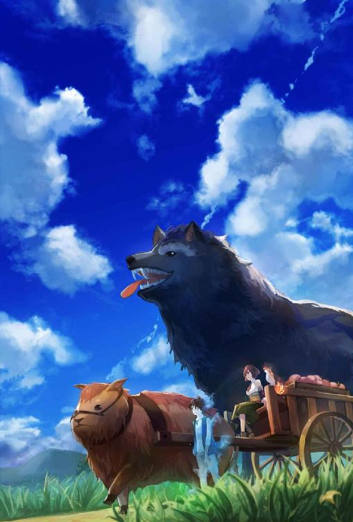
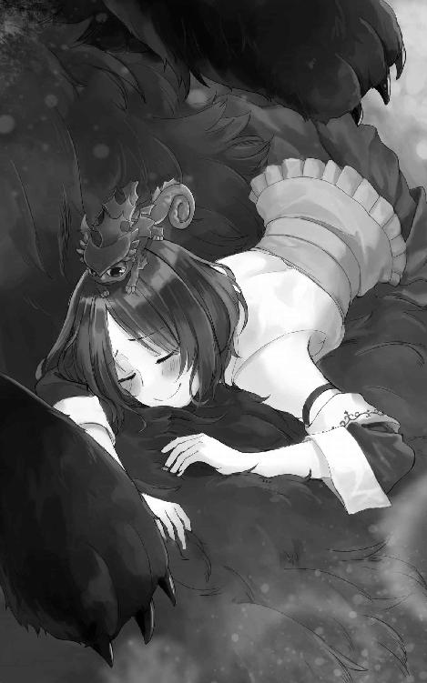
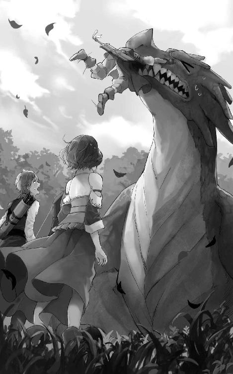
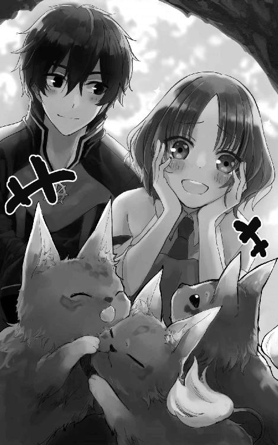
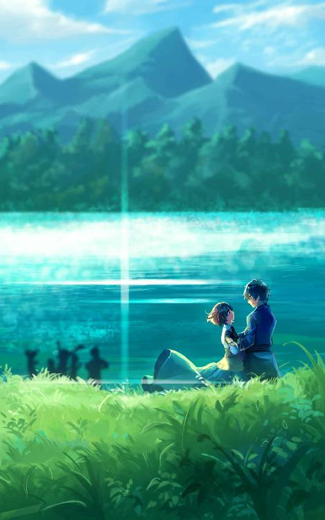

| ミシーと魔物の辺境暮らし［前編］ 〜勇者さん、勝手に家の中のものを持って行かないでください〜 | |
| 吹野このえ | |
| (2018) | |
青い蝶がひらひらとミシーの前を横切った。ピンクの花にとまって羽をとじたりひらいたり。
花を支える茎は細い。青々とした葉に、ちょっとだけ虫にかじられたあと。蝶が受粉をしてくれたから、これから実をつけるだろう。
「ふぁ」
あたたかな風がミシーの赤茶色の髪をくすぐっていく。睡魔にさそわれるまま目を閉じる。
座っている彼女のスカートのひざには、カメリアンというハ虫類型の魔物が乗っていた。しっぽがくるりんと丸まっているのがチャームポイントの、ミシーにはかわいいやつである。器用に体の色を変えるその魔物は、今は冴えた青色をしていた。
ひざにはりつきまどろむカメリアンだが、敵として相対したときになにが恐ろしいのかといえば、唾液である。
捕まえた獲物をほどほどにとかしてむしゃむしゃするのに役立つそれは、人間にとってとても迷惑なものだった。長い舌を鞭のようにして攻撃に使うのだが、ふれた唾液は溶解液の役目をはたして皮膚を溶かし、軽い火傷のようなダメージを負わせる。布の服なら二十イール――二十二分ほど――もすると溶けて穴があいてしまうからすぐ洗わないといけない。
しかしながら二十イールというのは絶妙に人間に都合がいい時間で、カメリアンを倒してから洗いに行くのにちょうどいいのだ。
討伐危険度でいえば一番下の、通称村人ランクと呼ばれるＩゝＪＩゝランク。
他方、人間から攻撃されたら負け確定の弱っちいカメリアンは基本的に人間恐怖症である。
出会ったが最後、怖いから混乱してがむしゃらに攻撃を繰り出し、服を溶かし、嫌われ、追い立てられ、村の子供にさえも討伐されて、恐怖には終わりが見えないあわれな魔物カメリアン。彼らに人間並みの感情と思考力が一瞬でもやどったなら蚊に共感することであろう。
そんな最弱な彼は半眼でまどろんでいた目を丸く開いた。
ひたと見据えた先で、野菜の葉の形が毛虫の頭にそってむしむし変わっていた。カメリアンの体がスカートの深緑色に変化した。
ぴしっと長い舌がのびる。ぱくり。もぐもぐ。......美味。
みんなの嫌われ者が、今や野菜の害虫駆除を一手に引き受けるお役立ち魔物になっていた。魔物生なにがあるか分からんもんである。
ミシーの仲間になったカメリアンたちは幸せだった。
あまり深くものを考えることをしない魔物であるが、なんか人間たちに嫌われているっぽいことは感じていた。めっちゃ殺しに来るから怖かった。人間だけじゃなく、肉食魔物にも襲われるし。飼い犬や飼い猫にすら襲われて、安らぎなんて知らなかった。猫とか特に放し飼いにされているから超こわい。
野生の間は本来の体色も忘れていた。
彼は再び目を半眼にすると、青色に戻ってまどろんだ。
＊
納品日である。
さわさわと草のなびく平原を、バッファルという大型の魔物が歩いている。茶色い毛皮で足が短く、ひとくちサイズのテッタラ――カマボコの形をしたチーズ――みたいな姿をした魔物だ。
バッファルが引く荷車には木箱が、御者台にはミシーが乗っていた。縁には白い鳥が一羽止まっていて、鳥の頭から尾まで線をひいたように炎が燃えている。
荷車の左右にはバッファルより数倍大きい黒い狼と、青年が一人歩いている。ミシーの他はすべて魔物だ。

木箱にはヤシの実ほどの大きさの茶色い実がつまっている。ぶよんぶよん揺れているそれは一年草の果実であるのに肉の味がする。栄養素だって肉そのものなのに分類は野菜である。それで葉肉と名付けられた。
本来は魔物使いが魔物を飼い慣らすために使っていた野菜であったが、おいしいので今では人間も食べるようになった。ミシーの主力商品である。
「こんにちはー」
納品先である食料品店の裏口を開けた。ドアベルがカラロンカラロンと響く。
中には水神を思わせる水色の髪の女性がいて、彼女は「きた！」と輝く笑顔で両手を合わせた。
「ミシーちゃーん！ 待ってたのよ！ 急に砦から発注があってね、在庫がすっからかんなの！」
「あら。他の野菜も少しは育てていますけど、持ってきましょうか？」
「いいのいいの！ 野菜は村ので足りてるわ。でも葉肉はねぇ。今日はどのくらいある？」
「いつも通りですよ」
「味は？」
「今日のはリンレイちゃんが好きなやつですよ」
「まぁ！ もしかしてフルーティなやつ？ それあたしも好きなのよ！」
「え、そうだったんですか？ なんかごめんなさい」
「あはは、気にしないで。あたしがいつも娘が好きってばかり言ってたからでしょ。葉肉ねぇ、あともう少し、いつもの半分だけでも欲しいのだけど、追加頼めるかしら？」
「いいですよ。味は同じがいいですか？ 今はちょうどどれも実っていますよ」
葉肉は春と秋が旬だが、冬にすら実るから、畑を分割して時期を調整すれば一年間ずっと収穫することができる。畑を休ませることも考えると必要な土地はかなり広大になるけれど、ミシーはお金を貯め込んでいたので、危険で田舎で買い手がいないという三重苦な土地を買い占めるのは容易だった。
「そうなの？ じゃあねぇ、あれ、こってりしてるやつがいいわ！ 男性に人気があるのよ。兵士さんたち喜ぶわ」
「あれですね。量は半分でいいんですか？ いつもと同じ量も持ってこられますよ」
「本当？ じゃあいつもの量お願い！ 助かるわー。節約するしかないかなぁって思っていたのよ」
「それはいけませんね。お腹すくのはよくないです」
魔物などは空腹になると凶暴性が増して、ミシーの仲間ですら制御に魔物使いの支配力が必要になる。
空腹は危険だ。よくない。
「あはは、ミシーちゃんはご飯大好きだもんね」
「私じゃなくて、魔物たちが大好きなんですよ。お腹がすくと魔物は凶暴になるんです」
「そうなの。ミシーちゃんと同じね」
「え？」
「ミシーちゃん、お腹すくと顔が怖くなるものね」
「え......」
ぴしりと固まったミシーに、女店主が逆に驚いた顔をした。
（わたしが？）
故郷を旅立って約十年、世界中を旅したあとでこの村に落ち着いたわけだが、ミシーはそんなことを生まれてはじめて言われた。旅先はともかく、故郷にいたときに親や妹、友達くらいには言われてもよさそうなものを。
（あ、そういえばお腹が空くと、何も言っていないのになぜか食べ物をよくもらった......）
「あらぁ、今まで気づかなかったの？」
こくこくとうなづく。
「食べているときは最高に幸せそうな顔をしているわよ」
「それはよく言われます」
「あははは。ならやっぱりみんな気づいていたのよ」
「今それを察しました......」
「うふふ。いいじゃない。ご飯でごきげんになるとかかわいいわよ。それでね、砦で食料を集めているのは、なんでも領内の騎士団を集めて大々的に魔物討伐をするためらしいのよ。三年ぶりの討伐になるわね」
「そうなんですか」
「......干しレッテリあげようか？」
「お腹はすいていませんよ」
商品棚にあった干し果物を見せてくる店主に首をふる。
人間にとって魔物が増えすぎることは危険なことだから倒すことに異論はない。ミシーたちだって敵対する魔物はざくざく倒している。けれどもそれはそれ、これはこれ。
好きな生き物が死んでいくことは悲しいことなのだ。
「そういわず、あげるわこれ。魔物で村を守ってくれてるお礼ってことで。ね？」
「......ありがとうございます」
ミシーは、落ち込んでいるときにやたら食べ物をもらった理由も今理解した。
「討伐はね、領主様のところの三男も来るんですって。領主さまの息子たちはみんなイケメンなのよ！ 楽しみね！」
「そうですね」
（必要以上に魔物を痛めつける人じゃないといいな）
「んもー、ミシーちゃん相変わらずつれないんだから」
「そうですか？」
「そうよー、イケメンに会いたいって意欲が感じられないわ！」
「なるほど」
それなら仕方がない。つれない対応しかできず申し訳ないばかりである。イケメンとは顔がいい男のことなわけだが、それよりも魔物をかわいいと言ってくれる人の方が稀少だ。見ただけで判別可能なうえにたまに存在するイケメンより、いるか分からない魔物に好意的な人に会えると言われた方がミシーはときめける。価値観の違いだ。どうしようもない。
「じゃあ葉肉運び込みますね」
「んもー、クールー」
「......クールかなぁ？」
クールといわれる人というものは、もっとしっかりしていて凜としたかっこいい人ではないだろうか。ＫＵゝＲＵはセリアル語の古語で、古語での意味は《涼やかで気持ちが良い》という意味であるし。
ミシーは上手く説明できないだけなのだ。これはどんくさいというべきではないか。
「ま、どうでもいっか」
他人が何をどう思おうと他人の勝手である。
ミシーはせっせと葉肉の入った木箱を運び入れた。葉肉はそのまま焼いても肉汁と呼ばれる果汁がたっぷりでおいしいし、少し干して固くしてから食べてもまた違った味わいでおいしくなる。使い勝手のいい食材だ。今では動物性の肉より葉肉が肉の代表になっているのもうなづける。動物を育てるよりも手間もお金もがかからないのが最大の理由だとは思うが。
うんっと伸びをして、倉庫の戸を閉めた。
ミシーはバッファルのもさもさした毛の中にある黒い目を見た。洞窟の天上にあいた穴から見える夜空のようなつぶらな瞳。
（綺麗な目。純真な性格が現れてるよね。魔物ってやっぱり可愛い。動物も可愛いけど）
バッファルの大きな顔を両手ではさんで、もさもさーっとする。
「帰ろっか」
「ボ」
バッファルが荷車の御者台に乗りやすいよう向きを変えてくれた。
「門まで私も歩くよ」
「ボ」
ミシーの速さにあわせて歩いてくれる。優しい子だ。そんな性格なのに野生になると魔物の凶暴性が出て性格なんてあってないようなものになってしまうというのだから、魔物というのもかわいそうな生き物である。もちろん性格が攻撃的で野生最高な魔物もいるのだけれど。穏やかな性格の魔物だけを集めたミシーの仲間の数は多い。
バッファルの毛をたまにもさもさいじりながら村を歩いた。
コツと踏む石畳は村全体までひろがっている。すきまからは草が生えているが、全体がすべて石畳というのは普通の田舎の村にはありえない。どこかしら土の道があるものだ。
このククトンはたしかに今は村と言われているが、昔は大きな町だった。城郭都市とすら名乗れていたらしい。
その時代を知る家々の壁には、今はつたが這い、ガラスは曇って人気がない。カーテンは新しいから、たまに掃除をしているのかもしれないが、栄光の時代の遠さを思わせる。
昔も今も変わらず人々を守る街壁の高さは四デラン。
デランは長さの単位だ。
昔は長さの単位が無くて大人何人分の身長くらい、という言い方をしていたらしいが、人によって思う身長に差があることで混乱があった。そこで古代帝国の初代皇帝が、戦の英雄であり彼自身も尊敬していた兄デランの身長を基準としてデランと呼ぶように統一した。
帝国が滅んだ今でもその言葉は残り、帝国のあった大陸では高さのみならずすべての長さの単位としてデランが採用されている。当時デラン氏が生きていたならば全力で弟を止めたかもしれないが、名誉ある戦死をとげていた彼にはどうしようもなかったのだ。――ちなみに彼の身長はメートル法に換算すると百九十二センチメートルである――
ミシーからしたら見上げる高さのデラン氏が四人分ということで、かなりの高さの街壁だ。空を飛ぶ魔物と、跳躍力がある魔物でもなければ侵入はされないだろう。
遠くで子供達の遊ぶ声が聞こえる。
「なんか幸せ」
何があったというわけでもないが、ほわっと身の内から安らぎがあふれてきた。
（この村の気配、好きだな）
王都の中心地からはずれた路地裏で花が咲き誇っているのをみつけたみたいな、そんな楽しさがある。
ふふふんふんと足取りかるく歩いて行くと、街壁の門の内側を守るおじさん兵士と目が合った。
「お、もう帰りかい」
「はい」
「いやぁ、精が出るねぇ。俺らもさ、ミシーちゃんが来てから飯が楽しみになったんだよ。ありがとうな」
「ふふ。それはよかったです。お仕事がんばってくださいね」
辺境にあるククトンの村は魔王の領域にほど近く、強い魔物が出没する。魔物は動物を狙うが葉肉も狙う。だから育てるのが危険な肉は、村では生産せず領主が騎士に守らせて遠くから支給してきた。日持ちする乾燥葉肉を。
彼らが肉汁あふれる新鮮な葉肉を食べられるのは、ミシーが来たからだ。広大な土地を買い占めて、魔物に襲われるのを気にせず好き放題しているミシーの土地を、人はミシーの箱庭と呼んでいる。ミシーはこれでもすごい人物なのである。
「おう。ミシーちゃんの魔物にまかせっきりにはしないよ！」
笑って片手を上げた。
門に入ると、向こう側にあるブラックの黒いお尻が見えた。ふさふさのしっぽが地面にぺたりとついている。
男性の声がした。
「いやいやいや、まだ慣れないよ。ブラックウルハウンドだよ？ おとなしいのは分かっているんだけどなぁ、やっぱりこうして見ていると......怖いなぁ！」
ブラック達がいる方からだ。怖いと言いつつ楽しそうである。気分は肝試しか。
「ですよね」
と今度は少し若い声。
「怖いですよね。俺もまだまだ。兵士ったってブラックウルハウンドなんてＤＥＳＵランク魔物になんか会ったことあるわけないですから、この村に派遣されてはじめて見たときは死を覚悟しましたよ。すげぇでかいし。しょんべんちびらなかった自分を称えたいです」
「ははは！ しっかり飼い慣らされてんだけどね」
「攻撃してこないって分かっていますけど、怖いですよ」
そして三人目の声がした。
「すごいよなぁブラックウルハウンドにフバにクェラルだよ。ミシーちゃんに頼んで魔物たちで訓練させてもらえたら、かなりいい経験になると思うんだよなぁ。駄目かなぁ」
「そりゃあ、最低でも度胸はつくでしょうけど......えーやだなー」
ミシーの赤茶の髪に光がそそぐ。外で待っていたブラックが一目散に駆けてきた。彼女はしっぽをふりふりミシーの顔をなめ回す。遅れた紹介になるがブラックはメスだ。名前にごまかされてはいけない。
「うぶ、うっ」
でかい舌でべろべろにされて、ミシーの首が折れそうである。
「た、助けた方がいいのか？」
「いや、でも喜んでいるだけですし......」
「大丈夫なのか？」
「いつものことだよ」
ブラックの長くて太くてふっさふさな黒いしっぽが、街壁にバスッバスッとかすって壁がちょっとくずれた。
「まず近寄れねぇし」
「そうですね......」
「ぶ、ブラック、分かったから、もうやめて」
黒狼はおすわりをした。地面をえぐるしっぽのふりふり攻撃で、周辺の草が除去される。自動草取り。土煙付き。畑では使えないな。
ミシーはびちょびちょになった顔をタオルでふいた。ブラックのなめなめはいつものことなのでタオルは常備しているのだ。
「フバ、クェラル」
門番たちの近くにいた二体がそばへ来た。
フバは淡い茶髪の凡庸な青年に見えるがそれは幻で、本体はかすみのように実態がない水の魔物だ。
頭から尾までを炎が走る鳥の魔物クェラルは、白い翼をひろげて優雅にすいっと飛んできた。荷車の縁にとまる。木の荷車なのに炎が燃え移ることはないのだから不思議なものである。
ミシーは門の外側を守る二人の兵士と、彼らといる農夫の方を向き、片手をあげあって挨拶した。
「ミシーちゃん」
背を向けようとしたミシーに、赤毛の兵士が近寄ってくる。
「ちょっと頼みたいことがあるんだけどいいかな？」
「もしかしてさっき話していたことですか？ 訓練をしたいとか」
「聞こえてた？ お願いできないかなぁ。定期的に討伐には出ているけど、強い魔物に出会うやつばかりじゃないから実力に差が出ちゃってさ。弱い魔物としか戦ったことがない兵士がミシーちゃんの魔物と戦ったら、すごくいい経験になると思うんだ」
「協力はしてあげたいですけど......」
ミシーの仲間の魔物たちは争いを好まないが、戦闘という体を動かす行為は好きな子が多い。今も話を理解したブラックたちから胸の高鳴る感覚が流れ込んできた。
「強い魔物と戦ったことのあるやつも、Ｄ魔物と戦う機会はそうそうないからさ。戦ったらこの辺りの魔物に怖じ気づくこともなくなると思うんだ」
Ｄ魔物とは、魔物討伐危険度ランク最上位のＤＥＳＵと二番目に強いランクＤＥＮＪＡゝをまとめてひとくくりにした呼び名である。
この上位二つのランクの魔物は出現頻度が低いかわりに恐ろしく強い。この国で使われているケルバ語の表記だと頭文字がどちらもＤなため、まとめてＤ魔物と言われている。
ミシーの生まれ故郷は別の言語の国だったが、そこでは二つのランクをまとめて災害級と言っていた。ミシーは世界中を旅してきたけれど、どこの国でもこの二つのランクはひとくくりにされていた。そのくらい三番目とは格が違う。
ミシーの仲間でＤＥＳＵランクはブラック一体だけだが、ＤＥＮＪＡゝランクは十三体いる。フバとクェラルもＤＥＮＪＡゝランクである。護衛は少数精鋭なのだ。
「そうですね......武器を、刃がつぶれているやつにしてくれるならいいですよ」
「するする！ 協力してもらうのに怪我させちゃ悪いもんな」
「でも魔物の爪はまるめられないです。殺さないように伝えますけど、兵士さんたちも怪我はしちゃうと思います」
「いいよいいよ！ 砦には一級の治癒魔道士がいるから問題ないよ」
「ちょっセイブさん、本気ですか」
もう一人の兵士が赤毛の兵士の肩をつかんだ。
「おうよ！」
「やめましょうよ。死んじゃいますよ⁉」
「ははは！ 大丈夫だって、がんばろうぜ！」
「なんで恐くねぇの⁉」
まだ新人らしい兵士の悲痛な思いは置き去られ、ミシーの仲間たちによる訓練は後に正式決定された。家で手紙をひらいたミシーは内容を読んでくすりと笑う。
《討伐作戦の後にぜひ開催したい。楽しみにしている》
魔物との境界であるこの辺境を守る兵士には、セイブのような性格の者の方が多いのかもしれない。
「いやがってる兵士さんがんばれ」
同情はしてもやめるとは言わないミシーだった。
＊
大をつけるほど領主が気合いを入れている討伐作戦まであと三日となると、人が続々と村にやって来た。
村民三十五人プラスミシーという小さな村なので、他所の騎士団が二団体来ただけで地元民は人数負けだ。騎士団と一緒に商人もやってきて、大量の干し葉肉や雑貨品、今や贅沢品となった魔物や動物の肉や皮を店に並べて商売にはげんでいる。無人の家のカーテンが新しかったのは、こういう時に宿泊所とするためだった。
村は古い時代に戻ってきたかのような活気にあふれていた。
「さぁ行こう」
いつもより早い納品日だ。
車輪が草地を踏む。やわらかな風がミシーの赤茶色の髪をなで、冬の間は凍って風に乗ることのなかった土の匂いが鼻腔にとどく。となりにいるブラックは周囲の匂いをとりながら歩くから、大きな歩幅でもバッファルと同じ速度で進んでいる。カメリアンは今日も箱庭の外は恐いからお留守番。
「......人がいる」
数日前と代わり映えのしない草原の先、見えてきた村の門に門番以外の人がいた。その門は他の町につづいてなどいない裏門なのに。
「違う町に来たみたい」
冒険者が数人。大討伐作戦前にちょっと魔境の森を様子見にいこうとでも思ったのだろうか。
ミシーは意味もなく髪を手でとかしてみたり、姿勢を正してみたりした。見知らぬ人に会うのがひさしぶりすぎてどきどきしてきた。
そんな彼女は小柄である。バッファルがひく荷車の御者台にいるが、正面から見ると鎖骨から下がバッファルで隠れている。そしてブラックが大きすぎるため、正面から見てミシーの存在感はゼロだった。
ここで問題だ。
そんなご一行を見た冒険者たちはどんな反応をするでしょうか？
①あれが噂の魔物使いのご一行か。と冷静に観察して受け止める。
②群れないはずのＤ魔物が三体同時に来ただと⁉ バッファルも仲間なのか⁉ ブラックウルハウンドの保存食か⁉ と驚き戸惑い恐れながらも、大討伐作戦に呼ばれるほどの戦士らしい気骨を見せて街壁内へ応援を呼びに行こうとしたところを門番の兵士に止められる。
③仲間が応援を呼んでくる間、村に入れないよう足止めをするぞと覚悟を決めて剣を抜く。じりじりと緊張していると兵士や冷静な仲間に肩を叩かれて真実を伝えられる。
④魔境の森ではあんなのを相手にするのか⁉ と門番の兵士にたずねて真実を知る。
⑤腰を抜かす。ちびる。
⑥逃げる。
選んだだろうか。おめでとう。ひねくれた答えで無ければ正解だ、全部が正解だから。⑦の全部というクイズ慣れした答えなら大正解である。
テルティート！
祝福を君に。
そんなこんなで大注目をあびながらミシーは門扉前にやってきた。役目をはたさない扉の代わりに冒険者が通せんぼしている。
「ブラック......ウルハウンド」
剣士らしき男性がごくりと唾を飲んだ。無骨な手は剣の柄を握っている。
「はは、シルキルとポビアすら初めて見た」
そう笑うのは魔道士らしき青年。
「すごい魔物使いだな。なんで彼女は作戦に参加しないんだ？」
冒険者でただ一人冷静だった治癒魔道士が首をかしげた。
兵士がふふんと胸を張る。
「彼女の魔物は平和主義なんだよ。大きな戦いに連れ出そうとすると猛抗議するんだ。でもな、防衛のためには戦うから、森で対処不能のＤ魔物が現れたらミシーさんの箱庭の方に誘導すれば倒してくれるってことにはなっているんだ。実はすげぇ頼りにされているのさ」
「なんだ、なら参加しているようなもんだな。ミシーさんってのは聞いたことあるが、箱庭っていうのは魔境の森近くにあるのか？」
「それがな、魔境の森と接しているんだよ！」
「へええ。さすがだな」
「......あまり驚かないな？」
「驚いているぞ。すごく」
「顔に出ないだけか。ふふ、うちの魔物使いはすごいだろう？ ははは」
地元の名士をほめられてご満悦な兵士の顔がミシーにもよく見える距離になった。お調子者だが気のいいひげもじゃおじさんだった。だが、ミシーが顔を覚えているほど面識のあるおじさんも、ミシーたちが、というよりミシーの仲間が近づくにつれて顔色を悪くしていった。
門にいる全員が武器に手をかけた。
（やっぱりこわいんだ。兵士さんは少しは慣れてきたと思うんだけど、まだだめか）
本日もミシーのお供は、ブラックとバッファルとＤＥＮＪＡゝランクが二体だ。なおこのバッファルは先日のバッファルとは違うバッファルである。今日の子の方がちょっと顔が細め。
不安定な荷台に優雅に腰かける風の魔物シルキルは、黄緑色の髪を持った美女である。その腕がカラフルな翼でなかったら、着ている白いワンピースがよく見たら体から生えている羽毛でなかったら、羽毛のスカートからのびる美脚の先の足がかぎ爪でなかったら、男が次々に交際を申し込むだろう美貌とオーラをもっている。なかには魔物でもいいという男だっているだろう。
もう一体は、荷車の上に陣取って緑の葉を茂らせる魔物。ポビア。
海に根を張るマングローブのような根で積み荷を包み、幹の頂で巨大な赤い花をゆらしているポビアは歩けない。だがその存在を知られている程度には人里にやってくることがある魔物である。どうやって移動するのかといえば、他の魔物や人間にポビアの本体で寄生し、体を支配することで移動するのだ。ポビアの本体は硬く小さな種である。
それとは別に他の生物を支配するための種も持っており、その種でポビアに襲われると体を乗っ取られるだけでなく、最後には栄養を吸い尽くされて枯れ木のようになって死ぬ。本日のＤ魔物三体の中では一番えげつない殺し方をする魔物だろう。他の二体は単純な惨殺なので。
そんな魔物が三体仲良くやってくる。
冒険者ギルドのすみっこに貼られっぱなしになっている《Ｄ魔物一覧絵・これを見たら即逃げろ》のポスターに描かれている魔物が、三体も。
「本当に敵じゃ、ないんだな？」
剣士は言いながら、ポスターに書かれていた《ギルドに発見報告をして有益な情報であると認められた者には、金貨一枚を報奨としてお渡しします》の文字を思い出していた。ミシーの仲間を報告しても意味はないのだが、これがもし敵だったら金貨三枚もらえるのかな。とか思う。
彼の警戒の声にミシーはくすりと笑んだ。
（なつかしい）
旅をしていた頃は訪れる町々で必ず聞かれた。職務質問はさけられない旅だった。本当にここがはじめてきた町のような気がしてくる。
「この子たちは私に使役されたテイムモンスターです。防衛以外で人に危害は加えません。それに元から魔物でありながら平穏が好きな変わった気質の子たちなので安心してください」
「Ｄ魔物が？」
「人間と同じで魔物にも性格に個体差があるんです」
「......本当か？」
（めんどうだな）
人間が魔物に恐怖するというのは本能的なものであるから、口でいくら説明したところで時間の浪費にしかならない。習うより慣れろ。チノミの味は食べねば分からん。である。
「ブラック、シルキル。仲良くしてあげて」
フンッと鼻息で返事して、ブラックウルハウンドのブラックが剣士の前へ行った。
とっさに握られていた剣が抜かれ、ブラックに向けて一閃される。あ、と誰かが声をあげた。
先制はたしかに剣士だった。だが軍配はブラックに上がった。キィンという音と共に、攻撃したはずの剣が宙を飛び、青空を斬って地面に転がる。ブラックの黒い爪がギラリと太陽の光を反射している。
丸腰になった冒険者の前に、巨大な黒狼の口。
――喰われる。
そう思ったのは誰だったか。
悲鳴はあがらなかった。
剣士の彼は全身を粟立たせながらも、あわれな仲間のようにちびりもしなかった。ブラックだけが動いているかのような時間。巨大な口の中から出てきた真っ赤な舌が剣士の顔へのびる。べろりん。
「ひっ」
ブラックはお座りをした。黒真珠のような目で人間たちを見下ろす。
剣士は思い通りにならない体を動かそうとしてか、ひくひくと身をふるわせながら後ずさっていった。
（あれ？）
ミシーは首をかしげた。なんか思っていたのと違う状況がうまれている。
ひげもじゃのおじさん兵士がくっと笑った。剣士の隣にやってきて、手の平を上に出す。
「お手」
てし。
「おお......」
巨大な前足が片方だけあげられているという、間の抜けた巨大狼の姿。
人々の間に奇妙な感動がひろがった。
攻撃されないなんてすごいというか、最恐のブラックウルハウンドのそんな姿を見るのはショックというかな、なんともいえない感動というか動揺というか。
（あれぇ？）
やっぱり思ったのと違う反応で、ミシーが首をかしげた。
ＤＥＳＵランクのブラックが攻撃せずに大人しく犬の反応をしたら、驚きと共に感動して受け入れてもらえるのではないかと思ったのだが。ククトンの村の子供達はこれで慣れたのに。大人と子供は違うということか。
ミシーががっかりしている間に、翼を持つ美女シルキルが人々に近づいた。
緊張するとニヤけるタイプらしい魔道士の青年と目を合わせ、ほわりと笑む。
息をのんだ彼の頬を、多色の羽が生えた翼がやさしく撫でた。緑の中に赤い虹彩がまじる瞳がじっと彼を見つめる。
にやけていた口から力が抜けた。
シルキルの視線が他にうつる。
「あ......」
魔道士は『行かないでくれ』と別れた彼女にすがりつくような目で追うがシルキルは彼を見ない。魔の瞳に魅入られた他の男たちも、一人また一人と顔をぼうっとしていった。
美しき魔物シルキル。
その魅了の力で人間をとりこにしてから風の魔法や爪で切り刻む魔物だ。
シルキルに相対するときは、彼女の魅了がかかりにくい女性冒険者をかき集めるのが一番苦労する点であったりする。女性魔道士は多いが、前衛の肉体派は少ないからだ。なお心は乙女で体は男な男性？ も魅了にかかりにくいので貴重な戦力である。
そんなシルキルにもオスがいる。たまに人里にやってきて、このときは女性が魅了されてしまうのだけれども。
男性冒険者が多いのはもちろん、彼女をとられた怒りや、モテ男への嫉妬にまかせてあっというまにオスは倒されるから、危険視はあまりされていなかったりする。おかげで魔物名も女性名のシルキルだ。メスのシルキルに魅了されたことのある男にとっては、シルキルと交尾できるオスが嫉妬の対象ですらある。シルキルの子作りがキスだけで終わることを彼らは知らない。
シルキルのおかげでこの場にあった恐怖はすっかり色っぽくなった。
ブラックのお座りとお手というなごみ攻撃は意味があったのかという問題はさて置いておいて、ミシーはバッファルを歩かせた。
「私は中に行きます。ブラック、シルキル、ポビア、いい子で待っててね」
ポビアが本体の種を地面に飛ばした。
わさっと葉が茂る。そのまま煙が立ち上る速さで木になった。根は普通にすべて地下にある。荷車を守っていたマングローブの木は藁のような繊維状の木くずになって落ち、木箱がうもれた。
「ポビアの木って一種類じゃなかったのか」
「聞いたこと無いぞ、そんなの」
冒険者たちの声に、門番たちが『俺知ってたし』と鼻を高くしている。
「なんでここに学者が来ていないんだ？」
治癒魔道士の青年が言う。ごもっともな疑問だが、ミシーとそりが合わないからである。
ブラックは去って行くミシーをじっと見ていた。シルキルはうすく微笑んだまま右翼を振った。ポビアはよくわからない。
ところどころ石畳がはがれている道の上を、戦闘に向いた服を着た人たちが闊歩している。道の両脇にある空き店舗では、他所から来た商人が品物を並べて客の相手をしていた。
ミシーがこの村に来て早一年。こんな村の姿は初めて見た。
しかし驚いたのはミシーだけではないらしい。
のっしのっしとバッファルが歩くのに気がついた冒険者たちが目を見開く。
「え、バッファル？」
「あらバッファル」
「......はっ！ つい狩ろうとしちまった」
「おお、うまそうなバッファルだな」
さすが討伐作戦に参加する実力派冒険者たち。バッファルは肉にしか見えないらしい。これでも強い魔物なんだぞ。
「テイムモンスターか。お前魔物使いに使役されたなんて運がいいな。普通食われてるぞ」
巨大な剣を背負ったおじさんがそんなことを言って、バッファルの体をぽんぽん叩いた。
「ボ」
ミシーには『意思疎通』という、使役している魔物と思念で考えを伝え合える能力がある。言葉というより感情の送りあいに近いが。その影響で彼女のテイムモンスターは人の言葉をいくらか理解できている。今ミシーに届いたバッファルの思念を言語化するなら。
『同意』
といったところだ。
「......落ち着いてるな。お嬢ちゃんいい魔物使いなんだな」
「ふふ、ありがとうございます」
おじさんは片手をあげて去って行った。
「お、バッファルじゃん。狩ろうぜ！」
別の場所からそんな声があがる。
「おい、よく見ろ、荷台をひいているだろう。テイムモンスターだ」
「あ、本当だ」
剣を抜こうとしていた金髪の青年は残念そうに肩を落とす。彼を止めた青年の茶色の瞳とミシーの目が合った。
「ごめんな」
すまなそうに言われて苦笑する。
というやりとりを、手を変え品を変え、あと四度ほど繰り返してからやっとミシーたちは食料品店にたどり着いた。ぐったりだ。
カラロン、裏口を開けると店のカウンターに立っていた女店主が振り返る。今日は水色の髪を太い三つ編みにして背中にながしているようだ。
カウンターの向こうには冒険者らしき人たちが複数いた。並べられた商品を見て回っている。カウンター前にも一人。かなり遠くの地で見た覚えのある民族衣装の男性だった。
「ミシーちゃん。ごめんね、今日は忙しくって対応できないのよ」
「分かりました。では報告だけで。荷物は倉庫に入れておきますね」
「ええ、ありがとね」
言うや女店主は背を向ける。男性の声がした。
「この葉肉のサンドと、こっちの乾燥肉と――」
カラロン。この音だけが変わりなく、なんだか心に優しい。
店と倉庫の間を、店主と同じ水色の髪をしたリンレイと、そのいとこの少年が荷物を抱えて行ったり来たりしていた。二人と言葉少なにあいさつしてミシーは木箱を運ぶ。
「あ、バッファル」
「だめ！」
「だめ！」
ミシーの声にかぶさって少女の声が同じ事を叫んだ。
急いで倉庫の外に出ると、リンレイが黒髪の女性とバッファルの間に立っていた。
「この子はミシーさんのなの！ 食べちゃダメだよ！」
「そうなのか！ 飼育しているのか？」
先ほど店内で見た男性と同じ国の民族衣装を着た女性は、腰に長剣と短剣をさしている。
あれは確か、刀といっただろうか。
「しいく？」
「育ててから食べるのか？」
「え⁉ 食べないよ！ バッファルはね、みんなの友達なの！」
村の子供たちは、バッファルによじ登ったり抱きついたりごわごわすると文句言ったり毛を引っ張ったりするのが大好きだ。そんなにされてもバッファルは「ボ」と言うだけである。
「友達か！ そうなのか。友達は食べられないなぁ」
目をつり上げる少女と、ほほえましげに目をたれさせる女剣士。
「食べたいならミシーさんの葉肉にしなよ！ おいしいよ！」
「そうかぁ宣伝までしてえらいな」
長髪をポニーテールに結んでいる黒髪の女性は、思わずといった風に水色の頭を撫でた。
「さらさらだな」
「勝手にさわらないで」
プルプルとリンレイが首をふって距離をとる。
「はは、ごめんごめん。そこにいる人がミシーさんかな？ ごめんね、バッファルを食べるのは諦めるから許してよ。あはは」
苦笑してミシーはリンレイを見た。青い瞳はミシーよりも怒っていた。
「大丈夫、この人はバッファルを攻撃しないよ」
「そうかなぁ。なぁんかフザケてる気がするよ？」
（それはあってると思う）
ふふと女剣士は笑っている。
「大丈夫。もしそうなったらすぐシルキルが飛んできて助けてくれるから」
「そうなの？ それなら心配しなくてよかったね！ なぁんだぁ、そっかー」
ミシーの大丈夫という言葉よりも『シルキル』という魔物の名一つの方が安心するらしい。こっそり悲しいミシーであった。
「じゃー私手伝いにもどるね！ じゃーね！」
「守ってくれてありがとうね」
「えへへ。どーいたしまして！」
腕にカゴごと抱えていたパンをいざ届けん、と少女は身軽に走りだす。ちょうど店から出てきたいとこの少年と、リンレイがばったり会った。
「リーねーちゃん、なにしてたん？ お客さん待ってるよ」
「バッファルを守ってたの！」
「バッファル？」
という半端な会話で二人は別れた。茶髪の少年がこちらを見て、納得したように「あー」と言って倉庫へ走って行く。あの少年の親も日用品店の店主なのだが、そちらは混んでいないのだろうか。日用品だから冒険者は関係ないのか。
「いやぁ、騒がせてごめんね」
はは、と女剣士は笑ってバッファルの体をぽふぽふする。
「大人しい魔物だね。わたしバッファルは食べたこと無いよ。葉肉より野菜が好きなくらいだから」
「そうなの？ なんだ。冗談なんだ。よかった」
「でもこの町の葉肉は美味しいから好きだよ。さっぱりした味のがあるよね。水色のタグがついてるやつ。あれ大好き。まとめ買いしたいくらい。あれ作ってるのあなた？」
「ええ」
「どうやって作ってるの？ あんなの食べたことが無いよ」
「あれは水に土の栄養を溶かして水中で育てているの。魔物がいないと私にも作れないよ」
「水中で⁉ それはすごい。魔物使いだから作れたのかぁ。残念だな。簡単なら故郷でも作らせようかと思ったんだけど」
「ふふふ。帰るときに干し葉肉をいっぱい買っていくしかないね」
「そうするよ。それじゃあ、仕事の邪魔してごめんね」
ひらひらと手を振って去って行った。それにしても今日は見知らぬ人とたくさん交流する日である。
荷下ろしが完了した。
商品の代金は月のはじめに前月分がまとめて支払われる。
今日はもう早く帰るぞと気合いを入れて、ミシーは人通りの少なさそうな道を通った。いつもと違って王都の外れではなく中心地にいるような賑わいが耳を楽しませる。楽士まで来ているのか、軽やかな音色が流れてきた。
「変われば変わるものだね」
裏門を出たところでぎょっと目をむいた。
シルキルの周りに男が何十人と集まっている。まるで長年待ち望まれた王族の子供をひとめ見ようと国民が押しかけているような人気ぶり。
殺そうとしてこないシルキルなんて、男からしたら天使のようなものなのか。失敗した。最初にいた六人だけなら問題ないと思ったが、噂がひろがるのは早い。今の村には人が大勢いるのだ。想定しておくべきだった。
ブラックのまわりだけ毒でもまいてあるように人が遠巻きにしているのが切ない。三体の中で一番さみしがり屋なのは彼女なのに。
ミシーは三体の魔物に『おいで』と思念を送った。
我関せずで風にそよいでいたポビアが、樹上の赤い花から種を飛ばして種を荷車に突き刺した。ポビアの近くにいた冒険者が藁のようになった木くずをかぶって、まるで冬の野菜のようになる。冬に育つ野菜は根元に藁をかぶせて霜から守るのだ。なおミシーの箱庭では藁の代わりにこのポビアの木くずが活用されているのでより酷似している。荷車にささった本体の種からわさっと葉が茂った。またたくまに成長すると、またマングローブのような根を張って、根の中にミシーが入れるような空間を作った。
魔物はミシーを守ることにかけて真剣だ。ミシーがいなくなったら野生に戻ることになるから。
ブラックは、雪が積もっても流れ続ける川のように、人の間に道を作ってやってきた。ミシーの疲れを感じたのか、今日のお帰りぺろりは一回だけだ。
シルキルは跳躍し、両翼を広げて空を滑空した。
彼女の羽毛のワンピースは体に生えているものであるから実はスカートではなく短パン型で、スカートの中がチラ見えなんてサービスショットは存在しない。
おお！ という歓声の後に、ああ......と残念そうな声。
シルキルに『あれ（男たち）どう思う？』と思念で聞いてみた。
返ってきたのは、彼女の心の奥底にある惨殺したい衝動がさわさわと刺激されて困る、というものだった。彼女の足のかかとから生える白いかぎ爪の一つがカツカツと地面を叩き、土をえぐっている。
シルキルは人間を魅了してたくさん集めたところを一網打尽にする魔物だ。人に群がられてやっちまいたくなったのであろう。
（うちの子が野性に負けちゃう）
村に人が集まっている時はシルキルに護衛はさせないようにしよう、と心に誓ったミシーであった。
ミシーの箱庭は、半分が人の領土に、もう半分が魔境の森の中にある。
魔境の森は魔素がたまっている場所であるダンジョンの中でもとりわけ魔素が濃い森だ。かつていた魔王が倒されて魔物の発生が抑えられたあとの時代であっても森が切り開かれることはなかった。ひとえに魔素が危険だからだ。
ミシーがここに拠点を置こうと決めたとき、村に古くから住むご老人方にはこう言われたものである。
「あの森の木を切ると魔物になるそうだ。人間をやめたくなければ切ってはならない」
なのでミシーは仲間の魔物に切ってもらった。
魔物達の自己申告『問題ないよ』もあったから。
ミシーに影響は今のところ何もない。一応自宅は人間側の土地に建てたし、冒険者というものはそもそもが魔素に強い耐性がある、もしくは慣れさせて身につけた人だ。だから元冒険者であるミシーは平気なのだろうと思っている。
森を切り開いた魔物に何か不調や変化はあるか聞けば『気分が良い』『魔力が増えた』という喜ばしい返事であった。あとは『葉肉がすごく食べたくなった』もあったから体への影響はあるのかもしれないが、それだけだ。悪影響とまではいえないだろう。
その話を村のおじいちゃんおばあちゃんに話したら「こずるい」と笑われた。
禁忌を犯したからと邪険にされるとかはないが、ミシーはご老人方から「こずるい嬢ちゃん」と呼ばれている。
こずるく獲得した箱庭に帰り着いた。
人間側の土地には一面の畑が広がっている。
今日は疲れたからもう、すぐお風呂に入って寝よう、と家に近づいたミシーの前に、ブラックが体を割り込ませてきた。
わさわさしている黒い尻尾はぴんと緊張して、高く上げられている。
何か警戒しているらしいことは分かるが、黒狼が大きすぎて何も見えない。
シルキルがミシーの代わりとばかりにブラックを追い越して歩いて行った。シルキルから『待ってて』というような思念がかろうじて届く。
こういった時の魔物の思念は敵意に支配されていてほとんど要領を得ない。
ブラックが何かに集中して文句を言わないのをいいことに、ミシーは長い毛をぐわしとつかんだ。
「よっ、はっ」
ふわさらでちょっと硬い毛を頼りにブラックの体をよじのぼっていく。
仲間たちが警戒しているのを無視して家へ向かうのは軽率だろうが、安全なブラックの背中の上から様子をうかがうのは許されるはずだ。
ぷりぷりした大きなおしりに手をかけたところで、荷台にいたポビアが蔓でミシーの体をぐるぐる巻きにして捕まえた。
「わっ」
そのまま空中を移動してブラックの背中に乗せてくれる。
「ポビアありがとう」
見上げると、わさわさと枝が動く。そして黄色い小花が蔓の途中にぽっと咲いた。
「ふふ、嬉しいの？」
思念が苦手なポビアの精一杯の意思表示だと思えば愛おしい。蔓をちょっとなでてから、ミシーはふかふかの背中を移動した。ブラックの頭にへばりつく。
家の扉の前にシルキルがいた。
ミシーの家には二種類の扉がある。
一つは普通の民家らしい扉。そしてその横にあるもう一つの扉は、本来は倉庫に使われる巨大な扉だ。これはブラックのように大きな魔物も入れるようにと作ったものだった。
シルキルは人サイズ用の扉の前に立っている。
家の鍵はミシーが持っているから今は閉まっているはずなのに、シルキルが翼で扉をひっかけると、ぎぃと音をたてて扉は開いてしまった。
「......え？」
驚いていると、中から、
「わ！ すごい美女」
少年の声がした。
シルキルがぶわりと風を生み出し、家の中に送り込む。
「わ、うああ！ 飛んだ⁉」
シルキルの空中飛行は翼の力だけではなく、風の魔法の効果が合わさってのものだ。翼があれば魔力の消費を抑えられたり小回りがきくというだけで、魔法だけで空を飛ぶことも可能である。
シルキルの魔法にからめとられて、突風と一緒に中から飛び出てきたのは、まだ青年とは呼べない金髪の少年だった。飛行の魔法が消え、彼はごろごろと地面を転がる。
「おぶ、ぐっ」
仰向けに倒れた少年の顔立ちは整っているが、勝ち気な印象の方が勝る。
起き上がった謎の少年は、シルキル、ブラック、そしてブラックの頭の上にいるミシーを見た。ポビアとバッファルはブラックで隠れている。
「え、え......？」
戸惑っていた顔が、ミシーをじっと見たあとでなぜか満面の笑顔になった。薄茶色の瞳は、髪の色もあいまってきらきらしているような錯覚を受ける。
「すごいな！ 魔物使いだよね！ ここは魔物使いの家だったんだ！」
そうだけれども。
誰の家かも知らない家に勝手に入っていて悪びれていないってどういうことだろうか。
内心で頭を抱えたくなりながらミシーは一応聞いてみた。
「なんで私の家に勝手に入っていたの」
「知らない家があったら入ってみたくなるだろ？」
「ならないよ」
「そうなのか？ 俺は入れるすべての建物の中に入って地図を完成させないと気が済まないんだよな」
「地図？」
「うん。あ！ そっか、他の人は地図スキルがないんだっけ。だからか！」
「地図スキル？」
「これ」
と言って空中を指さすけれども、そこには何もなく、さわやかな春の風が吹き抜けた。今日も空は青い。
「何も見えないよ」
「やっぱりかぁ。他の人には見えないんだよなぁ。でも俺にはここに地図が見えてんの！」
と何もない宙を指さしているその腕で、意匠の凝った細い金の腕輪がキラリとした。
「その腕輪に見覚えがあるのだけれど」
「これ？ うん。この家にあったやつだからそうだろうね」
ひくり、とミシーの眉が痙攣した。
「この家にあったものがどうしてあなたの腕にあるの」
「不要品だったからもらった」
「......意味が分からない」
「家の中にさ、持ち主に忘れられた不要品っていうものがあるんだよ。俺はそれをもらえるスキルがあるんだ」
「待って、不要品はいいけど、もらえるってなに？」
「スキルの名前が『不要品取得』なんだよ」
能力なのだ。と言われるとなんだか納得してしまう不思議な力がスキルという言葉にはある。けれどもミシーは頭に手を当てて、ぐぐっと意識をしっかり持った。
スキルというものは才能と努力で身につくものだ。
たとえばミシーの『魔物使い』と『意思疎通』は、討伐されそうになっていたみんなの嫌われ者カメリアンを保護して、なつかれ、四年もの歳月を仲良く一緒に暮らしたことで身についた。
ミシーの例にあるように、そのほとんどは努力によって身につくもので、いわば身につけた能力に名がついただけのようなものなのだが、これが逆になる天性のスキルというものがある。
才能によって身につくそれは、何かきっかけがあったときに目覚めて、持ち主に力を与えるのだ。その力は神から人間への贈り物なのだとか言われたりして、持ち主は賢者や聖者や勇者と呼ばれる者になることが多い。
不要品取得、というスキルは、世界一周魔物集めの旅をしたミシーですらはじめて聞いたから天性のものだと思うけれども、いらないものを東方の国の人たちみたいに「もったいない」「もったいない」といって有効活用してきた人が身につけたスキルと考えてみると普通のスキルにもありえそうである。
天性のものであるなら、なにか重大な意味があるのかもしれないが。しかし。
「......不要品があったとしても、人の物を勝手に持って行っちゃ駄目でしょう。どろぼうでしょう」
「やっぱそうかなぁ？ でもさ、スキル説明には、忘れられていて日の目を見ることがないものを得られる。ってあるんだよ。忘れられているんだったら俺がこっそりもらって活用した方が道具にとってもいいと思わない？」
なんだかいいことを言っている気もするが、人の物を勝手に取っていくのはどこの国でも普通に犯罪だ。
「認められない」
「そっかぁ......テロップが出るものはもらっても誰も怒らない物なのかと思ってたんだけど違うのかな」
少年は、うーんと首をひねっている。
「てろっぷ？」
「こういう、四角い半透明の板に文字が書かれて出てくるんだ『これを持って行きますか？』って」
彼は両手の人差し指を動かして、横に長い長方形を描く。大人の男性の手のひら三つ分ほどの大きさだ。
「その腕輪にもテロップは出たの？」
「うん。こんなにひきとめられたのはじめてだ。不思議だけどこれ返す。ごめんな」
「......うん」
金の腕輪を持って出された手へ向かって、ミシーの背後からするすると蔓が伸びていく。
「うわっなにこれ」
金髪の少年が後ずさった。
「お姉さん魔物使いじゃなくて魔物だったの⁉」
「違うよ。後ろに植物の魔物がいるの」
「あ、なんだ。そういうことか。じゃあ、はい」
彼の目の前に差し出された蔓の先に金の腕輪がつるされる。するすると動いてミシーの目の前に戻ってきた腕輪は、確かにここ五年はろくに見ることもないものだった。そもそも使うことがあるかも分からないけれど、使うかもしれない。これがないと会えない人がいるから、失われるのは嫌だと思う。
「ありがとう」
すりと蔓をなでれば、蔓の先に黄色い花が咲いた。丸っこい花びらが六枚の、かわいらしい花だ。ポビアのその残酷な戦い方には似つかないが、このポビアの性格を感じる花である。
「じゃあ俺行く、ごめんな！」
この少年は兵士に突き出すべきなのかもしれないけれど、さっき彼は「はじめて抵抗された」と言っていたし、この腕輪は他の人にとっても貴重なものといえなくもないので、ここにそれがあることを人に知られたくない。まぁいっかと思ったミシーは甘かったと、数イール後に気づいた。
「あの家だけそういう家なのかな。何が違うんだろう。スキル説明には、もらってもいいものってあるんだけどなぁ」
などと、彼は帰りがけに独り言して。
「今までは見られてても文句言われなかったのに、なんであの人は文句言うんだろ。あの人だけ違うのかな。見られないように隙をつけばいい？ あとでまた行ってみるか」
そんな不吉なことを言っているのを、畑で食事中のカメリアンの一匹が聞いていた。
カメリアンからミシーへ、彼が独り言をつぶやいている情景がぼんやりと思念で届けられる。
「どうしてそうなるの......！」
家の中にいたミシーはくるくると脳みそを回転させ、ついでに部屋の中もぐるぐる歩いて考える。
（どうしようかな）
ミシーの家の一階はブラックも入れるよう天井が高く、部屋の幅も広めに作られている。広い部屋の中に今は、ぐるぐる歩くミシーと、くるりと体を丸めて寝に入ったブラックがいた。
入り口までは一緒にいたシルキルはストレス発散とばかりに今は空を飛んでいる。
（鍵が効かないならトラップがいいかな。ダンジョンにあるトラップってどうやって作るのかな。あの子限定で発動するとか出来るかな。そういえば町金庫の泥棒対策ってどうやっているんだろう。鍵も泥棒対策のいいやつにしたら少しは変わる？ でもそこまでする必要あるかな？）
ぐるぐる、くるくる考えた。
翌日。朝。
ミシーは庭にＤ魔物と、危険度上から三つ目のランクＧＡＫＡＲＵに属する魔物を集めていた。
ブラックのようなＤＥＳＵランクが、王都や領都を守る精鋭騎士団が五団体で当たってやっと倒せるかもしれない強さならば、ＤＥＮＪＡゝランクは精鋭騎士団が二団体いれば倒せるだろう、という強さである。
ただし勇者のスキルを持った人間がいるとこれが精鋭五、六人に激減する。勇者の聖なる気で魔物が弱体化するらしいのだけれども、ミシーは勇者に会ったことがないので分からない。
ＤＥＮＪＡゝの一つ下、ＧＡＫＡＲＵは上記二ランクほどのずば抜けた強さはないが、強い魔物が出る地域のなかでも一番強い魔物にだけ与えられているランクである。
上位冒険者と呼ばれる冒険者たちが討伐目標にするような強敵といったところだ。
ミシーの仲間のＧＡＫＡＲＵランク魔物は四十四体。
つまり今、いわゆる強敵扱い以上の魔物が四十四体と十三体と一体の合計五十八体が家の前に集まっているのだ。
強さに比例して巨大化している魔物も多いので、畑の野菜を踏まないようにしながら立っていたり飛んでいたりしている。
魔物が一同に会する光景は、知らぬ者が見ればまさに地獄絵図だ。
こんな地獄絵図をひきつれて世界中を旅していたのだから、ミシーの行く先々での居心地は人里にいるカメリアンのように悪かったのも仕方がないと本人も思っている。
「今までは村までの護衛だけを頼んでいたけれど、これからは家の中で見張りもしてもらいたいの。家の中にどろぼうが入ってくる可能性が出てきてしまったの」
ミシーの生声は遠くて聞こえない魔物もいるのだが、そこは思念が届いているので問題無い。
そもそも思念でやりとりできるので集合する必要もない。
だが魔物たちにとってミシーはご主人様であり、平穏な生活をくれた恩人であり、死なれると困る人であり、一緒にいると安心する仲間である。なのに弱くてもろくてすぐに死ぬ小さな魔物のような生き物であるので、とても心配だから自主的にかけつけているのだ。ブラックたちから見ればミシーもカメリアンも同レベルなのである。ミシーはさすがにカメリアンよりはずっと強いのだけれど、魔物はそんな細かいことは気にしない。
「家に私が許可していない人間が入ってこようとしたら、その人を追い出して。抵抗されたら殺さない程度に痛めつけていいから」
いいよ。分かった。了解した。はーい。
ミシーのもとには魔物たちからそんな感じの思念が返ってきた。
「じゃあ、家の二階に入れる子と入れない子の組み合わせで見張りを当番制にするね」
あいよー。はーい。うむ。楽しそう。
様々な思念が届く。嫌がっている魔物はいないようだ。
かくしてミシーの家の守りは、鍵をかけているだけでも気をつけているねと言われるような平和な田舎の紙レベルから、国家金庫のごとき防犯対策をされたダイヤモンドレベルへと進化したのだった。さらに防犯トラップが追加されたなら、勇者の侵入を阻む魔王城に匹敵することだろう。まだそこまではしないが。
ミシーの防犯不安はなくなった。
だが万が一、億が一、あの少年がとても強かった場合に仲間にもしもがあっては悔やみきれない。回復魔法の心得がある魔物を必ず一体は見張りのグループに入れられるようにしなくてはと、ミシーはメンバー構成に頭を悩ませるのだった。
＊
大討伐作戦当日である。
ククトンの村の裏門を出発して、わいのわいのと魔境の森へと向かう騎士団と冒険者のご一行。
その賑わいはミシーの箱庭までは届かない。
一応箱庭が接する魔境の森にそって十二体のＤＥＮＪＡゝランク魔物が配置されているのだが、みんな昼寝をしたり毛繕いに励んだり、丸まって左右に揺れたり、土に潜ったり、底なしの水たまりを発生させて沈んでみたり、木に花を咲かせたりして遊んでいる。暇なのだ。水たまりはあとでちゃんと土に戻す偉い子です。
立派に防衛を努める彼らの飼い主、否、魔物使いのミシーはカメリアンを頭に乗せ、ブラックウルハウンドの毛を梳かしていた。いわゆるブラッシングだ。
いつもは風に属する魔物にささっと風でさらさらにしてもらっているのだが、ブラックはブラッシングされる感触が好きなのである。
クシは特注ではなく長毛の馬用のクシだ。クシについた抜け毛をとりつつ、わっしわっし。だが、討伐隊が村を出発したくらいの時間から開始したブラッシングは、討伐隊が魔境の森に入ったあたりでくたびれて終了した。
「毛、多い」
ごもっとも。
彼女はクシを持ったまま両腕をひろげてボスッと黒いふわふわの毛に倒れ込んだ。
「もふもふ......」
ふへ、とニヤける飼い主様、違った、Ｄ魔物を複数従えるやり手の魔物使い様。
右側の足二本のブラッシングはしてもらえなかったものの、気持ちのいい首回りを重点的にわっしわっししてもらえて満足なブラックは、腹を上にしてごろ寝した。
背中よりやわらかい腹の毛にミシーが寝転がる。
「もふもふ......」
もうそれしか言っていない。

ぽかぽか陽気の討伐日よりな本日、森の中では魔境の森に巣くう強大な魔物と討伐隊との死闘が繰り広げられているけれども、ミシーの日常はいつもどおりだ。
と思いきや、ブラックがピクリと耳を動かした。
体を回転させて起きあがる。
はずみでミシーがころげ落ちそうになったけれど、同じく異変を察した風の魔物が素早くやってきて、ミシーを風で浮かび上がらせた。
ふわりと地面に降り立ったミシー。隣には黒狼ブラックが尻尾をあげて牙をむき、存在感が空気になっているけれど今もミシーの頭にくっついているカメリアンは、そのままミシーの髪の赤茶に色を変えた。
ミシーを助け起こした風の魔物フィーブルは、固形の体を持たない利点を活かして素速い動きですでにその場を去っている。
フィーブルは本日のミシーの護衛その二だ。その三はいない。
フィーブルもＤＥＮＪＡゝランクの魔物で、その体は渦を巻く風である。一般には竜巻の姿で知られている。
脳みそがあるような場所はないのだが、ミシーの仲間になろうという意思を示したり、ブラックにこの場をあずけて己は異変の元へ向かうという考えにいたるくらいには知能があるのだから、魔物は不思議な生き物である。
フィーブルの二デランサイズの竜巻が、ミシーがいる場所から見て村がある方角から飛んできた。深い青色の空が綺麗である。
竜巻の中には人間の男が一人。
空から降りてきた竜巻は徐々にその勢いを弱めて、地面にたどりついたときには風は暴風程度におさまっていた。ミシーの短い赤茶の髪が巻き上がり、彼女の前に竜巻の中に閉じ込められていた男が落とされた。
しゅるしゅると風の渦がミシーの側で音をたてている。
落とされた男は、砂色というのだろうか、薄い茶色の髪をした細身の男だった。背丈は一デランには遠い。
そばかすがチャームポイントで、村の青年という雰囲気をかもしだしている。だがククトンの村の人間ではない。三十五人しかいないククトンの人間でミシーが知らない人はいないのだ。
「もしもし」
つんつん、と人差し指で茶色い服の肩をつついてみる。
「うう......」
うすらと開けた青年の瞳は、素朴な外見に似合わぬ綺麗な空色だった。
「話できます？ 意識ある？」
「う......ん」
地面に倒れたまま彼がこくりとうなづいた。
倒れている男性にひざまくらをしてあげる、とかいう乙女ちっくな行動はミシーの脳みそにはない。土で汚れた頬がかわいそうだな、と思ったが思っただけで、ハンカチでぬぐってあげるとか、手で落としてあげるなんてしない。恋のはじまりにくい乙女である。そもそも見知らぬ人間に警戒しているのだ。
「どうしてここに来たの？」
ブラックたちが反応したということは、ミシーの箱庭に足を踏み入れたということだ。近くにいただけでは放置されるから。
何の用があってきたのか。悪意あってのものなのか。知能は魔物より人間のがあるので、そこはミシーが判断しなくてはならない。
ぐったりしている青年が、ささやくように言った。
「腹、へった」
ぐるるるる、とうなったのはブラックではなく彼の腹だ。空気を読む腹だ。
「空腹？」
彼が倒れているのはフィーブルにやられたとか野生の魔物にやられたとかではないようだ。フィーブルから、見つけたときから倒れていたという思念が送られてきた。
「行き倒れってこと？ でも村の方から来たでしょう。村でご飯を買えば良かったんじゃない？」
「金、ちょっとしか、ない」
「ちょっと？」
首をかしげる。ミシーは世界を旅してきたが、村の食料は田舎の自給自足なだけあって安かったはずだ。ちょっとでもなんとかなりそうなものだが。
「あの村は、今、物価が、高、い」
「なるほど」
大きくうなづいた。人が大勢いるうえに他所からの商人もいて、一時的に物の値段が跳ね上がっているのか。
「フィーブル、この人家に運んでくれる？」
びくっと青年の体がちょっとおびえたように動いたのは気のせいだろう。そういうことにしよう。
ごおおおっという強風の音と共に青年の体が浮かび上がる。風の壁の向こう側から「ひいい」という弱々しい声が聞こえた気がしたけれど気のせいだろう。
ミシーはブラックの背に乗って先に家へ向かった。
カメリアンが振り落とされないよう頭からひっぺがして胸元で抱っこする。
フィーブルは青年のために速度を落として進んでいるので今はブラックの走りよりも移動が遅い。門から連れ去られたときよりは体に優しい移動になっているはずだ。たぶん。
ミシーはキッチンに立って、とんとんとんとんと包丁をあやつる。まな板の上には細切れになった野菜が数種類。
（誰かに料理をふるまうなんてひさしぶり）
鼻歌を唄いながら浅い鍋に火をかけて、油をしき、野菜を炒める。
小魔物はその辺にいる昆虫や葉肉をむしむし食べてすませているし、大型の肉食魔物も葉肉だけで満足するので料理という手間はいらない。料理はいつも自分のためだけにするものだった。
人間風に味付けした料理は魔物にとっておいしくないらしく、ふるまってみたときには大不評だった。言葉を飾るということを知らない魔物たちからの『まずい』『舌がしびれる』『まずい』『奇妙』『そのままでいいのに』の思念の嵐は思い出したくない思い出である。ひとりで涙目だった。
葉肉を焼くだけなら、と焼いて喜んだのは炎系の魔物だけだ。それでも塩こしょうですら『変な味が邪魔』というのだから、魔物にとって料理は無意味。そして炎系の魔物は炎を操る専門家なのでミシーよりよっぽど上手に自分で葉肉を焼けるのだ。飼い主やること無いでござる。
しんなりしてきた野菜に、クダブという発酵調味料を入れる。隠し味として入れると味に深みが出るというすぐれものだ。それからキツというミシーの故郷では料理に欠かせない白い調味料をまわしかけた。こちらも発酵調味料だ。
しゅああと音がして、甘く香ばしい香りがキッチンを満たす。
こしょうをミルでガリガリ削って加え、浅い鍋を振り動かす。くるりんと宙を舞う野菜炒め。味を全体になじませればできあがり。
炒め物に集中している間に沸騰していたお湯に、ざくざくと切った野菜を入れた。
最後にキツとこしょうを入れてちょっとなじませれば、甘塩っぱいキルナスープのできあがり。
「あとはお肉かな」
先ほど野菜炒めを作った浅い鍋を使い捨ての紙でふいて、また火にかけた。油をしいて厚めに切った葉肉を焼く。
お客さんは男性だから、男性に人気の葉肉がいいだろうと、先日追加注文を受けたこってりした味わいのものにした。キツの味を嫌う人は少ないが、いるにはいるので好みでなかったときに悪いから、葉肉は簡単に塩とこしょうだけの味付けにして皿に盛る。
「いい匂い」
自然と唾液が出てくる。
チン、とオーブンの音が鳴った。
開ければ、トブというもっちりした白いパンが美味しそうな焦げ目をつけて焼き上がっていた。丸いドーム型でミシーの手のひら大くらいある大きめのパンだ。こちらも食欲を誘う香ばしい匂いがしている。
上下二段で焼けた４つのパンをカゴに入れる。ふくらんでいたトブは、熱が冷めるにしたがってぺこりと少してっぺんをへこませていた。
キッチンのテーブルの、白いタイルがはめ込まれている天板に置いたトレーの上に、それぞれの料理を並べる。絞っておいた果物ジュースと、ハチミツものせた。
「チチ、チラル」
お客さんが来ているのに気づいて家の中に入ってきていた二体の魔物に目を向ける。そわそわお手伝いすることはないかうかがっていた二体は、わぁっと喜びの思念をとばして手すすぎ水で手を洗い、そばに来た。二体ともミシーの胸までの背丈で、一頭は耳と腕が人体に比べて長い猿の魔物。そしてもう一頭が、ぴょこんと長い耳がウサギのようだが、耳の先が二股に分かれていて、顔と体はリスの魔物。
ググ、ちゅちゅ、とそれぞれご機嫌に鳴いている。
二体が手を洗った手すすぎ水は、湧き水のように水が湧き続けている二段の丸い水盆で、水の発生源は水の魔石という珍しいものだ。家の水源はこれひとつでまかなっていた。
「ご飯運ぶの手伝ってくれる？」
グゥ、とまるで冒険者がポビアの蔓に首を絞められてうなったような返事をして、チチは長い腕を伸ばした。キッチンの上にあるより重そうな方のトレーを持ち上げ、頭にのせる。
きゅん、と鳥のように高く可愛い声で鳴いたチラルは、もう一つのトレーを持ち上げて、人がトレーを運ぶように両手で持った。チラルの方の食事はミシーの分だ。ちょっと早いがお昼ご飯である。
「こっち」
先ほどの冒険者は二階の客室に寝かせてある。
一階にしかいられないブラックは、一階の広いリビングでごろ寝しながらミシー達を見送った。
二階の客室、といいつつベッドがあるだけの部屋の中央に、無造作に寝転がされているあわれなお客さんが一人。フィーブルってばさすが魔物。ベッドがあるのに床に寝せたのか。指示不足だった。
ミシーが自室からテーブルと椅子を持ってくる。そして砂色の髪色をした青年の脇の下に体を入れ、腰に手を回して持ち上げて座らせようとしたが、拳一つ分がかろうじて持ち上がるだけだった。というか青年の腰に手がぎりぎり届くという体格差の悲劇。
「座れる？」
「うん......」
あっさり諦めて、青年がのっそり自力で座るのを見守った。
テーブルの上にチチとチラルがトレーを置く。食事が置かれるや、砂色の髪の彼は「おぉ！」と感極まったように無心で食べにかかろうとした彼を、ミシーが制止した。
「空腹にいきなり食事はよくないって聞いたよ。ハチミツなめて少し落ち着いたら食べるといいって聞いたことあるから、そうしてみて」
「そうなのか」
彼はスプーンですくったハチミツを何回かなめてから、ミシーが渡した果物ジュース（いきなり固形物よりはいいかなと思った）を飲んで、それからやっと食事を許された。
もりもり無心で食べている。
スプーンを使わずにスープは器に口をつけて飲んでいるから、食事マナーにこだわる西方の出身ではなさそうだ。西方の出身者でもマナーは気にしない人もいるだろうけれど。
どんどん皿の底の花柄が見えるようにしていく。
「いやぁありがとう。村でも安く売ってくれようとした人もいたんだけどさ、他の客のなかに文句言いだすやつがいてさぁ。悪いから俺から断ったんだよ。村人に頼めって店主に言われたけど、村人少なすぎじゃん。見つからねぇじゃん。そんで噂でここのこと話されていたのを思い出して、賭けてみたんだ」
元気が出てみればものすごくしゃべる人だった。
「いや、よかった賭けに勝てて。はは！ ありがとう！ しかも飯がそこそこ旨い！」
そこそこかよ。
「葉肉はすげぇうまい！」
「ちょっとむかつく」
「なんで⁉ 褒めたのに！」
「葉肉以外だって美味しいもの」
「旨いよ！ そこそこな！」
「そこそこ......」
「これたぶんキツかレーデレ使ってるだろ？ 俺苦手なんだよね」
レーデレは南の国で使われている調味料で、キツと同じで甘塩っぱい。
「それで」
「そそ。苦手なのにそこそこ旨いってすごいからね！」
「それならちょっとうれしいかな」
あっけなく気分があがって、ミシーに笑みが広がった。
「へへ、そうだろ？ そういやおじょーさんの名前なんてーの？ 噂で聞いたはずだけと忘れちった。俺はテッディ。冒険者で弓が得意！」
「私はミシー。魔物使い。テッディの弓はずいぶん小さいんだね」
フィーブルに運ばれてきたときはテッディの背にあって、今はテーブルのわきに置かれている弓は、彼の片腕の長さくらいしかない。
ミシーが知っている弓はこの一，五倍くらいあった気がする。
「だろ？ 持ち歩きやすいように鍛冶師が改造してくれたんだ。これで通常の弓の八割くらいの飛距離は出るから、旅で使うにはちょうどいいんだぜ。取り出すのも運ぶのも構えるのも早いし楽だからな。やっぱ戦いは初動が大事だろ。今回みたいな森での戦いなら飛距離はそんないらねぇし」
「討伐作戦に出るために来たの？」
「そだよ」
「もうみんな行っちゃったけど？」
こんなところにいていいの？ と思って首をかしげると、青年は快活に笑った。
「はっはっだーいじょーぶ！ 討伐作戦も最初の二日は日帰りで、三日目から五日かけて奥地まで攻め込むんだって。だから俺は明日から参加すんの！」
「遠出するのにお金なくて大丈夫なの？」
「ん？」
「数日出かけるとなると食料ももっていかないといけないよね」
「あー！ なんか遠征での食い物はここの領主が支給してくれるんだって。日帰りの最初の二日は村に帰るから支給がねぇけど、三日目からは安心な！ あと参加者は一日同行すれば金貨一枚が出るんだ」
「参加だけで？ ああ、そういう時って試験があるんだっけ」
「そそ。試験あったよ。合格したときに討伐者カードってのもらってさ、そのカードが魔境の森の魔素と、討伐隊を保護する結界の神聖魔力を両方吸ってないと参加していたって証明にならねぇんだ。今から合流しても少しはたまるだろうけど、まぁ満額はもらえねぇし？ だったら明日からがいいだろ？ 遅れてくる冒険者もいるから途中参加も認められてるんだ」
「じゃあ明日は参加するんだ。今日の夕飯と明日の食事と寝る場所はどうするの？」
「あー......その。できれば一泊お願いしたいかなぁなんて思ったりしてるんだけど、だめか？ 無理なら腹ごしらえもしたし、村戻って野宿でもいいんだけどさ」
「野宿。ふふ。しょうがないね。今回だけだよ」
「いいの？ やった！ ありがとう！ 恩に着るよ！ 助かったぁ。あ、ちょっとだけは金あるからちょっとだけは払うから！」
「ちょっとってどのくらいあるの？」
「銀貨五枚くらい？ たぶん」
言ってごそごそ荷物をあさる。
「やっぱ五枚だった」
テーブルに銀貨が並べられる。
「よくそれでここまでこられたね」
銀貨は十枚で小金貨一枚の価値になる。さらに小金貨十枚で金貨一枚に。金貨が一番大きい貨幣である。銀貨五枚は、安い食事一食分くらいだ。――日本円なら五百円から六百円といったところの価値である――
冒険者なら旅の途中で野生動物や魔物をとって食べることも出来るだろうけれど。野生動物は探す方が大変だし、魔物で美味しいのはバッファルの他ではコチェットという鳥の魔物くらいだ。あとは筋が多くて固くて臭くて腐りやすくて、積極的に食べたいものではないと聞く。葉肉ができる以前でさえ魔物を食べるのは最終手段だったらしい。
「ははは！ この弓作ったらすっからかんになっちゃってさ。ちょうどいいからここで稼ごうと思ったんだ」
「それにしたってぎりぎりだねぇ」
「まぁなぁ。でも、金ないんです飯食わせてくださいって本気で頼めば食わせてくれる優しい人ってのはいるもんだよ。ミシーちゃんみたいにね」
魔物食いはしていなかったようだ。安心した。
「ふふ。助けてくださいと言うことを恥じてはいけない。だね」
「冒険者の心得その一だな」
冒険者ギルドで最初にされる指導が心得の暗記である。
その一......助けてください。と言うことを恥じてはいけない。一人で抱え込むな。逆に迷惑をかけることになる。
その二......だが助けることで共倒れになりそうな場合、見捨てること、見捨てられることを許せ。
「そういえば弓使いなのに一人で旅してるの？」
「ん。前は仲間いたんだけど気が合わなくなっちまって......」
テッディが肉を一切れ、ぱくりと食べる。
「うま。ここで新しい仲間が出来たら良いなってのもあるんだよね。まぁソロでもそれなりにやっていけるけどさ」
「そうなんだ」
ミシーも旅をしていた冒険者だ。それもソロ――常に行動を共にする人間の仲間がいない人のこと――の冒険者だった。
ソロでも、一人で倒せるような魔物退治の仕事はあるし、素材集めも、実力以上のところにいかないようにすればやっていける。ミシーの場合はソロとはいっても仲間の魔物が多いから実質はチームを組んでいるようなものだが。
他の人とチーム――冒険者はパーティと呼んでいる――を組まないとできない仕事でも、臨時で同じソロの冒険者が組むことがある。だから冒険者稼業でソロは特に支障はない。
むしろ気楽な冒険者稼業の人間はソロがけっこう多かったりする。だが弓使いや魔道士、治癒魔道士などの補佐や遠距離タイプの冒険者は、仲が良くなった仲間などとその後も組んで仕事をすることが多かった。せっかくなら気の合う人と、お互いをカバーしあう方が戦いやすいからだ。だが同じ理由で、気が合わなくなったならさっぱりと解散した方が良い。
ソロの冒険者は多い。そのうちまた気の合う人に出会うだろう。
ミシーは旅の道連れになった仲間達を思い出した。
一時的な協力関係だからこそ一緒にいられたような人、これからも仲良くなれそうだった人。いろんな人がいた。
「はーうまかった。キルガールヴィシュ」
「トールフェイヴー」
「お」
食後に言い合うそれはミシーの故郷にも広がっていた信仰の言葉だった。
顔に似合わず綺麗な空色の瞳が、興味深げにミシーを見た。
「なになに、北の出身？ それ返されたのひっさしぶり！ なつかしい！」
「故郷が北なの。キルナ国のフェグって町の生まれ」
「キルナかぁ。あそこは飯がそこそこうまいよな」
キツが苦手ではそうなるだろうね。
チチとチラルがテーブルの上のトレーをさげていく「ぐぐ」「きゅちゅ」となにやら楽しげに話をしているが会話の内容は思念で届かなかった。
「フェグ......ってのはどこ？」
「ビンナートの近くだよ」
「あー！ あの辺ね。はいはいはいはい」
「分かってないよね」
「ごめん。分かんね！ 地名とかほとんど覚えてねぇ！」
「あはは。キルナは北の国だけど、私の故郷は南端だよ。寒いイメージのキルナだけど、南だから温かいところだった」
「へぇ。南端かぁ。じゃあ行ったこと無いな。俺、隣のリーヴィーの生まれでさ、キルナは西から東に横切ってみたくてまっすぐ東に行った」
「ふふ。それやった人に会ったの八人目」
「俺も五人くらいに会った！ やっぱキルナはさぁ、横切りたくなるよなぁ」
キルナという国は東の端と西の端だけがちょっとへこんだいびつな形をしている。全体像はひし形っぽい形をした国だ。
つい奇妙にへこんだ東と西を線でつなぐように横断したくなるのは人の変な性かもしれない。ミシーにも気持ちが分かる。さらに南端に位置したフェグには、ひし形を縦に割りたい気になった人がけっこう訪れていた。
キルナは縦横に区切りたくなる国らしい。
「あ！」
と急にテッディがショックを受けた顔をした。
「どうしたの？」
「よく考えたら、討伐隊が出発したら村はもぬけの殻じゃん！ 出発した今なら安く買えたんじゃね？」
「その通りだね」
テッディは薄茶色の頭を抱え込んでテーブルに肘をつく。
「あーまじか。俺バカ。残れば無理に歩かなくて良かったじゃん。はー......」
くすくすとミシーに笑われたままちょっとだけ落ち込んで、がばりと顔を上げる。
「まぁいいか。悩んでも変わらねぇし。達成感あるし！ はは！」
「明るいねぇ」
「よく言われるそれ！」
ははは、と二人で笑ったときだった。
空から大岩が落ちてきて、たまたま真下にいた魔物が破壊し勝利の咆哮をあげたような音が耳をつんざいた。
「なんだ⁉」
二人立ち上がり、窓に駆けよる。音は遠くから聞こえたが村よりは近そうだった。方角は把握できない。
窓をあけて顔を出す。
「あ！」
とテッディの声がしてそちらを見たとき、ミシーには仲間の魔物から思念が届いた。
『戦闘中』
テッディの視線の先で、箱庭と森の境目にある木が倒れたのが遠目にも確認できた。
「魔境の森の際に配置した魔物のところに敵の魔物が来たみたい。小さい魔物なら報告は来ないから強い魔物だと思う。この家にいれば危険はないよ」
「際に配置した魔物って。あれ？ 噂のＤ魔物？」
「そう。でも際にいるのはＤＥＮＪＡゝランクだけだよ」
ひゅー、とテッディが口笛をふく。
「すっげぇＤＥＮＪＡゝランクの戦いか。見に行きたいな」
「行ってみる？」
「良いの？ 邪魔になんねぇ？」
「距離をあければ大丈夫だよ」
「行きたい！ ぜひ！ お願いします！」
急に敬語になったテッディにミシーがくすりと笑う。
「分かった。移動手段は――」
「フィーブルは勘弁して！ 今あれされたら絶対に吐くって！」
「ふふ、分かった。じゃあブラックに乗せてもらおうか。さっきも会ったと思うけど、ブラックウルハウンド、乗るの恐くない？」
「攻撃はしてこないんだろ？」
「うん」
「なら気にしねぇよ。むしろ乗れるとかすげぇじゃん！」
ブラックの気配は人を本能的に恐怖させるものらしいのだが、彼は一度会ったにも関わらずそう言えるとは珍しい人だ。
一階に駆け下りながらブラックに移動のお願いの思念を飛ばす。ブラックからは尻尾をふりふりしていそうなわっくわっくした気持ちが返ってきた。
いつも森を駆け回っているから家にひきこもっているのはつまらなかったようだ。
テッディがひえーとか楽しげに叫んでいる。
本日のブラックの毛は洗いたて梳かしたてのふさふさである。
森の際の近くまで来たが、このあたりも当然魔境の森を切り開いた場所であるから、野菜は植えられていない。ここに野菜を植えると魔素を吸って魔植物化、つまり魔境の森化してしまうのだ。木々がなくなっても魔境の森の土地は変わっていないのかもしれない。
魔植物がなければ人間に害あるほどの空気にはならないので、ミシー達も平気でいられる。
このあたりはミシーの仲間の魔物の巣エリアになっていた。
水棲魔物たちが住まうために水棲魔物たちが勝手に作った深い湖とか、地中を好む魔物が勝手につくった地下空間への入り口とか、炎系魔物が勝手に作ったマグマがぐつぐつしているマグマだまりとか、風系魔物が勝手に作った高い塔のような土の塚とかがある。なにも知らない人間が迷い込んだらダンジョンだと思うだろう。
植物系魔物も好きなところに停止して観葉植物化しているが、気が向いて植物をはやすと怒られるので、人間の土地エリアに好き勝手に林を作ったりしていることの方が多い。魔物が作った林の伐採は刃物を持っている魔物が好き勝手に遊び切りして、たまに植物系魔物と他の魔物で植林と破壊の競争をしたりしている。切られた木はククトンの村にとどけて、冬の暖炉に使う薪にしてもらっている。
また大気を響かせる重い音がした。
たどり着いた場所では、仲間の甲羅ゴーレムが、森からやってきたらしい巨獣と取っ組み合いの死闘を繰り広げていた。
甲羅ゴーレムは亀の甲羅のようなものが鎧のように体についている土の魔物だ。
甲羅をはがすと一つ下のＧＡＫＡＲＵランクのゴーレムと同じ体になる。ゴーレムは四角く固めた土をつなげて人体を模してみましたという感じの人型に近い形をした魔物である。
甲羅ゴーレムの甲羅は、甲羅といっても土の魔物が自然生成した特殊金属だからかなり丈夫だ。倒すには関節をねらうしかない。
ゴーレムの隙をつけるスピードのある冒険者が仲間にいればＤＥＮＪＡゝランクのなかでは倒しやすい魔物であるが、男性が好きな魔物としてかならず上位に入る魔物だった。一撃必殺のパワーがいいらしい。ちなみに一位は圧倒的人気でドラゴン種である。
甲羅ゴーレムに殴られて太い樹がドゴッと折れた。
敵をここまで誘い込んできたらしい冒険者が三人、ちょっと離れた森からゴーレム達の戦いを見ている。箱庭に追い込んだ強大な魔物が倒されるのを確認する役割があるのだろう。たぶん。
「いけぇゴーレム！ 自慢の右ストレートだ！」
「足払い！ 賢い！」
「がんばれー！ 希望の星ぃ！」
彼らの見学にも大事な役割があるのだ。たぶん。きっと。
ぴゅー、とミシーの隣でテッディがまた口笛をふいた。
「甲羅ゴーレムか！ いいよなあの一撃必殺なとこ！」
「そうだね」
男の価値観は分からないがミシーは魔物みんな好きなので同感である。
敵の魔物は獣の魔物だった。前足よりも後ろ足が長く、青緑色の毛が毛むくじゃらな二足歩行で、顔はちょっと細長い。ピータと呼ばれるそれは、あえて言うならカンガルーに近い魔物だ。カンガルーをもさもさにして色を青緑色にし、顔をドラゴンに近づけた感じの魔物である。殴る蹴るの両方が得意で、動きも俊敏な魔物だが、鋼の甲羅を持つゴーレムは殴られようと蹴られようとびくともしない。
「かっくいー！」
テッディが大興奮している。
ブラックはミシーの左側で身構えつつ気配を消していた。
「いいな！ 遠くから見る分には強い魔物ってやっぱかっこいいな！ いつか倒せるようになりてぇ！」
「倒したいんだ？」
「そりゃ冒険者の憧れだろ？ 燃える！」
「そっか」
両手を握ってみなぎっているテッディの隣で、ミシーの心はしょんぼりとしおれた。
魔物を友達のように、人のように大切にしてくれる人と知り合いたい。今日もミシーの願いは叶わなかった。
甲羅ゴーレムの左フックがピータに入り、よろめいたピータを甲羅ゴーレムが押さえ込んた。青緑色の毛皮が森に倒れ込む。草にまぎれて見分けるのが難しくなった。
甲羅ゴーレムが鈍い輝きを放つ灰色の腕を振り上げると、冒険者達が「おおお！」と騒ぐ。
命が散るその瞬間は、たとえ敵でも見るのは悲しかった。
興奮が場を制する世界。ミシーはまるで海の上をたゆたう一輪の花のように居心地が悪い。
ぴくりとも動かなくなったピータ。魔物は強いほどに骨や牙や毛皮に価値がある。肉は腐った後は空気に溶けていくから、放っておけば勝手に骨と牙を残してくれるが、皮は剥いで処理をしないと肉にひきずられて腐ってしまう。この討伐作戦のときは、ミシーが倒した魔物は騎士団預かりで解体させてくれと頼まれている。
運搬は基本的にバッファルの仕事にはしているが、こんな大物となると荷台がない。
『せっかくだからこーちゃん、この魔物を村まで運んでもらっていい？』
となりで勝利の余韻につかって両腕を天に向けていた甲羅ゴーレムに思念を送る。
甲羅ゴーレムも名前が長いから省略した名前の魔物の一種だ。略してゴーレムだとＧＡＫＡＲＵランクのゴーレムとの区別が付かず、甲羅だと水棲の魔物にも甲羅がつく名前の魔物がいるということで「こーちゃん」になった。
『せっかくだから？ せっかくってどういう意味？』
魔物にせっかくという思考はないらしい。
『倒したこーちゃんが持って行った方が人間は楽しくなるんだよ。そういうときに、せっかくだから、って言うの』
『そうなのか。へぇ』
という温度のない感想が返ってきたが。
『分かった』
『ありがとう』
嬉しそうなほわほわした思念が返ってきた。目立のも好きだが、喜ばれるのも好きなのだ、こーちゃんは。
こーちゃんは息絶えたピータを肩に担いで、箱庭の村側にある獲物保管所めざしてどしどし歩いて行った。
そんなやりとりをよそにテッディは遠めにいた冒険者のところへ行ったら意気投合したらしく、そのまま討伐隊への合流を誘われたらしい。が、さっきミシーにしたのと同じ説明をして明日彼らと会うことになったそうだ。
「じゃあ明日な！」
「ミシーさんピータ討伐ありがとうございました！」
「体力も回復したし、討伐に戻るわ」
彼らはピータがミシーの仲間によって倒されるのを確認する役目があったらしい。わいわいと騒いでいる陽気さはどこへやら、戻るとなるや、すっと静かになって森に消えていった。
「うん。いい冒険者だね」
変に気取ってもおらず、ミシーに対して深入りもしてこない。やるとなれば真面目になる。ゴーレムに興奮して仕事を楽しむ余裕もある。一緒にいるのが楽しそうな冒険者だ。
「ああ。話しやすい奴らだったよ！ 明るいし、嫌なやつもいなかったし」
「気が合う人がいて良かったね」
「ああ、ここ来て運が向いてきたかなぁ」
ソロの冒険も気楽でいいが、気が合う人がいる冒険の楽しさには代えられるものではない。性格的にもテッディにはパーティ活動の方が合っているだろう。彼のような人がソロでいるのは不運だ。
ミシーは彼らがいい仲間になることを時運の神セビテンシアに祈って空を見上げた。白い雲が流れる濃い青の空は、今日も果てが見えなくて吸い込まれるかのように壮大だ。
と爽やかに終わると思ったら甘かった。
ミシーの自宅にひそんでいた三体の魔物から思念が届く。
外壁に根を張っていた植物の魔物のクカ。自宅入ってすぐの手すすぎ水の二段になっている水盆の下段にひそんでいた水の魔物のユユイレ。そして窓から差し込む光にひそんでいた光魔物のセピから、同じ内容のものが。
「テッディ！ また異変が起きた。急いで帰るけど一緒に行く？」
「え！ よくわかんねぇけど乗る！ 歩いて戻るとかしんどい！」
ブラックの背にゆられながら、家に近づくにつれ魔物からの思念が増えて、詳細が分かってくる。そしてミシーの顔はしらけたものになっていった。
ミシーの家は、深緑色の屋根に、クリーム色の壁という配色である。今はその壁をクカの葉が飾っているが。窓枠は木の風合いを残した茶色。扉も木の色を残した茶色だ。訪れた村人からは可愛い、デカい、と評判の家である。そんな可愛い家の前に、ブラックよりは小柄だが体の大きな魔物が座って待っていた。森に配置されているＤＥＮＪＡゝランクには一ランク劣るＧＡＫＡＲＵランク。
「すげぇ！ ドラゴンじゃん！」
ミシーの後ろに乗るテッディが嬉しそうに言った。
そこにいたのは赤く鮮やかな鱗を持つレッドドラゴンだった。なにやら長いものを咥えている。それは、頭ごと肩まで咥えられ、首から下をぶらーんぶらーんさせられている人間だった。詳しく言うならば少年だ。口の中で見えないが金髪の。たぶん地図スキルを持っている。
「はぁ......」
「うわ、なんか咥えて......あれ人間？ 異変ってあいつのこと？ 生きてる、よな？ 動いてるし」
「生きてるよ」
少年は足をばたつかせ、手は鋭い牙のはえる口を開けようと奮闘して「はなせ！」だの「臭い！」だのわめいている。しかしレッドドラゴンに軽く首をうごかされただけで体は素直にぶらーんした。

「わあああ」とか言う少年の声がドラゴンの口の中から聞こえる。
今この場を何も知らない人が見たなら悪者はレッドドラゴンだと確信することうけあいだ。頭の回転が速い者ならば、噛み殺されていないからレッドドラゴンに害意はないと気づくかもしれない。
ミシーとテッディがブラックの背から飛び降りた。身軽に着地するミシーは意外と運動能力があるんだなとテッディなんかは思っていそうな顔で見ていた。
「レッド、出していいよ。ありがとう」
大きな赤い口が開いて、ぺいっと少年の体が転がり落ちた。
「おぶ、ぐっ」
この少年、以前も同じうめきをあげた気がする。
『口のなか気持ち悪い。ゆすいできていい？』
思念が届いた。レッドドラゴンは口をぱくぱく開け閉めしている。
『いいよ』
レッドドラゴンは茶色の皮膜の翼を広げ、ぶわりと風を巻き起こして飛び上がった。魔境の森側にある水の魔物たちの作った湖へ向かうドラゴンに「かっけー！」とテッディが叫ぶ。
ドラゴンに咥えられていた少年は顔についた唾液を手や服でぬぐい、ぺっぺっと口の中に入ったなにものかを吐き出している。
ふぅと一息ついた少年の整った顔が上を向いて、ミシーとばっちり目が合った。
「あ」
やべ。という心の声が聞こえた気がする。
「また来たのね」
「こ、こんちは」
「知り合い？」
テッディが二人を見下ろしながら聞く。
「知り合いというか。前に家にどろぼうに入った子なの。また来たんだって」
「は？ どろぼうだ？ なにお前、そんないい顔してんのに犯罪者とかもったいねーな。顔交換しろ」
そういう問題か。
テッディの凡顔も落ち着くからいいと思うけどなぁとミシーは思った。
「犯罪者じゃないし！ 俺のスキルで借りようとしただけだって！」
「スキルはよく分かんねーけど、借りるっつーのは貸す方がいいよーって言ってくれなきゃ無効なんだよ」
「そうか。じゃあ貸してください！」
「ダメです」
「えー！ なんで⁉ 使ってないんだろ？ 使わない物にしか俺のスキル反応するはず無いんだ」
「使わないけどダメ」
「そんなぁ」
なげきたいのはミシーの方である。みじんも反省していないぞこの子供。いやもう冒険者規定成人の十五才ではあるのだろうが。
「なんでそんな借りたいんだ？ 買えば良いじゃん」
残金が銀貨五枚のテッディが言うと、良心の偉大さを痛感する。
反省しない金髪少年は、腰袋にいれてあった金の腕輪をとりだした。狙いは変わらずそれだけなのは、確かにただのどろぼうとは違うのかもしれないが。
「あんたこれ見かけたことある？」
テッディが首をかしげた。
「ないな。なにこれ」
「だろ⁉ きっとここでしか手に入らない道具なんだよ！」
なんだそのダンジョン素材のような設定は。
「ファフレリールで注文して作ってもらったやつだから、他にはないだろうけれど。作ってもらえば同じ効果の物が手に入るよ」
ひょいと彼の手から腕輪をとりあげた。少年はじっと腕輪を見ている。こわい。
「そうなのか？ じゃあ、そうすればいいのかな。それどういう効果の腕輪なんだ？」
「......当時の私に必要だったものであって、誰にでも必要なものではないよ。必要になったら君も作ってもらえばいいの。効果が分からないなら必要がないってことだよ」
「必要な効果......？ 分かった！ 気配を消す効果だな！」
「ちがう」
それは本当に必要な効果なのか？
「じゃあ、強くなるのが早くなる効果！」
「ちがう」
「じゃあ」
テッディが少年の頭をぐわしとつかんだ。
「いでででで！」
「いい加減にしろ。ミシーちゃん、俺こいつ砦にあずけてくるわ。もどってきたら一泊させてもらっていい？」
「え⁉ あんたここ泊まるの？ じゃあ俺も！ 俺も泊まらせて！」
「お前はダメに決まってるだろ。砦の檻ん中で寝ろ。窃盗未遂だからすぐ出られるだろうけど反省しろよ」
「ええー！ 檻⁉ 俺犯罪者⁉」
「当たり前だろ。なんだと思ってたんだ。いやならもうどろぼうなんかすんなよ」
「うー、どろぼうじゃないのに。まぁ、でも分かった。このスキルも絶対じゃないんだな......あきらめる」
テッディが手を離すと、少年は「いてぇ」といいながら頭を抱えた。
「分かったなら言うことあるだろ？」
「......ミシーさん？ っていうんだよね。何度もごめんなさい」
抱えていた頭が下がった。
「もうやめてね」
顔を上げた少年の茶色の目は、ちゃんとミシーをうつしていた。
「うん。約束する。俺約束は守るから」
やっと言葉が通じた気がした。けれど不安はぬぐいきれない。まだしばらく家の見張りは続けようとミシーは思った。
「ところで君、名前なんて言うの？」
「あ、そういえば言ってなかったっけ。俺はキビルだよ」
「キビルね。私はミシー。子供だからどろぼう対策すればいいかって思っていたけれど、もう一人で旅が出来る年齢だし、普通に次あったら私も砦につき出すよ。再犯になると罪が重くなるから、もうこんなことはやめなさい」
「......うん」
「うし。じゃあ立った立った。砦行くぞー」
「はーい」
わりと軽い感じで牢屋に入れられにいく少年と保護者テッディを見送って、ミシーは箱庭の見回りに出た。
畑は土の魔物や植物の魔物が上手に育ててくれてはいるが、まかせっきりにはしないでミシーも堆肥作りをしたり、野菜の生育状態の管理をしている。魔物は大雑把な性格のものが多いから、たまに肥料を間違えていたりするので気が抜けない。
小さな雨雲になって畑に雨を降らせている水の魔物に、濡れていない畑の場所へいくようお願いしたりしているうちに日は暮れて、家に帰った。今日の夕焼けは大気に魔素が多いようで紫色をしていた。
少年を送りとどけ、夕方になって戻ってきたテッディは、どうもあの少年のことが気にかかっているようだ。
キビル少年も今回の討伐作戦の参加者らしい。あの年で魔境の森の討伐作戦に参加できるとはなかなかの実力者ではないだろうか。今回は期間中ずっと牢屋の中にいるため参加は見送りになったが。
牢入りしたからしばらく冒険者のクラスアップも止まるだろう。仕方が無い。そういうことをしたのだから。
「悪いやつってわけでもねぇんだよな」
なにか考えているようで、多弁な彼がその夜はあまり話さずに就寝した。
朝にさえずる魔物の、キキキキ、ファファファファという声と共に目が覚める。
ミシーは、んーっと背伸びをした。
朝のやわらかな光の差し込む屋内は、清らかさすら感じられる雰囲気がある。一階へ下りて顔を洗った。うがいをして、髪もとかす。
朝食の準備へ向かうと、テッディが二階から下りてきた。スッキリしたような顔で、おはようと言う。
「俺、あいつの指導官やることにした」
「え？ 指導官？」
「うん。あいつ放っといたらまたなんかやらかしそうだし。色々スキル持ってるけど持て余しているみたいだからさ。誰かついてやった方がいいと思うんだ。俺も今はソロだし、まぁいいかなって。起きてみたら考えがまとまった。ミシーちゃんは被害者だから言っとこうと思って。俺がもうどろぼうしないように見張っとくから、安心していいよ」
「昨日せっかく気の合いそうな人に会えたのに」
「そうなんだよね。それで悩んでたのもあるけど、仲間には運があればまた会えるだろ。俺よりもあいつの方が仲間が必要だと思うんだ。放っといて変なのに感化されて悪人になっちゃったら目覚めわりいじゃん」
指導官というのは、新人冒険者に先輩冒険者が指導を目的としてパーティを組む、その先輩冒険者のことをさして言う。
指導官側のメリットは、問題なく達成したならギルドの覚えがよくなることでクラスアップが早まったり、いい仕事を紹介してもらえたりすることだが、指導は最低一年で、新人にあわせて仕事も簡単なものから取り組むことになる。だがその間の指導官の実入りは、当然ながら本来のクラスで仕事をするよりも低くなる。
指導がうまくいかなかったときにギルドから出されるデメリットは特にない。教えるのが上手い人の方が少ないから、失敗はあるあるなのだ。だが、それゆえに指導官に一度なって成功したら、また次も、とお願いされたりするらしい。
その指導官をやるのか。
ミシーに説得できなかったキビルを諦めさせたテッディは、教えるのに向いた人材かもしれないが、今後の活動がかなり変わる分かれ道のような気がする。
「いいの？ それで」
「うん。寝たらなんか、いいや、ってなった」
テッディはまた葉肉を絶賛してから去って行った。
一宿三飯の料金は、テッディの懐がかわいそうなのと、キビル少年の件で助けられたのでなしにした。無料宿泊所と思われると困るので他の冒険者には秘密にしてくれればいいと約束して。
浮いたお金は、討伐作戦中に食べる昼食代にしたらいい。腹が減っては生きられる戦いも生きられなくなるのだから。
魔境の森大討伐作戦は無事七日で終わった。重傷者はいても死者は出なかったという。
手に負えない魔物が出たら討伐はあきらめてミシーの箱庭へ誘導する。としていたことが大きいだろうと、村では冒険者達が言い合っていた。
とはいえ結局ミシーの箱庭にまで追い詰められた魔物はあのピータの他には一体だけだ。
ピータはＤＥＮＪＡゝランクの魔物だったが、もう一体もそうで、これがフバだった。仲間のフバと同じ魔物である。魔物名は魔物にとって人間が勝手につけた名前なので、ミシーが個別名として使っていても魔物達は気にしない。同種の魔物が同じ名前で呼ばれていても、人にとって同じ名前の人がいるようなもののようだ。
フバは実体がつかめない魔物であるから、冒険者が相手をするのは難しい。この相手をしたのはサンドラゴン。レッドドラゴンの上位種の、白いドラゴンである。
ミシーには分からないけれど、高位の魔物には魔物のエネルギーの流れ的なものが感じられるらしく、それを阻害したりうんぬんで勝てたらしい。
見ていた冒険者いわく、フバに向けてサンドラゴンが太陽のごとき白い炎を吐き出して水を蒸発させたあと、何もない場所へ向けてもう一度ドラゴンブレスを吐き出したらしい。すると黒く焼き開かれた魔境の森に、ころりと水色の水の魔石が落ちてきたそうだ。
属性の力がある魔石というのは実体がない魔物を倒すと出てくる石だ。山で採掘される普通の魔石に属性はない。実体のない魔物というものがＧＡＫＡＲＵとＤＥＮＪＡゝランクにしかいないので、属性の魔石はかなりの高値で取引される。
必要ならば売らずにミシーが確保しても良いのだが、ミシーはすでにいくつか持っている。家の水供給に使っているのもこれだ。便利なものなので、宝の持ちぐされはしないで売りに出すことにした。
なおドラゴンブレスの被害はブレスが直接当たった部分が燃えただけで、他に燃え移ることはしなかった。魔境の森の特殊性がここにある。
圧倒的強さでフバを倒したサンドラゴンは、ＤＥＮＪＡゝランク魔物のなかでも上位の魔物ではあるが、魔物使いの仲間である魔物という点も大きい。葉肉を食べ、人間であるミシーと心をつなげていることで精神が落ち着き、知性が正しく働くのだ。
ＤＥＮＪＡゝランクの中では弱いとされる甲羅ゴーレムがピータに勝てたのもそういった理由からだろう。
そんなこんなでピータと水の魔石という高位の魔物素材を売った収入で、ミシーのあたたかい懐は更にあたたかくなった。
討伐が終わった次の日にテッディが遊びに来て、葉肉をごちそうしたさらに次の日。ミシーのもとに魔境の森砦から兵士がやってきた。
そして魔境の森大討伐作戦の三日後という時にそれは開催された。
ククトンの村を囲う街壁の上。日頃は見張りの兵士がぐるぐる歩き回るだけのそこに、今はミシーと他数名が立っている。
下を見ればククトンの村と魔境の森の間にある平原にたくさんのむさくるしい男と少数の女。
きらめく金髪に、いかついが整った顔立ちをした辺境伯爵家三男が、街壁のふちに足をかけて叫んだ。
「俺が今大会の主催者、クービル伯爵家のダイナーだ！ Ｄ魔物と戦って勝ってみせろ訓練大会をここに開催する！ てめぇら気合い入れて戦いやがれ！ 森で出し切れなかった実力を見せてみろ！」
灰色の雲が青色を隠す暗い空の下。彼の声に応えて「おおおお！」と猛々しい声が響き渡る。
「......元気」
繰り返すが今日は魔境の森大討伐作戦の三日後である。
過酷な訓練をするには早すぎるとミシーは思う。見つからないがきっと訓練の話がもちあがったときにいた街壁の新人門番をやっていた兵士も思っていることであろう。
心の中で「どんまい」と言っておく。
討伐で怪我を負った者もいるだろうに、この元気の良さはなんなのだろうか。
作戦に参加した治癒魔道士はそれほど優秀なのか。優秀だとしても精神的な疲労は癒やせないはずだが。
「怪我をしても安心しろ。先の討伐にも同行してくれた大治癒魔道士カサーブ殿が今回も治療にあたってくださる！ 手足ちぎれようとも戦ってみせろ！」
「おおおお！」
ミシーから少し離れたところで、白いローブに金の縁装飾のされた服を着た、意外とがっしりした体格の男性がいる。片手をあげて歓声に応えている彼がカサーブ氏だろう。
治るとしても、目の前で人の腕がちぎれるところなんて見たくないのがミシーだが、共感する人は少なめらしい。
「まぁいいか」
ミシーは熱気の立ちのぼるこの状況に驚きすぎて、一周回って無感動になってきた。夏の熱射をあびているうちに熱さに慣れて気にならなくなったような感覚で、燃える男達を見下ろしている。
右の奥のあたりにテッディを発見した。ミシーは目がいいのである。となりに金髪の少年もいる。ミシーが見たことに気がついたのか、二人は手をさかんにふりだした。彼らも目がいいらしい。ミシーもふり返すと、テッディたちのまわりにいた者達がそろって手をふりだした。
「あ......」
どうしたらいいものか分からなくなったので、とりあえず全員に向けて愛想笑いをしておいた。
「そして」
辺境伯爵家三男の偉丈夫がミシーに近寄ってきた。
「ちょっと失礼」と言った彼に肩を抱かれた。大きな手が温かい。
「このお嬢さんが大会を開くのに力をかしてくれる魔物使いのミシー殿だ。おどろけ。彼女は大陸の東側で著名な、かの覇王クラス冒険者【覇者の主】殿だぞ！」
しん、と一瞬静かになり、うそだろ、と誰かが言った。ミシーも思った。
（うそでしょ。それ言うとか聞いてない）
平原にいる冒険者たちにどよめきが広がり『俺見たことある。あの人だよ』『覇王クラス⁉ 本物⁉ すげぇ！』と高まっていた興奮がさらに高まっていった。隣の伯爵家三男殿は自慢げにふふんと胸をそらせている。
ミシーさーん！ と誰かが叫んでいる。聞いたことがある声だ。
見ると、旅の間に関わった冒険者達だった。
手を振っているので振り返す。さっきの二の舞になった。
参加者のうち約半数の人がミシーの過去を知っているようだが、知らない者たちはぽかんとしていた。テッディたちは後者だ。
ミシーの名は知らなくても覇王クラスの意味は分かったらしく、後者の者たちにもじわじわと興奮が広がっていった。
『まじか！』
という意味の複数の言語の声がちょいちょい聞こえる。
下の会話は遠いが、大きめの声は少し聞き取れた。
『俺のいたところだと、覇王の冒険者が出たって話はあったけど、ＤＥＳＵランクの素材が売られてないから誤報だろうっていわれてたんだよ。冒険者ギルドは「いる」って言ってたけどさ』
『言われてみればＤＥＳＵランク魔物が仲間だったら覇王でないとおかしい』
『というかＤＥＮＪＡゝランク魔物を何体も仲間にしているだけでも資格あるだろ』
【覇王】とは、冒険者の最高位の称号名だ。
覇王クラスといえば、世界最高の戦力を持つ冒険者という意味になる。
新人の冒険者はまず【新鋭】クラスになり、依頼をまじめにこなして順調に進めば【有望】クラスになる。さらに依頼をまじめにこなしていれば【玄人】クラスまでいけるだろう。
ここまではまじめに努力をしていればたどり着けるクラスだ。玄人でも十分な実力者といえるが、一般的には中堅と言われている。一番冒険者の数が多いクラスでもある。それより上は実績とギルドからの評価によって変わるが、条件として魔物の討伐経験が必要となっている。
仲間と協力してＧＡＫＡＲＵランク魔物を倒した者は玄人の一つ上【達人】クラスになる資格を持ち。
ＧＡＫＡＲＵランク魔物をあぶなげなく倒せるようになったら【豪勇】クラス。
さらに一人でもＧＡＫＡＲＵランク魔物を倒せるようになると【古豪】クラス。
そしてＤＥＮＪＡゝランク魔物討伐のために招集された作戦で活躍した者が【英雄】クラスになれる資格を持つ。
滅多にいないがＤＥＳＵランク魔物を倒す戦いで活躍した人物は【覇王】クラスにもなれる。
ＤＥＳＵランク魔物を仲間にしちゃったミシーは、
「は......？ ..................は？ え？」
と言われながら特例で覇王となった。
認められてブラックを町に近づけるや阿鼻叫喚の地獄と化して、やっぱりブラックは近づけてはいけないと言われたあのころが懐かしい。今はなんと平和なのだろう。ミシーはちょっと泣けてきた。ブラックが村に近づいても、びびって震えはしても逃げ出さない村人達。慣れた人ならお手までしてくれる。慣れって素晴らしい。
旅をしている間は、だんだんとＤ魔物も増えすぎたせいで滞在中の町から苦情がきたりしていた。
ミシーが町に立ち寄っている間に近くの森やら草原やらに仲間達を置いておいたら、新規のやばいダンジョンができたと間違われることも多々。
ミシーが箱庭にひっこんで、世界は平和になりました。
ちなみにここ三百年ほどＤＥＳＵランク魔物との戦闘は起こっていない。つまり今現在この世界で覇王を名乗れるのはミシーだけだ。
しかしクラス名だから仕方が無いが、覇王と名乗るとか正直なところ恥ずかしい。
覇王って国王の呼び名ではないか。なぜに冒険者のクラス名なのか。
深い理由なんか無くてただかっこいいという理由に決まっている。この世は割とかっこつけたがりな人が多いと世界を旅したミシーは知っている。でもミシーは恥ずかしくて顔が熱い。【覇者の主】とかいう勝手につけられた二つ名で首まで熱い。
『覇王と覇者の主って意味同じじゃね？』
言わないで欲しいことが言われている声が聞こえた。
『たしかに』
『まぁ魔物の覇者ともいえるＤランク魔物を複数従えているからってつけられた二つ名なんだろうな』
『矛盾もしているぞ。覇者って覇王と同義語だから』
『あ、たしかに』
『二つ名は他人が勝手につけるものなんだから、つっこむのは可哀想だよ』
『たしかに』
『お前たしかにしか言ってなくね』
『たしかに』
『はは』
ミシーは顔を両手で覆った。単位にデランを採用されたのを精霊の部屋――死後の世界のこと――から見ていたデラン氏の気持ちがよく分かってしまう。
『ミシーさん顔かくして照れてる？ かわいいな』
『ほんとだ。かわいい』
とか言っている声まで聞こえてきて、ミシーはますます顔を上げづらくなった。かわいいと言われてニヤけちゃった顔はちょっと見せたくない。
というか今ってなにをしに来ているのだったか。
恥ずかしくなるためか。
（もうここに立っていなくていいよね）
あいさつも終わったことであるしと、恥ずかしさが頂点をこえたミシーは街壁の上から逃げ出した。
「あ」
とクービル伯爵家三男既婚のダイナー氏は、ふりはらわれた手を宙に浮かせたまま「手洗いか？」とか言っている。分かっていない男ダイナー氏はこれでも乙女心に配慮していた。配慮なしだと「便所か？」と言うので。
しかし一部始終をちくった側近――今も彼の後ろに立っている白髪のおじさんだ――の功績により、家に帰ったら奥方に「こら！ まったくもー」と可愛く叱られることであろう。それが叱られるに入るのかは疑問だが。
ダイナー氏の横で治癒魔道士のカサーブ氏が苦笑した。こちらは恥ずかしさが分かるらしい。
そんなこんなな開会式の後に大会ははじまった。
大会とか言っているけれどもただの戦闘訓練で、賞金とかもない。
「みんな、がんばってね」
開会式が終わって街壁の上にもどってきたミシーは、平原にちらばった仲間に思念を送った。
仲間からはわくわくとした明るい気持ちが返ってくる。
（さっきは恥ずかしかったけど、みんなが楽しいならいいか）
ミシーの本質は適当、良く言っておおらかだろう。適当も正しい意味だと良い意味であるが。
戦闘がはじまった。
ブラックがめくらましの黒い霧を生み出して、挑戦者を翻弄していた。相対するは、参加冒険者のうちの上位、達人と豪勇クラスの冒険者が複数人と古豪クラスの冒険者が一人、そして騎士団の精鋭が十八人だ。
冒険者のなかに見知った顔が何人かいた。
ＧＡＫＡＲＵランク魔物を一人で倒せる実力の古豪の冒険者は、いち早く霧の中から出てきてブラックの気配を探っている。
アルトという名の彼は、ミシーも何度か会ったことがある。口数が少ないというか口下手というかな彼との交流は無言で終始したので、よく分からない人だが仕事はまじめだし、こっそりと優しい人だった。
ブラックから無自覚に放出される喜々とした思念で、ミシーはアルトたちの劣勢を察した。
「きゃー！ レイセンさまがんばって！」
街壁の上で見学している一般人から黄色い声援が送られる。レイセンは目立った美形の薄桃色の髪をした男で、実力も現役冒険者の中では上から二番目の豪勇クラス。何度か共闘したことがあったが、ちゃらい性格の割に敵の急所を見逃さない抜け目の無さのある男だった。抜け目がないから女の子をきゃーきゃー言わせられるのかもしれない。
戦う相手はかっこよくＤＥＮＪＡゝランクのサンドラゴンだ。
レイセンがドラゴンのしっぽを避けるとまたきゃーと黄色い声援があがる。
今、ククトンの村の街壁の上には無数の人々がひしめきあっていた。
大討伐作戦中にこの大会のことは伯爵領地内で宣伝されていたらしく、聞き知った人たちのうち好奇心旺盛なものたちが見物にやってきているのである。
さらに人々の中を商人が飲み物やら軽食やら持って売り歩いている。商人のもうけることへの嗅覚はすさまじい。今そこで戦っている冒険者並みの生命力を感じる。
ミシーは、
「君にはもちろん特等席を用意してあるよ！」
とダイナー氏が、乙女心は分からないのに素敵な奥様を手に入れたその手腕を発揮して、他の人が立ち入りできない塔の上での観戦となった。快適だ。
「塔の上のお嬢さん！ おひとついかがでさー？」
ミシーは声がした方を見下ろした。商人の手にあるのは砂糖を糸状にしたものを木の棒にまきつけたお菓子。雲飴。
「それください」
「はいよ。待ってまさー」
塔はミシーと関係者以外立ち入り禁止なので持ってきてはくれない。ミシーは下まで降りて購入した。
ふわふわの雲飴をほおばりながら戦いを見守る。街壁の四隅にある塔の一つであるそこからは、平原どころかミシーの箱庭まで目視できた。さすが魔境の森からくる魔物を迎え撃っていた城郭都市の塔である。
ミシーの他には、ジュナという女の子の姿をした魔物と、モルビという蝶の魔物がいる。ジュナはか弱い人間の子供の姿で人をまどわし襲うＦＯゝＲＵランクの魔物だ。ＧＡＫＡＲＵの一つ下で、上から数えても下から数えても四番目のＦＯゝＲＵランクは、バッファルと同じランクである。
モルビはミシーの指先にとまるほどの小ささながらＧＡＫＡＲＵランクの魔物だ。戦いがさほど好きではないため護衛をかってでた。
モルビはミシーの雲飴にのっかって飴をすすっている。
ジュナも、商人から買ったお菓子を食べていた。穀物の粉をといてうすく焼き、あいだに木の実のジャムをぬってまた焼いたものを重ねて、というのを十層くらい重ねたお菓子だ。厚みは指の幅一本分くらいだが、大きさは手のひら大で、なかなかに食いでがある。ミシーが食べようとしたらじっと見ていて「食べる？」と聞いたら両手をのばしてきたのであげたわけだが。
まだジュナから味の感想が出てこない。
かつて手料理をごちそうしたときの思念の嵐を思い出してミシーはびくびくしていた。
『......珍妙な味』
奇妙。ぼろぼろする。ねっとりする。
そんな感想をとばしているがまだ食べている。
「気に入ったの？」
ジュナは首をかしげた。届いた感情は好奇心だった。
モルビからはぽわぽわと幸せそうな気持ちが流れてくる。
『花の蜜みたい』
「これはいいんだ」
砂糖そのものでもある雲飴は、蜜をすする魔物との相性はいいのか。ちなみに蜜をすする魔物だが血肉もすする。
「はじめて魔物に認められる食べ物があった」
ミシーの心もほわっとした。
「あ、テッディとどろぼう君だ」
草原の左手前のあたりに二人はいた。
（どろぼう君の名前はなんだったっけ？）
挑戦相手はザ・魔物といった感じのおどろおどろしい魔物バグディガ。灰色のヘビの下半身に、黄色と緑とオレンジと赤がまざったカラフルな色のムカデの上半身。さらにムカデの背には半球状のガラス体のようなものが並んでついている。大小の違いのあるそのガラス体はバグディガの目だ。
地を這い動くバグディガは、起き上がると体を９の形に丸めて敵を見る。主な攻撃方法はからみつき。
「あ」
キビルを狙って動いているように見えたバグディガが、バグディガの裏側にいた冒険者の方へぐるりと体を丸め、その体を捕らえた。
テッディと魔道士たちが遠くからバグディガを攻撃する。バグディガが体をのばして、からめとられていた人がぼとりと落ちた。落ちた人は起き上がらない。毒をもらったのだろう。さっと救護係がかけよって彼を街壁まで運んだ。解毒薬は大量に用意されている。
「キビル！」
テッディの刺すような声がした。
地を這い、草に隠れるバグディガがキビルの背後に迫っているのが上からはよく見えた。体を持ち上げたバグディガだが、テッディの声で気がついたキビルもうまく逃げる。
バグディガのムカデ部分の体の節ごとについている口が開いていて、ぎちぎちと牙をうごめかせていた。バグディガの口はムカデ部分の節ごとにたくさんあるので、獲物を丸呑みではなく、ちぎって食べる。深くは語るまい。
「バグディガを選ぶなんて偉い」
魔物が好きなミシーでもちょっとグロいと思うバグディガ。見た目で逃げたくなる人も多いと思う。だがＤＥＮＪＡゝランクのなかでは倒しやすい方ではあるし、出現が多めのＤＥＮＪＡゝランクでもあるから、経験しておいたほうがいい魔物だ。
あんなにおどろおどろしいのに平和主義で葉肉でも葉の部分が好きというギャップがあるから可愛いと思っているけれど、中身が普通に残虐なバグディガはミシーもおそろしいと思う。性格の悪い人間がおそろしいのと同じように。
「ひいい、あれ！ バグディガだ！」
街壁の上の観客から悲鳴が上がった。
「キモい！」
キモい言うなし。性格は可愛いし。挑戦者は多いし。つまり人気ってことだし。
バグディガ側の負け判定は、訓練用の剣につけられた青い塗料がバグディガの体に太刀筋として五十カ所ついたときだ。現在は、それらしき青色は見えない。
「テッディもどろぼう君もがんばれ」
ジュナが『もういらない』とお菓子をくれた。あと二口分だったので一口で食べた。ちょっと口がぱさぱさするがおいしい。しばらく咀嚼してやっと飲み込んだ。
「あ、それ買います！ そこで待ってて」
飲み物の売り子が来たので、塔の入り口を指さして言う。ミシーかなり満喫している。
ミシーが塔の上にもどってきたとき、ラァーと澄んだ歌声が曇り空の下に響き渡った。
観客も静まりかえった。
ジュナが塔の縁に飛び乗った。少女の視線の先、ちょうどミシーがいる場所の一番近くにそれはいた。
カラフルな翼を広げて歌う美貌の魔物。とうとうと歌う姿はまさに神の啓示に舞い降りてきた天使のよう。
「さすがシルキルだね」
ジュナがうなづいた。
この子も人を手玉にとって襲う魔物の一種である。少女の黒い瞳はまばたきも忘れて見ている。漏れ出る思念からは憧れのようなものが感じられた。
シルキル。人を惑わす魔物の最高位。
その惑わしの力が美しさと目力だけであろうはずもない。
この世のものとは思えない心に深く響く歌声は、歌唱力以上に魔力で人の心を鷲づかみにする。魔力といっても卑怯な力とは違う。人の歌手にも同じ力はあるのだ。むしろその力があるかどうかが一流と二流の分かれ道でさえあろう。技巧的な上手さとはまた違う美味さ。シルキルは上手くもあるが、込められた魔力の迫力が矮小なる人の心を感服させる。
言語をなさない魔の歌に、観客達は魅了されて声を失った。
ここが本物の戦場であったなら彼らは全員そろそろ首と胴体がさようならしていることであろう。人間業ではない高音と低音を複雑に行き来する歌声はさすが人外。どこか神秘すらも感じる曲なのだから罪深い。
「はぁ......」
使役者であるミシーに魅了の力は効かないが、それでも美しい歌声にはうっとりする。
仕事をしなくてもシルキルさえいれば稼いでいけるだろう。ミシーの望む生き方とは違うのでそうはしないけれど。
この場でシルキルの歌声にうっとりしているのは魔物たちもだった。
仲間であるからミシーと同じで魅了の効果は無いが、今回の訓練ではシルキルが歌ったときは他の魔物も戦闘を一時中断することになっていた。訓練にならないからだ。
「そろそろ対策できたかな？」
シルキルに対抗するためにいる数少ない女性の挑戦者たちを見下ろした。
唯一の前衛、刀を握った女性冒険者は、先日バッファルにからんでリンレイと争った女剣士だった。彼女はシルキルの魅了にかかりきってはいないが、動きにきれがない。攻撃しても、歌うシルキルに楽々と避けられている。
後衛の挑戦者の女性たちが呪文を唱えている。魔法が編み上がって白い魔法陣が光った。
複数ある魔法陣のうちの一つが、前衛の女剣士の足下に移動する。白い光が魔法陣からきらきらと粉雪のように浮かび上がると、女剣士の動きが速くなった。刀が翼を斬る直前にシルキルが空へ飛び上がる。シルキルは魅了の力はあるが、属するのは風だ。動きは素速く、逃げながら歌っていても声がぶれることはない。
魔道士たちはまだ魔法を編み上げている。
シルキルが風の魔法を繰り出した。わぁんと一音を震わせて歌うのと同時に風が挑戦者たちに襲いかかる。
女剣士はこの魔法を剣ではじきながら避けた。だが空を飛ぶシルキルに攻撃はできない。彼女はシルキルがとばす風の刃から身を守りながら、なにかつぶやきだした。
「魔法かな」
前衛冒険者ながら魔法を使うのは女性に多い戦闘スタイルだ。魔法に必要な魔力は、基本的に女性が多く持っていて、男性は特別多いか全くないかの両極端で生まれてくる。
シルキルが高度を上げ、ミシーの塔の高さまできた。
「シルキルがんばれ！」
ミシーが拍手しながら言うと、シルキルの気合いが入った思念がちょろっともれてきた。
女剣士の詠唱が終わった。空中に魔法陣の描かれた足場が次々現れる。それをとんとんと駆け上がり、シルキルのもとまで登ってくると、再びの攻防が始まった。
「すごい。かっこいい」
風の刃と刀が、キン、キュン、と甲高い音をならす。
戦いの流れ風を感じられる距離にいるミシーは拳を握りしめ、夢中で見ていた。
その間にも魔道士たちはまだ魔法を編んでいる。しかし女剣士と攻防しながら放たれるシルキルの魔法に一人また一人と押し負け、防御魔法がパリンパリンと割れていく音がする。
傷は浅いが、それはシルキルが手加減しているからだ。実戦であったなら彼女たちは死んでいる。よって退場あつかいとなり、そっと離れていった。
やっとのことで魔法を編み上げた魔道士たちの白い魔法陣が急速に拡大した。大会会場となっている平原とククトンの村を魔法陣の中におさめる。
村全体から、粉雪のようなものが足下からのぼってきた。
ふわふわ、小さな光。
無音だった街壁の上からざわりと声が生まれ始める。
魅了の魔法が解けたのだ。
シルキル戦を知らない者は、壁の上の人たちまで正気に戻す必要などないと考えがちだが、実戦にあわせての訓練ではこれで正しい。
シルキルが現実に人を襲うときに一番恐ろしいのは同士討ちであるからだ。
被害の数でいえばシルキル自身の風の魔法や爪による惨殺の方が圧倒的に多いが、シルキルの魅了にとらわれた人間が邪魔になるのだ。非戦闘員でも戦場に入り込んでくる。
今回は訓練であるから魅了されてもそうはならないけれど、実戦を想定するなら解呪の魔法を広範囲にかけるのは正解だ。正解だが時間がかかりすぎていた。
「明日はがんばれ」
訓練は二日間行われる。
速度を上げるためには中範囲で数回に分けて解呪したり、途中退場するような魔道士が出ないよう防御にも人員を割り振ったり、策はあるはずだ。
解呪がなったことでシルキルも歌うのをやめ、魔法と物理攻撃の応酬に変わった。今は一対一であるから人間が劣勢だが、野生のシルキル戦では前衛ももっと増える。ここで経験を積んだあの女剣士がいれば、被害の少ないうちに勝てるのではないだろうか。ミシーの目から見ても女剣士の動きは時間と共によくなっていっていた。
一時停止していた他の戦闘も再開する。
ブラックは敵が弱すぎるからか、ぴょんぴょんと飛び跳ねて立ち止まっては「当ててみなよ」とばかりにしっぽを振って挑発している。
ブラックウルハウンドは全体的に強い。
シルキルのような際だった特徴があるわけではなく、素早さだとか、パワーだとか、体力だとか、頑丈さだとか、そういったものが純粋に強い。
対策はない。
だが勝てるときは各々の得意な戦い方で勝てる。能力で上回りさえしたならば。
今の参加者では上回ることは無理そうだが、時間がたってもブラックに挑む者は減っていなかった。
最強のＤＥＳＵランク。
勝てなくても戦えるだけで嬉しいのだ。近くにいるとおびえるくせに、心の底では憧れてもいる。人の心とは複雑なものである。
サンドラゴンが空に飛んだ。
灰色の曇り空の中でも白いドラゴンはよく映える。
ちょっと黄色がまじった部分が輝いて見えて美しい。サンドラゴンという名前は太陽から来ている名前だが、まるで曇り空の下に太陽が出たような存在感があった。
白い皮膜の翼をはためかせながら、炎の息吹がゴウッと吐き出され地面をなめた。平原の草が燃え広がっていく。
観客から歓声が上がった。
「ドラゴンの人気はすごいねぇ」
ピューと指笛を鳴らしている人までいる。
ドラゴンを倒した勇士が建国したとされる国の紋章にはドラゴンが描かれていたりもする。魔物の中でも特別あつかいの魔物だ。
見ている人には分からないだろうけれど、サンドラゴンのとなりに配置されている水の魔物フバが、草原に延焼しすぎないようにしていた。
サンドラゴンに相対している冒険者たちは魔道士がつくった防御魔法で耐えているようだ。耐えていなかったらフバが助けている。それも隣という配置の理由だったりする。
そのフバは今、霞になって人の目には見えなくなっていた。
今回の訓練でフバからの攻撃は認められていない。あっというまに勝負がついてしまって、それでは訓練にはならないからだ。フバとサンドラゴンが戦えばサンドラゴンのが有利であるが、人との組み合わせとなるとフバはドラゴンよりやりづらい相手になる。斬りかかろうにも実体がなく、炎の魔法で囲い込もうにも魔法を編んでいるうちに邪魔をされる。魔道士で相互補助しながらの強力な炎魔法の作成がセオリー通りの勝ち方だが、もっと簡単な勝ち方もある。
フバの核となる気配を見つけて攻撃するというものだ。
それゆえ今も、フバの核の気配を参加者たちが探すという地味な訓練が行われていた。
戦えないフバは、ちょいちょいイタズラしていいならそれでいいよ、とのことだ。だから今冒険者と騎士たちは必死で気配に意識を向けているというのに、突然ぞわっと寒気がしたり、頭から水をかぶせられたり、目の前に幻の顔がパッと現れて、ベロ出した変顔でバァ！ とやられたりしている。観客にはわりかしウケがいい。
炎の鳥の魔物クェラルも訓練に参加している。
白い体に頭のたてがみから尾までが燃えているクェラルは、サンドラゴンのような派手な炎は使わない。するりするりと冒険者たちの間を飛び回り、攻撃を舞うように避け、さらには軽く触れた剣を溶かしていく。剣は模擬剣なので安いからいいが、普通の剣でこれをやられたら剣士の何人が泣くことか。鍛冶師も泣くな。
実際の戦闘だと、クェラルはすれ違いざまに人体を炭化させていく。水や氷の魔法、もしくは耐熱の加護魔法をつけた剣によってしか倒せない魔物だ。
しかし体の小さめなクェラルに魔法を当てるのは難しく、さらには華麗に舞い避ける。
前衛と後衛が息を合わせてクェラルに強力な魔法が当たる場所へ誘導しようとしているが、それはやはり一朝一夕にいくものではなく。参加者たちはくるりくるりと翻弄されながら、互いの息を合わせる方法を模索していた。
全体を見渡して一番目を引くのは空飛ぶサンドラゴンの姿かというとそうでもない。
巨大な体を持つ土の魔物グランドオーム。
大討伐作戦時の箱庭防衛中は丸くなってゆらゆら揺れたりごろごろころがったりしていたのんきなやつである。
土を食べて巨大化するこの魔物は今、平原の土を食べて健やかにぐんぐん育ち、小山の大きさになっていた。一番街壁から遠いにもかかわらず存在感は圧倒的一位だ。なお穴があいた大地にはあとで食べた土をお返しする。それもよく肥えた土を。デカくて硬くて丸くてＤＥＮＪＡゝランクの魔物だがミミズみたいに土には優しいやつなのである。
だが野生のグランドオームは恐ろしい。
ミシーの仲間のグランドオームはゆらゆらしているのが好きなのと、葉肉を食べると満足するのとで、ミシーの指示以上の土を食べはしないし、人も食べないし、戦闘意欲はない。
今回作戦に参加したのは辺境伯から強い要望あってのものだから、適当に大きくなったところで食べるのをやめて停止している。
かわって野生のグランドオームはひたすらに土を食べる。気まぐれに吐き出すまでずっと大きくなりつづけるのだ。それも地表の草ごと、野菜ごと、木ごと、岩ごと、魔物ごと、動物ごと、人ごと食べる。
なごんでいるときはダンゴムシのように丸くなっているが、今のように活動しているときは球体の下半分だけ柑橘系の果物の皮をむいたみたいに六つに割り、割れた口先をシャベルのように使って周辺を根こそぎ食べ進む。ただそれだけの魔物だ。
ドラゴンのようにブレスは吐かないし、ポビアのように種も飛ばさない。攻撃目的の行動はしない。だが恐ろしい。なぜなら倒せないから。
開いた口から内部攻撃をするなど考えない方がいい。
その無数にある牙が魔法を反射し、武器をはじく。
牙をよけて口腔内に魔法を放つことができたとしても吸収されてしまう。食べることに力を尽くした魔物グランドオームにとってそこは最大の武器であるのだ。一番狙ってはいけない部分である。
今、グランドオームのまわりにいるのは、表面の体のどこになら剣が入るのか、魔法が通じるのか、ひとつひとつ試している騎士たちだ。好奇心のある冒険者もまじっている。
辺境伯がグランドオームとの戦いを望んだのはじっくりと弱点を調べたいからだった。
魔物を研究している学者は魔物を必要以上に痛めつけるからミシーは大嫌いだし協力は死んでもしないが、騎士と冒険者が生き残るために研究したいというのは、
「仕方ないですね」
とは思うので許している。
観客の中には学者もまぎれているかもしれないが、ミシーに声をかけたり魔物に危害を加えてくることは今のところない。ミシーが学者嫌いということは周知されているのかもしれない。仮にも覇王クラス冒険者であるし。
記録に残っている中でグランドオームを過去退治できたのは、魔物を弱体化させることができる勇者だけである。
放っておいても進行方向にいさえしなければ害はないから、ＤＥＳＵランクではなくＤＥＮＪＡゝランクに指定されているが、倒せなさでいえばＤＥＳＵランクといえる。
丸い山のような背中に剣を突き立てればキンと軽くはじかれ、その音を聞いただけで熟練の剣士ならば「これ無理」と悟ることうけあいである。
今、口を土の中に刺したグランドオームは、きれいな半円型の山の姿のまま停止している。
実験が痛くてやめてほしくなったらミシーに思念がとんできて、即刻やめさせる手はずだ。ミシーの肩にとまっているモルビが、グランドオームのところにいる係官のところへ飛んでいくことで、作業終了となる。
今のところ『寝ていい？』という思念しか飛んでこないので活躍の予定はなさそうだが。
なにはともあれ。
『寝ていいよ』
訓練大会会場となっている平原のちょうど中央あたりにはポビアがいた。
ポビアは己の周辺に支配の種を飛ばしてにょきにょきっと木を生やし、挑戦者達の行く手をさえぎっている。
支配下の木から伸びた蔓が縦横無尽に動いて挑戦者にからみつく。鋭く硬い葉に魔力をのせて勢いよく飛ばせば傷もつけられるし、蔓に硬化の魔力を込めれば防具を貫通するほどの攻撃もできる。
今は訓練であるから種を人に植え付けない、急所を攻撃はしない、というポビアの制限があるというのに森対人間のような構図の一帯は、どう見てもポビアが優勢だった。
蔓にからみつかれた挑戦者が、木のアクセサリーのごとく上の方に持ち上げられている。
そこから抜け出るのもまた訓練。
「魔物が狂っていないとはいえ、人間に勝ち目が見えないね」
左右に揺れているジュナの頭をなでて言う。ジュナはリズムをとっているように見える。先ほどのシルキルの歌でも頭でさえずっているのだろうか。ジュナは声が出ない魔物で歌えないから。
魔物が狂っていないというのは、野生の魔物は基本的に狂っていて襲ってくるのだ、という魔物使いの考えからくる言葉だ。
魔物の中にあるエネルギーの、いわゆる肩のこりのような荒ぶる感情をながして落ち着かせることで、支配しやすくするのが葉肉という食物の役割だった。葉肉が魔物の中の過剰な魔素を浄化しているのではないかといわれているが、解明されてはいない。
「仕方ないとはいえ、ちょっと心配だね」
今この世界のどこかにＤＥＮＪＡゝランク魔物が現れたら、被害はいかほどになるのか。
Ｄランク魔物戦の人側はどこも劣勢だ。
ＧＡＫＡＲＵランクの魔物戦はちらほら勝利の勝ちどきがあがっているが、Ｄランクでかろうじて勝てそうなのはバグディガ戦と甲羅ゴーレム戦だろうか。
バグディガは毒対策と、見た目の本能的な気持ち悪さに耐えることと、速さ対策ができれば比較的倒しやすい魔物だし、甲羅ゴーレムは関節という弱点がある。
甲羅ゴーレム戦には動きの速い前衛戦士が何人かいるらしく、関節を守りきれなくてこーちゃんからちょっとあせっている思念が漏れていた。
バグディガ戦では魔道士が、仲間の反応速度、移動速度をあげる魔法を使いはじめたみたいで、バグディガにちょいちょい青い塗料がつきはじめている。
（訓練が役に立てばいいな）
二体だけとはいえ、理性的なＤＥＮＪＡゝランク二体が苦戦を経験しているのは感嘆すべきかもしれない。漏れてくる仲間の魔物の思念を感じながら、ミシーはふっと笑んだ。
（みんな楽しそうだし）
甲羅ゴーレムでさえ、ぎりぎりの戦いを楽しんでいる。
「開催して良かった」
毎日これだと魔物達の野生の荒ぶる心が活発化して、なごみたい性格との板挟みになってしまうかも知れないが、たまにはいい。
塔の上、ミシーの赤茶の髪が風にさらさらとくすぐられる。あたりには人々の明るい声と、戦士達の雄叫びと、魔法の爆発音が騒々しい。
ミシーは安らかに微笑んで、塔の手すりによりかかった。
わあああ！ と歓声があがる。
レッドドラゴンも空に飛んで、空を飛ぶドラゴンが二体になった。レッドドラゴンの方が体が小さい。
ドラゴンはやっぱり大人気だ。
訓練が終わっても村のにぎわいは変わっていなかった。
今の村は、夜も活動する人々が歩き回る大都会の形相をていしている。
冒険者と騎士達は互いの労をねぎらって、お酒片手に騒いだり、出店を見て回ったりしているし、観光客達はいわずもがな楽しげに出歩いている。
今は特別にミシーの仲間もＧＡＫＡＲＵランク以上でも入村が許されているから、ミシーは人化した水の魔物フバと、ＧＡＫＡＲＵランクの植物の魔物ヒョリを連れて村を歩いていた。ミシーが最初に仲間にした魔物であり十数年ずっと一緒にいるカメリアンは、人間が恐いのでお留守番をしている。旅の間はいつもくっついていたのに、箱庭に安心しきって出てこなくなってしまった。ちょっとさみしいミシーだ。
ヒョリは小さな蔓草の魔物だ。
夏に咲く白い花は人を幻惑する香りを放つが、この花を煎じた飲み薬は質のいい麻酔にもなる。今はミシーの髪にからみついてカチューシャのようになっていた。
最低限の手入れしかされていない廃家だった家々に明かりが灯っている。
数世代前の時代の香る石造りの建物には、都会では味わえない雰囲気がある。
町の大通りはランタンの温かみのあるオレンジ色の明かりと、魔光球という魔力で灯る白や青や黄色の明かりに飾られて、祭りのような賑わいだ。いや祭りで正しいのかもしれない。数年に一度の討伐作戦、そしてＤランク魔物と戦う訓練をする日々を日常と言い切るのはおかしいだろう。
ミシーが別の町から来ている出店をひやかして歩いていると「ミシーさん！」と明るい声に呼ばれて振り返った。フバもヒョリも警戒していないということは知り合いだろうと思っていたが、声の主を見たミシーはぽかんと動きを止めた。
「おひさしぶりです」
黒い髪に黒い瞳の、整った顔をしているのに美形というより平均的という印象を与える男。服まで黒くて、もうちょっと色物も身につけた方がいいと思う。
彼はおひさしぶりと言った。たしかにかつて会ったことがある。
それどころか恩義すらある。
しかし今ここで会う可能性は北の故郷にいる両親よりも低いのではないだろうか。
「え......？ どうしているの？」
「あはは。驚いた？ あそこを出られるようになったんだよ」
「出られたの......？ 一生あそこにいるんだと。ううん。それより普通に会話できたんだ」
照れたように笑われてもミシーは驚き硬直したままだ。
「会話はミシーさんに会ってから調べて勉強したんだよ。自然に話せているかな？」
ミシーはうなづいた。かつて彼に会ったときは「ああ......」とかしか返事がなかった。
それがこんな、ちゃんとした会話ができるようになったなんて。人見知りだった近所の子供が駆けよってきたような感動を覚えてミシーは目がうるりとした。
「すごくがんばったんだね」
「そんなに驚かれるとがんばったかいがあるなぁ。ミシーさん、今日は一人？」
「フバたちはいるけど」
「ああ、仲良くやっているんだね。よかったなフバ」
ミシーが横を見ると、茶髪の平凡な人の姿をとっているフバがこくこくとうなづいている。心なしか目が輝いているようにさえ見えた。
頭についているヒョリもそわそわとうごめいていてくすぐったい。
ミシーは苦笑して彼を見上げた。
「さすがだね。魔物たちがうれしそうだよ、魔王」
「そう？ それは魔王冥利につきる、だね。でも魔王なんてこんなところで言っていいものなのか？ 聞かれてもあだ名か何かと思われるだろうけど」
魔王と呼ばれた黒の瞳と髪をした青年は周囲を見回した。ミシーも気にしてみたが、二人の会話に耳をそばだてている人はいない。
「そうだね。魔王呼びはやめたほうがいいかも。なんて呼べばいい？ 名前あるの？」
「名前はないよ。ミシーさんに会うまで、自我らしい自我もなく、ただあそこにいるだけだったし」
「じゃあ適当に、ウィルとか」
「いいよ。なんでウィル？」
「ウィルヘリアルっていう。かつて大陸の西側を支配した最も強き王の名前からとったの」
魔の、王、強い、という単語を頭の中で並べてふと思い浮かんだのがそれだった。魔の意味だけあぶれた。
「ああ、そういう情報はあったかも。うん。ウィルか。いいな。人の王からとるっていうのも奇妙だが」
「それでウィルはなにしに来たの？」
「なにしにってことはないな。しいて言うなら見学？ 観光かな？」
「観光？」
「魔王っていうのはさ、世界中の知識を持ってはいるけど、あの場所にずっといるものなんだ。だから実際にこうして外を歩いたことはないんだよ。前の代の記憶も持っているけど、やっぱりずっと城にこもりきりだったね」
ミシーは魔王城で会ったときの魔王の様子を思い出した。
魔王らしい黒と赤の服とマントを着ていたけれど、微動だにせず玉座に座る姿は人形のようだった。
もしもし？
と、おそるおそる声をかけたら黒い瞳がこちらを向いて、人形が動いたような恐怖で「ひっ」となった思い出。
「人のにぎわいのなかにいるってこういう感じなんだな」
しみじみ言う魔王の声がしんみりと胸に響いてくる。
切ない。
なんて切ない人生、魔王生？ だろう。ずっとひとりぼっちで、人形のようにいるだけだなんて。
「ウィルはどのくらい一人でいたの？」
「ざっと四百年くらいかな？ そろそろ五百？」
「よんひゃく......」
四百年ずっとあそこにいたのでは、ああ、とかしか言えないのも仕方がない。というか、今こうして会話ができているのがすごい。
「よく外に出てきたね......」
「ミシーさんに会ったからね」
「私はちょっと話しただけだけど」
「俺、うまく話せていなかっただろう？」
「うん」
それはもう。
「ミシーさんが帰った後、もっとちゃんと話したかったなって思ってさ。人間のこと調べて、会話を勉強したんだよ」
「勉強だけでこうなるの？」
「ドッペルゲンガー作って会話の練習はしたぞ」
「ドッペルゲンガーと」
なんだか涙がこみ上げてきて、思わず口に手を当てた。
それ結局自分ひとりではないか。
ドッペルゲンガーというのは魔法のひとつで、分身魔法ともいう。
体が二つあればいいのに！
というような忙しい人があみだした珍魔法だ。分裂している間は魔力も体力も半分になるので、二人分の働きはできない。どうしても二カ所同時に出没したいというときにしか使いようがない。というかそうでもないなら使わない方がいい。使いすぎると分裂したまま一つに戻れなくなるのだ。
双子のようなものかといえばそうでもなく、必ずどちらかに異常をきたして殺傷沙汰になるとか。
「ほんものはおれだ」
とか言いだすそうだ。ご使用は計画的に。
なお片方が死ぬと、魔法が正しくとけた場合と同じで魔力、体力、記憶が一つの体に戻るらしい。魔法をとくために甘んじて殺されるのも手である。
そんな究極の魔法を使ってやっと会話相手を得られただなんて、なんてさみしい生き物なのか魔王というものは。そんなに話をしたいのなら会いに行ってあげたのに。
連絡らしきものが来なかったということはウィルとしてはそれほど悲しい日々ではなかったのだろうか。
分からないのでミシーは勝手に悲しんだ。
「そ、それで。観光なら他の町にも行くんでしょう？ あてがないならよさそうなところ教えようか？」
「いや。いい」
世界中の観光名所を思い浮かべていると、魔王は首を横に振った。
「いいの？」
「いい。ミシーさんとちゃんと会話できて満足した」
「これだけで？」
幸せを感じるハードルが低すぎて胸がきゅっとした。たくさん幸福を感じられていいことなのだろうがなんだろうこの、何かしてあげたい気持ち。
「ああ。それにあまり長くあそこから離れてはいられないんだ。ここは魔境の森に近いからいいが、他の観光地には行けないな。ミシーさんの箱庭なら魔境の森のなかにあるおかげでだいぶ楽だからこまめに行けそうだけどさ。だからその、たまに話をしに行ってもいいかな？」
口をもごもごさせながら、顔をちょっぴり赤くさせて言う魔王。
「もちろん。うちの子たちに優しくしてくれるならいいよ」
「よかった。なら問題ないな。魔物は俺にとって家族だから」
彼は優しい眼差しでミシーの頭にいるヒョリと、となりにいるフバを見る。
当たり前のように言い放ったその言葉をどれほどミシーが焦がれてきたか、全知をにおわせていた彼は知っているのだろうか。魔物を家族といわれて、ミシーの胸の内側でふわっと花が咲くようにあたたかな気持ちが広がったのを彼は知っているのだろうか。
ミシーの胸の内に咲いた花の香りが匂い立つような笑みが浮かんだ。
「じゃあ、遊びに来て」
「ああ。ぜひ」
「町はまだ見ていく？」
「うん。それと」
魔王ウィルが腹の前に右手をもってくると、手首から先が綺麗に消え去った。驚く間もなく手は復活して、さらになにも持っていなかった手に薬草がつかまれている。
異空間収納。
魔物の魔力と人間の知力があれば可能であろうといわれているその魔法を魔王は使えるらしい。
目をぱちぱちさせてびっくりしていたミシーは『魔王ならそのくらいできるか』と考えてみる。納得できてしまった。
「これ売って金にしたいんだ。この町に売れるところはあるか？」
魔王が持っていたのは、葉が赤くて茎が黄色い珍しい植物だった。
「人の食べ物を食べてみたいんだが、金がないといけないだろ？ 魔物を殺して素材を売るのが一番金になるんだろうけど、俺にはできない。薬草でも高値で売れるという情報があったから、よさそうなのを持ってきた」
ミシーにはそれが何なのか分からないが、全知らしい魔王が薬草というのだから薬草なのだろう。薬草なら分かりそうな人がいる。その人がダメだったときは出張冒険者ギルドに持って行けばそれなりの値段で買い取ってくれるだろう。
「世界で一番高くは売れなくてもいい？」
「いいよ。買いたたかれないなら」
「じゃあこっち。来て」
赤やオレンジ、黄色や青の明かりがぽつぽつと灯る幻想的な夜の町。ミシーが案内してきたのはククトンの村の中心にある城だった。
今は主なき城は、二階建ての石造りの建物で、横には広いが縦には短い。それっぽい塔が中央に二つあるだけだ。二塔城とか呼ばれていたらしいが、あまり城っぽさはない。あえて言うなら塔とそのおまけの建物。入院患者が出たときに詰め込むのには適しているので、今は村の医療所になっていた。
お祭り騒ぎの現在だが、討伐作戦と訓練大会のおかげで医療所のベッドは珍しく活用されている。
「先生」
「おや、ミシーちゃん。怪我でもしたかい」
村の老医師は、その灰色の髪とひげと、同じ色の眉毛を垂れさせてのんびりと言った。髪もひげも長くて眉毛まで長い。
部屋の左側には書類が入っているらしい本棚が、右側には夏は冷送機が置かれ冬には暖送機が置かれる空きスペースがある。そして中央には木の風合いの残るテーブルと椅子。そこに老医師は座っていた。
「知り合いが薬草を売りたいとのことなんですが、こちらで買い取っていただけますか」
「薬草か。ちょうど今は使い時で減っているからね、質が悪くなければぜひ欲しいね」
「よかった」
遅れて入ってきたウィルが、ぎこちなく目礼した。
フバは外で待機している。
ウィルは、おそらくミシー以外で初の人間交流にどきどきしているのか、ぎくしゃくと手に持っていた薬草を医師に見せた。
「ほお。ジクレリアか。珍しいな。これはいい増血剤になるんだ。他のも持っているかね？」
「は、はい。あと」
また手を異空間収納にとばしそうな仕草をしたウィルの腕をひっぱって、ミシーは自分の小物入れ袋を渡した。
「え？」
「ここに入れたでしょ？」
「え」
よく分かっていない魔王の手をつかんで袋の中につっこみ「ほら」と言う。
「薬草をとって」
「あ、あー。うん。そうだ。そうだな。うん。ありがとう。そうだった。忘れていた」
やっと『異空間収納は普通じゃないから人前で使ってはいけない』という意味を理解したらしい魔王が、袋の中からとったみたいに異空間から薬草をとりだした。
さっきよりも量が倍はある。手からこぼれそう。
「これでどうですか」
「ちょっと見せて」
老医師は、渡された葉が赤くて茎が黄色い薬草を、ためつすがめつ見てうなづいた。
「いい品だ。他にもあるのかい」
「今はないが。また売りに来てもいいなら探して持ってくる......持ってきます」
「ほほ。そうかそうか。それなら次に来るまでに欲しいものの一覧を作っておこう。それを見てもってきてくれたら、色をつけて買おうかね」
「本当か⁉ ありがとう！ じゃあ、その、とりあえず次くるときに欲しいやつとかある、ありますか」
「そうだなぁ。傷薬は伯爵様が補充してくださるしな......サフラー、クルレリラ、ビクシュク、といったところかな。免疫力を高める薬になるんだ。わしもだが、じじばばが病気になると大変だからね。できれば欲しいんだよ」
老医師はウィルの下手すぎる敬語を華麗に受け流してくれている。
優しいことであるのだが、ずっと聞いているとなんだか面白くて笑いそうになるのをミシーは必死にがまんした。
「サフラー、クルレリラ、ビクシュク、だな」
「ありそうかい？」
「サフラーは黄色い花で、クルレリラは木にからむ蔓草で、ビクシュクは花粉がこまかい花であってるか？」
「おお、すごいね。そんな特徴の植物だよ。これなら安心かな。頼むよ。根っこはいらないからの。地面から出ている部分で、このくらいの長さのを一種類三本ずつそろえたもので一束として、小金貨五枚でどうだ」
医師はミシーの手を縦に二つ並べたくらいの大きさを、両手を広げて教える。
それはかなりいい稼ぎではないだろうか。普通は三種類で一束そろえるのが難しいのかもしれない。
ミシーもサフラーだけは知っている。ダンジョンにしか生えないから採取依頼も出ていた。たまにしか見かけなかったがたしか魔王城のまわりには雑草のように生い茂っていたような......。
「分かった。持ってくる......持ってきます」
「はは。がんばりな。頼んだよ」
ウィルは座ったままの老医師に腕をぽんぽん叩かれて、照れたように首に手を当てていた。
今日持ってきたジクレリアという薬草は、数えて二十八本あって、金額は金貨十枚になった。高価な薬草らしい。
旧城を出ても、ウィルはお金をぎゅっと手に握り込んだまま、異空間に収納しようともしない。
ウィルはうれしそうにミシーの手を握った。片手で。もう片方はお金を握ったままである。
「ありがとうミシーさん。はじめての稼ぎだ！」
「よかったね」
「ああ！ そうだ、ミシーさん、一緒に何か食べよう。おごりというやつ、するよ！」
「買ってくれるの？」
「ああ。お礼もかねてってやつだ」
「ふふ。じゃあね、あそこのカブリ飴がいいな。あれ好きなんだ」
風船のようにふくらんだ飴が、二重三重四重にも重なってできているそれは、ぱりっと割って食べてもいいし、なめながら、層ごとの味の違いを楽しんでもいい。ここサデリア王国で定番の祭り商品だ。
色も外側にいくに従って薄い色になるから、綺麗に重ね色が見えて目でも楽しい飴である。
「カブリ飴か。どんな味だろう。楽しみだな」
全知のはずの魔王だが、知る方法がしんどいとの言であるし、知らないことの方が多いのかもしれない。
黒髪黒目、黒服の魔王は三つ買って、最初はばりばりと噛み、もう一つをなめて食べた。あと一つはミシーへ。
「俺は一層ごとになめるのが好きだな」
「私も。味がまざらない方が好き」
「同じだな」
黒だけの目に店の明かりが差し込んで、複雑な色に輝いていた。
村の子供達もめったにない祭りではしゃいで色々と買ってもらっているのを見かけるが、ウィルは子供達と同じくらい楽しそうだ。
「ふふ」
ほんわり胸が温かくなる。
次々に手土産を買って収納していくウィルについてあっちこっちの店をめぐるミシーたちの間を、ふいに光の筋が通り過ぎていった。
「あ」
「どうした？」
「妖精がいた」
「妖精⁉ 本当か！ 妖精は魔素に弱いから、城にはいないんだ。見たいな」
「妖精は群れで動くから、また来るかも。あ」
「きた！」
二人で上を見上げていると、無数の星の瞬く夜空の中を、尾の太い流れ星のような光の群れがゆっくりと飛んできた。流れ星と違うのは、まっすぐではなくふらふら動いている光もいることと、尾からこぼれる輝きが個体ごとに色が異なるところだろう。
通り過ぎていきそうだった群れは、くんと向きを変えて町へおりてくる。祭り好きの妖精がこの町を素通りするはずもなかった。
赤い輝きの一体が先走って人々の中に突撃していった。青い輝きがそれに続いて、黄色、橙色、ピンクとやってくる。
村の人たちも気がついたのか「わぁ！」とか「妖精だ！」とかいう声があちこちからあがりはじめた。
ミシー達のそばに来たのは尾が橙色の妖精だった。
人混みの間を橙色の光をまき散らす妖精が通り抜けてくる。捕まえようとした子供の手をかわし、ミシーたちの前まで来た。一瞬動きを止めて、ウィルのまわりをぐるりとまわる。
「おお」
ウィルが喜んでミシーを見ると、それに気づいたみたいに妖精がミシーのまわりもぐるりとまわった。
「すごい」
気まぐれな妖精は気まぐれに人と仲良くもなると聞くが、世界を旅したミシーもこんな様子ははじめて見た。
橙色の妖精は、ウィルとミシーの間で動きを止めた。
光がきらきらと地面に落ちていく。よく見ていると橙色だけでなく、黄色や白もあって色に深みがあった。
他の人たちもこちらを見ているのを感じながら妖精を見ていると、光を少し弱めた妖精がその実体を見せた。
おお、と周囲から驚きの声があがる。
妖精は常に輝いていて、人の目ではその姿を見ることが難しい。絵本や図鑑に姿を描写した絵はあるが、今まで妖精を見たことがある人間でもその姿を己の目で見たことのある者はほとんどいない。
その妖精が、あえて光を弱めた。
妖精は、橙色と黄色と白のグラデーションになっている半透明の花びらをくっつけて作ったような服を着ていた。顔は白いもさもさの毛でおおわれていて丸い。目は二つ、つぶらな黒い瞳。鼻や口は見えない。頭に葉脈だけとりだした葉のような触覚が二つぴょんぴょんとついている。服を着た体は細く、ちょっと楕円形に見える。服に隠れて足は見えない。性別は分からないが、ワンピース型のかわいい服なので女の子に見える。
彼女（彼かもしれないが）はミシーの方を見ていた体を回転させて背を向けると、ウィルに向き合い、貴族のような優雅な動きで頭を下げた。
わぁ、とまた周囲で歓声があがる。
ウィルは感極まってでもいるように、笑みを顔に貼り付けたまま固まってなりゆきを見守っている。
妖精が頭をあげると、光が妖精の前に集まりだした。
気になったのでミシーはウィルの横に移動する。
妖精からあふれた光が一点に集まると、それは徐々に花の形にかわった。宙に浮いた光の花は、ふわりと飛んでウィルの前にやってくる。
いまだ固まっているウィルをミシーがひじでつつくと、ハッとしたウィルが花の下に手を出した。
花がゆっくりと彼の手の上におちて光を消す。そして、ガラスのようにきらきらと光を反射する橙色がかった透明な花の姿を現した。
ガラスと違うのは、その花びらが風にゆれることだろう。
「きれー！」と近くで見ていた子供が言う。
ミシーは妖精を見た。
黒い丸々とした瞳は人のそれと違って感情を読みにくいが。まっすぐウィルを見ていることは分かる。
ウィルを見ると、くしゃりと泣き笑いみたいな顔になっていた。
「ありがとう」
と妖精へ言う彼を見て、ミシーは首をかしげた。
魔王と妖精の間になにがあるのだろう。
妖精は再びウィルへ一礼すると、光を強め、橙色の輝きを散らしながら去って行った。
その後を追うように、他の妖精達も人々の間をぬってやってきてはウィルとミシーの間や横を通っていく。
たまに立ち止まって光を弱め、ウィルに一礼した。
最後の赤い妖精がウィルとミシー、他の人々の体のまわりをくるくる飛んで去って行く。人々が妖精に興奮しているうちに、ミシーとウィルはその場を離れた。
出店のない大通りの外れ、明かりが灯る家が並ぶ住宅街と街壁の間まで来て、二人は足を止めた。
ウィルはまだ感動しているのか言葉がない。
「よかったね」
やっと現実にかえってきたらしいウィルが笑って「ああ」と言う。
「妖精に『感謝しています』と言われた。誰かに認められるというのは、嬉しいものだな」
どういう意味なのか。なんだか聞きにくい気がして「そうなんだ」とだけ返す。
「明日も来るの？ せっかくなら昼間の訓練も見ていったら？ うちの子たちも喜ぶと思う」
「ごめん。明日は無理だ。あまり長い時間あそこを離れていられないんだ。今日さぼった分も明日がんばらないと」
「魔王にも仕事とかあるんだ」
「報酬がないから仕事とは違うが。まぁそんなところかな」
外で待っていたブラックに乗ってミシーが帰るとなって、ウィルも一緒に乗った。
家の前に降りたって「じゃあまたね」とミシーが言うと、彼は異空間にしまっていた妖精の花を取り出した。
「これ、ミシーさんが預かっていてくれないか？」
「いいの？」
「妖精の力は魔素と相性が悪いんだ。魔王城に置いておいたら色が変わったりしてしまうと思う。だからといってしまっておくのも惜しいだろう。この家は人の領域側にあるし、その、俺もまた来るから。飾っておいて欲しいんだ」
「分かった。大事にするね」
ミシーが出した手に、そっと花がのせられる。見た目通りガラスのようにつるつるした感触で、思ったよりも軽い。
「これって水とかいるのかな？」
「いらないと思う。魔法のようなものだから」
「そうなんだ。どこに飾ろうかな。盗まれないようなところがいいよね」
「ミシーさんが気に入ったところでいいよ。妖精は記憶をつかさどるものだから、その力の結晶である花がそばにあれば物忘れが減るかもしれないよ」
「それいいね。なら玄関近くに飾りたいけど、不用心だよね......」
「心配なら盗まれないような魔法をかけようか？」
「本当？ うれしい。お願いします」
「ああ」
中に入ってすぐ横に、今は使っていない花瓶がつるされている。ミシーはそこに花をいけた。きらきらと光っているから、これなら夜中にあかりがなくなっても玄関だけは見失わなそうだ。ウィルが指を動かすと複雑な文様の魔法陣が花瓶のまわりに浮かびあがり、光と共に消えた。
「これで大丈夫。ミシーさんと親族しか触れなくなったから」
「それなら安心だね」
二人で花をながめてから、ウィルは闇に溶けるように消えて帰った。
＊
訓練二日目。ミシーは訓練前の平原をうろついていた。
あちこちに散らばった仲間たちと、そのまわりで作戦を練っている挑戦者達。そのなかに見知った顔をみつけた。
「テッディ」
「お、ミシーちゃん。よう！」
「こんちはミシーさん！」
砂色の髪をしたテッディと、きらめく金髪のイケメンだが勝ち気そうな雰囲気の方が印象深いどろぼう少年。
ミシーはどろぼう君の茶色の瞳を見て小首をかしげた。
「......君の名前、なんていったっけ？」
「ええ⁉ キビルです！ 忘れないで！」
「それはっきり聞いちゃうミシーちゃん嫌いじゃないよ」
「キビル。キビルね。忘れてごめんね。西方のナナヤ国の名前っぽいね」
「分かるの⁉ それ俺の故郷だよ！ さすが覇王クラス冒険者だなぁ！」
「............今は活動していないし、覇王とか呼ばなくていいよ」
活動したとしても呼ばなくていいよ。
そっと話の方向をずらすと、テッディが「そうそれ」と言った。ずれきれなかった。
「ごめん俺ミシーちゃんの名前なんてここにきてはじめて聞いたんだよね。どこらへん旅したの？」
ミシーは頬に手を当てて視線を上にやる。思い出さないといけないような長い旅だった。
「はじめは北の、私の故郷のキルナから西に向かって適当に。西の端まできたら東に向かって大陸を横断したの。ちょうど中央にいるときＤＥＮＪＡゝランクの魔物がはじめて仲間になったから、西ではあまり名が売れていないんだと思う」
そのはじめて仲間になったＤＥＮＪＡゝランクの魔物はクェラルだ。綺麗な鳥だなぁ肉でも食べる？ と葉肉をあげたらなついた。誰に言ってもなんか残念そうな顔をされる経緯である。
「へぇ、なるほどね。東を旅している間に仲間が増えて、最終的にここに来たんだ？」
「そう。南は魔王城に近いから人が少ないけど魔物は多いでしょ。それで大陸の南東のクゥーサーで活動していたんだけど、仲間が増えすぎたせいで私への苦情が多くってね。どこかに魔物たちとすごせる楽園を作りたいなって思っていたら、人の領土の最南端にあるこの村の話を聞いて、ここに来たの」
「そういう経緯だったんだ」
「じゃあミシーさん、聖地行ったことある？」
「東の果ての？」
「そう！」
「聖剣がまつられている？」
「そう！ それ！ 俺、聖剣見に行きたいんだよね。故郷からやっとここまで来られたけど、ここからやっぱ遠い？」
「遠いし、入国がめんどうくさいよ、あそこ。私も諦めようとしたところで知り合いがかけあってくれて行けたの」
「えええ⁉ 入国できないなんてことあるの⁉」
「普通にあるよ。そうだ。訓練参加者にあの国出身者がいたから、まだいるようなら話してみたら？ 国の人と知り合いなら入国しやすくなるかもしれないし」
「聖地の人いるの⁉ どこ⁉」
「んー。独特な服を着ているから......あ、いた。あそこ。あの人そう。二人一緒にいるね」
それはシルキル戦で一人前衛をしていた黒髪の女剣士と、彼女に初対面した日に食料品店のカウンターにいた男性だった。
女剣士は緋色の着物に黒い袴という民族衣装を着ている。その着物は彼の国の戦闘職向けのもので、袖は純粋な女性民族衣装とちがって飾り袖がない。
男性の方は狩衣という、袖が長い民族衣装だ。えりは丸く、首から腹にかけての布が四角い形でととのえられていて、肩に切れ目が入っている。あんな布だぼだぼで動きづらくないのだろうか。ズボンもだぼっとしている。
「すみませーん！」
と駆けていくキビルをテッディが追いかけ、ミシーもついて行く。
女性の着物はまだしも、狩衣は暑そうだと思ったが、近づいてみて感想を変えることになった。一番上の布が、目があらくて糸が細いすけ感のある素材だった。あまり暑くなさそうだ。
武器らしきものも持っていないから、彼は魔道士だろう。
「おや、君はバッファルの飼い主」
女剣士の方がミシーを見て言った。
隣の青年が首をかしげる。
「覇王と知り合いか？」
「ちょっとね。こんにちは。今日はバッファルは連れてきてないの？」
「こんにちは。今日は魔物が多いのでバッファルはお留守番です」
「そうなんだ。それで、なにか用？」
ミシーはキビルに目をやる。
「あの！ 俺、聖地にある聖剣が見たくて聖地に行きたいんだ。でもなんか入れないこともあるとかで、どうにかできないか聖地出身の人に方法を聞きに来たんだ！ なんか方法知らないか？」
女剣士は隣の青年魔道士と顔を見合わせた。二人ともちょっと驚いた顔をしている。
口を開いたのは青年の方だった。
彼は肩までくらいだろう長さの黒髪を首の後ろで結んでいて、切れ長の目元がすずしげなそこそこの美男子だ。ちなみに女剣士の方も美人である。
「国境でなら分かるが、ここで聞かれるとは思わなかったな。そんなに聖剣が見たいか？ ただの剣だぞ。今は鞘から抜ける者もいない。勇者がくるのをまつ剣だ。君が勇者じゃないなら遠くから行くほどの価値があるとは思えないが」
観光名物として売っていけるような展示品なのに、呼び込む気のない姿勢はやはり極東人。
ミシーは、彼らは世界で一番合理主義で清貧な者たちだと思う。
感情で動くよりも無駄がない方を自然に選択し、もうけよりも良きことを重んじる。おかげであまり裕福ではないしくそまじめだが、勇者に信頼され、聖剣をあずけられてきた。一長一短だ。
「価値なんて他人が決めることじゃないだろ。俺が感じるんだから俺にとってはあるんだ。できれば触ってみたいし、無理なら見るだけでもしたい！ 前の勇者の絵本がすげー好きでさ、あの本にあった剣が現実に今もあるんだって思ったらもう行くしかないって思ってさ！」
「なかなかいいことを言う」
「剣のためなら何年もかかるかもしれない旅をするのも平気なんだ？」
女剣士に見下ろされて、キビルは胸を張った。
「あたりまえだろ。目標があるからがんばれるんだし」
「ははっそうか。いいなぁ君。わたしの故郷にはあまりいないやつだ。わたしもそろそろ里帰りしてもいいころかなと思っていたし、そんなに行きたいなら一緒に行こうか？」
「いいの？」
「入国を推薦するには君のことをよく知らないといけないしね。一緒に旅をするのはちょうどいいさ」
「やぁった！ ありがとう！」
「里帰りか。オレもそろそろ帰らないといかんよな......」
極東にある国、青皇国の狩衣を着た男が言うと、女剣士が笑ってミシーに目配せした。
「兄者はわたしより五年も前に旅立って、まだ一度も里帰りしていないんだ。わたしが旅三年目だから八年は帰っていないことになるね。うちの国民性は淡泊だって有名だけど、家族内のことになるとうっとうしいところがあるんだよ。いいかげんに帰らないと、じいさまが兄者をつかまえにくるかもしれない」
あら。と無言で驚くミシー。というか兄妹だったのか。
「うわ。ありえる」
「面倒になる前に兄者も一緒に帰る？」
「そうするか......服も新調したいし」
「決定だね。そういや君、名前なんていうの？」
「キビルです！」
今日はよく名乗る日だ。と他人事だからミシーは妙なことに感心した。
「わたしはイチ。兄はクロマロ。よろしくね」
「はい！ どうもよろしくっす！」
「はいはい！ そこ！ まとまったみたいだけど、オレも一緒に行くからね？ オレこいつの指導官のテッディ。よろしくな」
おしゃべりなのにずっと黙っていた空気を読む男テッディが手を上げた。
ははっとイチが笑う。
「よろしく。指導官つきか。まだまだ新人だなぁ」
「これから強くなるんだよ！」
ぐっとこぶしを握って言う少年の肩にテッディが手を置いて、いい笑顔を向けた。
「その前に常識学べよ」
「へい」
「なんだ、常識人としても新人なのか！ ははは！」
「不真面目なやつを国に入れることはできないぞ」
イチはからからと笑っているが兄のクロマロにすごまれて、キビルはびしっと背筋を伸ばした。
「しょうじんします！」
「行く間だけでもダメだからな。行ってからもだからな」
「はい！」
「人の目がないからいいだろ、とかもダメだからな」
「はい！」
「悪いことをしたら絶対に国に推薦はしないからな」
この真面目さ、ものすごく青皇国人。
規律正しく平和でなごやかな国だったけれども、たまにこう、ぴりっとする厳しさというか息苦しさがある国なのだ。
「気をつけます！」
キビルはたぶんもう、人にとがめられなくても不要品取得のスキルを使わないのではないだろうか。ちょっと青ざめている。ちらっとミシーを見てきた。
苦笑して、こくりとうなづいておく。
――大丈夫、どろぼうの件は言わないでおいてあげるよ。
キビルがほっと肩の力を抜いた。
その時、太鼓が打ち鳴らされ、青空を満喫していた鳥の声が追い払われた。
平原にいた人々が顔を上げ、街壁の上を見る。
「はじまるね」
とイチが言った。
人々の注目を一身に浴びる場所に立っているのは、辺境伯爵家三男ダイナー氏。太い片手をあげている。
「用意は出来てるか！ これより大訓練大会二日目を行う！ それぞれ配置につけ！」
「大会名みじかくなってね？」
「ははは！ あれはどう見ても気分で言ってるだろう。愉快な貴族だね」
「まぁ嫌いじゃないな、ああいうやつ」
テッディとイチが話している間に、さっさとクロマロはブラックのもとへと向かっていた。
キビルも一人でＧＡＫＡＲＵランクの魔物、シェラビーという角が凶器で素速く走り回る獣の魔物のところへ行ってしまう。
ちょっと心配になったミシーは少年の後を追った。
「キビル、一人でいいの？」
「ああ！ 今日は一人で好きに戦えってさ。ＧＡＫＡＲＵランクならいいっていうからあのカッケーやつにする！ ミシーさんはそろそろ離れた方がいいんじゃないのか？」
「うん。問題ないならよかった。がんばって」
どろぼうだった少年だが、改心もしているし根も悪い子ではないのだろう。とミシーはもう絆されてしまった自分の心に苦笑する。なんだか妙に応援してあげたくなる明るいやつなのだ。
「へへ。ありがと。倒してくる！」
「それはどうかな？」
「えええー！ そこは期待しておいてくれよ」
「ふふふ。うちの子のが大事だからごめんね」
「なんだよ。まぁ飼い主じゃしょーがねーな。期待を裏切るようにがんばるよ！」
「がんばって」
てってっと走って行く少年を見送って、ミシーも塔へと向かう。振り返って見たテッディとイチもそれぞれ狙う魔物の前で、同じ魔物を相手にする挑戦者たちと話をしている。イチは今日もシルキル戦だ。
「みんながんばれ」
ミシーは待機していた蝶のモルビと少女のジュナを連れ、塔を登った。
二日目の勝敗は、ＧＡＫＡＲＵランクの魔物の負けが増え、ＤＥＮＪＡゝランクの魔物は甲羅ゴーレムのこーちゃんとバグディガが負けだった。いくら弱い方の二体といっても、対戦人数十人あまりでＤＥＮＪＡゝランクに勝利というのはすごいのではないだろうか。しかも参加者は全員が精鋭というわけでもないのだ。
シルキル戦では解呪の魔法が昨日よりは早く完成していた。
フバの気配を捕らえる人はいなかったけれど、ちょっとコツをつかんでいる人はいるようだとフバから思念が来た。
挑戦者たちはこの二日だけでもずいぶん成長したようだ。
訓練大会も終われば、徐々に人も減っていく。
観光客は大会終了当日に帰る者、一泊してから帰る者が多く、村から去りゆく馬車を見送る光景が正門の前に広がるようになった。
人が寝泊まりしていた家屋がまた無人になっていく。
訓練参加者は休息もかねてまだ残っている者も多いが、せっかくの休暇なら都会でとか、近くの見知った土地でと村を出る者は多い。
騎士団は次の日には守護すべき場所へ戻っていき、辺境伯爵家三男ダイナー氏も、次の日には騎士団をともなってお屋敷へ帰られるとのことで、その前にミシーのところへやってきた。
青い騎士服を着た人を十人ほど連れてやってきた彼は、半分ダンジョンのごとくになっている箱庭を見て、
「やぁ覇王！ ここはすごいことになっているな！」
とミシーに言った。
「覇王呼びはごかんべんください」
「なんだ。嫌なのか？ 名誉なことなのに。ではミシー殿。改めて討伐作戦および訓練への協力に感謝する！ 次にＤＥＮＪＡゝランクが出たときは被害が少なく済むかも知れない」
「どういたしまして。ご丁寧にありがとうございます」
「うむ！ それとだな」
ダイナー氏は頭を下げた。体格のいい体が折り曲げられ、胸の前に片手が当てられている。金髪がさらりと輝く。背後にひかえていた騎士達にまで頭を下げられて、ミシーは思わず後ずさった。
「え」
「日頃、砦では防ぎきれない魔物からククトンの村を守ってくれていると聞いている。心より感謝申し上げる」
「......貴族様」
ミシーは世界中を旅してきた。覇王だなんて豪勢な呼び名のつく立場であったから貴族に関わったことも多い。一般人と同じでいい人もいれば悪い人もいたが、人を見下す者の方が多かった。
それなのに。
はっきり言えば末端の、役割といえば魔境の森に最も近い村である元城郭都市を荒廃させないために住んでいるくらいの、人も少ない村のために、領主家の貴族が頭を下げるとは予想外だった。予想外すぎて胸を打たれた。
人は怒りで腹の底から震えることがあるけれど、真心に触れた感動でも震えるらしい。
ミシーは湧き上がってくる震えをこらえながら「はい」と返した。
「これからも、ここはお任せください。可能な限り、魔王以外の魔物からはお守りします。覇王クラスなのに冒険者の活動をやめた身です。せめて前線を守るくらいの役に立っているなら、責任から逃げたと思わずに胸を張っていられます」
ミシーも自分の力を理解している。
旅をしていたなら助けることができた誰かが遠いどこかにいるのかもしれない。
なのにその役を捨てて田舎に逃げたのはミシーの勝手だ。ミシーの人生なのだから誰に文句もいわれることではないし、文句を言われたことはないけれど、それでも助けられるかもしれない誰かのことは気がかりだった。
せめてこの村を守ることができるなら、ミシーも役目を果たしていると感じられる。己を責めないでいられる。だから村を守ることは、自分のためでもある。
ダイナー氏たちが頭を上げた。
「ありがとう。心強い。魔王復活も近いといわれているしな。確認しておきたいのだが、魔王復活をしても使役された魔物は魔物使いの指示に従うとの認識でいるが間違いないか？」
「はい。支配権は私にあります」
「うむ。なら安心だな。魔王復活で魔物が活性化した時もこの辺境を守ってもらえるのだろうか？」
「そのつもりでいます」
「よし。あてにさせてもらうぞ。魔王復活に向けて戦闘員を増やしてはいるが、限りがあるのでね。君が守ってくれるのならこの地の配属は数を少なくしたいのだが、頼めるだろうか」
「......いいでしょう。森へ攻め込むというのはできかねますが、砦に派遣して守らせることはできます」
譲歩できるのはそこまでだ。いくら人間のためとはいえ、平穏を約束して連れてきた魔物を激しい戦いに参加させつづけるのは契約違反だろう。
「なるほど。了解した。そのつもりで考えておこう」
箱庭から去って行くダイナー氏の一団を見送って、ミシーはふっと息をついた。
「魔王復活が近い。か」
ウィルは、どうなるのだろう。
村はどうなるのだろう。
村の人たちがなぜこんなへんぴな土地に住んでいるのかといえば、建物を荒廃させないためなんて理由ではなく、ここで生まれたからだという。その血をたどると、ほとんどがかつて放棄された城郭都市の住民の血をついでいるらしい。人がいなくなった田舎でも住みたいと、故郷を求める人の心は誰に止められるものでもない。
『生まれ育った場所が好きなのは当たり前でしょ？』
食料品店の娘リンレイはあっけらかんと言っていた。
魔王復活にあわせて魔物は活性化し、数を増やすといわれている。さすがに前回魔王がいた時代は遠すぎて、魔王については今では伝承しか残っていないが、天災と同じくそれがあることはみんな理解している。
学者の計算が正しければ、今は前回の魔王討伐から四百八十年ほどたっている。
魔境の森の魔物はどのくらいの強さの魔物が出てくるようになるのだろうか。今でさえフバとピータが近くにいた。最前線にあるククトンの村は放棄されるべき時期が近づいているのだろうか。かつて城郭都市であった時代と同じように。
ミシーの仲間達の力で今回はそうはならないようにできるのか。
魔王は一度倒されると、およそ五百年で復活するといわれている。
魔王その人であるウィルが、産まれてからもうすぐ五百年くらい？ といっていたから、五百年で魔王が復活するのではなく、五百年で力をためるのでは？ とミシーは考えているが、確かなことは分からない。仮に今ならまだウィルが弱いのだとしても、人間には不可能な異空間収納魔法を当たり前に使用してしまう彼に、いったい誰が勝てるのだろう。Ｄランク魔物たちも喜んで従う魔王にどうやって勝つのだろう。
それこそ魔を弱体化させる力をもつという勇者でもなければ無理ではないのか。その勇者は魔王誕生の時期にならないと誕生しないから、現状不可能な話だ。それにまだなにも悪いことをしていないウィルを、どうして殺そうと思える。目の前にいる心許した友人が、未来で人にあだなすと知ったからと、殺せる人がどれほどいるだろう。ましてやはじめて見たときは笑うことも話すことさえも知らなかった人が、今は笑うようになった姿を見て、どうして傷つけようと思えるのか。
「私には無理だな......」
そもそも魔王がなんなのかも分からないのに。早合点で友を裏切るほど、ミシーは正義に盲目ではない。
「魔物を好きな私が、敵なのが当たり前だからって魔王を嫌いになるわけ無いんだよ」
ぽつりとつぶやくと。
「ありがとう」
背後から返事があって、驚いて振り返った。
「ウィル」
いつのまにいたのか。黒い服を着た黒い髪の男は、戦場の跡地で咲く小さな野花をみつけたような、優しい顔をして立っていた。
「その言葉がどうしてこんなに嬉しいんだろうね」
泣きそうになっている顔。ミシーは無意識に近寄った。その腕に触れ、顔を見上げる。
均整の取れた顔だ。平均的という印象の、人らしい顔だ。
「魔王だって好きで人にあだなすわけじゃないんだ......倒されなきゃいけない存在なのは分かっている。分かっているが、ミシーさんにも嫌われていたらいやだなと、思っていたみたいだ」
彼の頬を涙が伝う。
男性は人前で泣くことを恥とする文化が多い世界で、ごく自然と涙する彼はやはり人の輪から外れている。ミシーは荷袋からハンカチをとって涙をふいてあげた。鼻水が出てきているので、仕方が無いからそれをぬぐうのにも使うよう手渡す。
大分すっきりしたらしいウィルがハンカチを返そうとしてきて、
「いらないから貰って」
と押しつけ返すと、彼は首をかしげてから「ああ」と言った。
「思い出した。こういうときは洗って返すか、新しいのを買って返すものなんだったか。俺もそうする」
「それより聞きたいことがあるの。教えてくれる？」
「なに？」
「魔王ってなんなの？」
生まれてもうすぐ五百年といっていた。
もしもうすぐ悪の魔王になるのであれば、今の彼に魔王の事情を聞いておきたい。それがなにかの役にも立つかもしれないという大義名分はあるが、普通に気になるので。
「魔王か......」
「人の伝承では、魔王を倒さないと魔物がはびこる世界になる。といわれているけど。ウィルがそうならないようにすることはできないの？」
「できないな」
「そう......」
「立ち話では疲れるだろう。中に入ってもいいか？」
「うん」
ミシーの自宅の、深緑色のソファーに二人で座る。
ちょっぴり離れた横に座るウィルは、うーんとうなった。
「どこから話したらいいか......」
ウィルが悩んでいる間に、ミシーは氷を扱う魔物が作ってくれている氷でできた冷蔵庫から、冷えた果物をもってきてしぼり、ジュースを作った。
ピッチャーにジュースを入れて、二人分のコップを持ってソファーの前のテーブルに置く。
「これおいしいな！」
「そうでしょ」
二人でのどをうるおすと、やっとウィルが話し出した。
「魔王は王といわれているが、人の王とは意味合いが違う。魔物はけっして逆らわないから人の王と似てはいるんだけどね」
ミシーはうなづいた。
「魔素のことをミシーさんはどれくらい知っている？」
「魔素は魔境の森や、魔物が住むダンジョンにある空気のことね。人間が耐えられる以上の魔素を吸い込むと寿命を縮め、それ以上に吸い込むと急死してしまう。けど、魔物たちは逆に魔素がある場所にいると元気になったりしているから、魔物には有害ではないのだと思ってる。魔素は、人の力で消し去ることは出来ないけれど祓って遠くに追いやることはできる。それができるのが神官で、普通の人にはできない」
「正しい解釈だね」
冒険者はダンジョン指定されている範囲に入るのに時間制限があるが、それもこの魔素が原因だ。冒険者になるには一定以上の魔素耐性がなくてはいけない。
「魂のことはどう思っている？ 魂を理解している？」
魔素はともかく、魂が魔王の話に関係があるのだろうか？
「魂はこの体を動かす原動力で、力の源。そしてすべてを覚えている記憶体。忘れたことを思い出したり、無くした物を探すときに使う探索魔法は魂に働きかけるものだと聞いたことがあるよ」
「なるほど。魂というものは死んでも消えることがなく、まじりあったり生まれ変わることがある。それは分かる？」
「そうなんだ？ じゃあミシュラ教は間違ってるんだ」
ミシュラ教というのは大陸の中央で信仰されている宗教で、人は死ぬと無になるが、良い行いをした者の心は天に認められて天界へいき、神々の元で楽しく暮らすことが出来るようになるといわれている。
悪い行いをした者の心は無になることもゆるされず、悪魔に喰われ、酸の満ちた腹の中で消えることもできずに焼けただれる苦しみを味わうことになるという教えだ。
良くも悪くもないどっちつかずな人が無になる。記憶体や命の原動力という魂の認識はない。歯車が動くように生まれてきたなら生きて動くだけだという物質主義な考えで、生まれ変わりという考えもない。
変わって、主に北と西で信仰されるダーラー教や、東で信仰されるトル教では魂はあるとされる。生まれ変わりもあるといわれている。他にも宗教はたくさんあるけれど、そこまでミシーは知らない。
ウィルは額に手をあてて頭痛がしていそうな顔をした。
「大丈夫？」
「ありがとう。世界の知識に意識をつなげるとどうしてもな」
「世界の知識って、頭にすでに入っているわけじゃないのね」
「ああ。世界の知識を知っているのではなくて、知ることが出来るのが魔王なんだ。が、頭痛がするからあまりその力は使わない。暇なときにはいい暇つぶしになるけどね」
「そうだったんだ。学者さんなら泣いてよろこびそうな能力だね」
ウィルがくすっと笑う。
「そうだな。それで、魔素は、魂からはみでた欠片のことなんだ」
「はみでた？」
「生まれ変わるときに邪魔になる記憶や人格といえばいいのかな。ミシーも前の人生のことなんて覚えていないだろう？」
「うん」
「前世でなにをしたか、どういう人生だったかの情報は魂に刻まれているんだが。人格そのものは捨てて生まれかわることになる。その捨てられた部分が魔素なんだ。だから死ぬと無になる、というのは間違いともいえない」
「え......じゃあ。魔素は人間なの？」
「人間だった魔素ももちろんあるよ。植物や動物のものもある」
「そうだったんだ......」
「赤子の体にふさわしくない部分が魔素としてはじかれて、残った部分が新しい魂として赤子の命になる。ではそのはじかれた魔素はどうなるのかといえば、これもまた命になろうとする。魔素があつまって固まり、形となったものが魔物だ。人型の魔物がいるだろう。あれは人の魔素がより多く集まって生まれた魔物だよ。魔素でできているから、この世に命がある限り、魔物が滅びることもない」
「へええ」
「だが魔物という形にすらなれなかった魔素もあるんだ。便宜上これを無為の魔素と呼ぶけど、無為の魔素は体を求めて動植物に寄生して乗っ取ろうとする。植物は柔軟に姿を変えられるから魔植物化して魔素と共存するが、人を含む動物は最悪死ぬ」
「じゃあ、魔物が魔素で元気になるのはどうして？ 元が同じだから？」
「そうだ。魔素は魔素だからな。でも『体を奪う』という力に特化した無為の魔素を吸いすぎた魔物は、争いをより好むようになる。ミシーさんたち魔物使いが野生の魔物は狂っていると感じるのはここに理由がある。魔素に強いとされる冒険者という人間は、もとから闘争心が強かったりするために魔素の影響を受け流しやすい性格をしているんだ」
「私もそうなのかな？」
それほど闘争心が強かったろうか？ と首をかしげると、ウィルはふっと優しく笑った。
「ミシーさんの場合は魔物が好きだからだろうね。魔素の固まりである魔物を好きだという気持ちが、魔素の悪い影響を緩和させるんだ」
「そういうこともあるんだ」
「ああ。あとは、今の人間は葉肉を食べるだろう。そのおかげもある。魔物使いが魔物に葉肉をあたえはじめた理由は魔物が扱いやすくなったからだが、それも無為の魔素が浄化されて魔物の魔素になっていたからだ。同じように人間の中に入った魔素を、葉肉が浄化しているから今時の冒険者は昔よりもダンジョン滞在可能時間が長くなっているんだよ」
「人間が魔素に慣れたからじゃなかったんだ」
「たぶん葉肉に原因があると思って調べている学者もいるだろうな。まだ結果が出せていないだけで」
「へええ。知らないことばかり」
「葉肉が見つかったのも最近のことだからね」
「最近っていっても私のおじいちゃんが子供の頃には葉肉が主流になっていたと聞いてるよ」
「そうだろうな。俺の時代になってから発見されたんだよ」
「俺の時代？」
「俺が魔王になってからの時代」
「......つまり五百年以内？」
「そう」
「それって最近？」
「俺の前の魔王は何十といるんだよ。最近だよ」
「そういわれると、そうかも？」
ウィルが果物ジュースでのどをうるおした。しあわせそうに笑う。おいしそうな顔を見て、ミシーまで嬉しくなってきた。がんばってしぼったかいがあるというものだ。
「それで、やっと本題の魔王の話だ。魔王は魔素のゴミ箱なんだよ」
「ゴミ箱？」
「ゴミの焼却場というべきかな？」
「どっちにしろゴミ溜めなんだ」
はは、とウィルが笑った。
「俺だけでなく、魔物もそうだ。魔王と魔物は魔素でできている。そして死ぬことで魔素が浄化されて無の魂に戻る。無為の魔素は魔物や魔王に入っているときに討伐されると浄化される。特に勇者に倒されると浄化が強い。無為の魔素を浄化するため、より多くの無為の魔素をため込み、勇者に倒されるために生まれた魔の者が、魔王だ」
「......無為の魔素のために魔王がいるの？」
「それだけのためではないけど、直接的にはそうだね。魔王のゴミ箱容量が限界を迎えるのがおよそ五百年。それを過ぎると、魔素は魔王に吸収されなくなり、無為の魔素がよりあつまって凶暴な魔物が増える。さらに元からいた魔物に無為の魔素がとりついて凶暴化し人里によく出没するようになる。それでも済まないときは人間や動物、植物に魔素が浸食して、まぁ、なかなかの地獄になる」
「だから魔王を倒すのは五百年後じゃなくてはいけなくて、勇者もその前には生まれないんだ......」
それより早く勇者が生まれて魔王を倒されたら地獄のはじまりになる。先走って魔王を倒しても新しい魔王がすぐ生まれるかなんて保証はないのだから。
「そう。魔王が限界に近づくに応じて勇者の卵をもった人間が各地に生まれるようになるんだよ」
「勇者も魔王のその役割を知っているの？」
「知らないな」
「どうして？ 魔王みたいに、勇者だって知識があった方が良いんじゃない？」
「必要がないだろう。勇者は力に目覚めさえすれば魔を弱体化させる者だ。必要以上に強くなっても、世界に与える影響が大きすぎて何が起きるか分からない」
「そっか。人となりのが大事なんだ。だから卵なんだね。人として成長したら卵がかえる？」
「そう」
「勇者の卵は人間のほかにも持っている動物はいるの？ 馬とか飼い猫とか。動物ってすごく心が綺麗だし」
「どうだろう。歴代の魔王を倒したのは人間の勇者だったが」
ウィルは目を閉じて額に手を当て、頭痛をこらえる顔になった。
「いないようだ。人間の成長した心が勇者には必要らしい」
「そっか」
冷静に話をしているように見えるミシーだが、実のところ混乱していた。一度に入ってきた情報が多すぎて心がおいついていないのだ。心の代わりに頭が事務的に回転している。
「じゃあ魔王が魔王城から離れられないのはどうして？ あの魔王城ってウィルが作ったの？」
「あそこは場所がいいんだよ。魔素があつまりやすくなっているんだ。水で考えてみてほしいんだけど、水の中に手を入れてぐるぐるかきまぜると渦ができるだろう？」
「うん。あ、分かった。渦ができるとゴミとかは渦にまきこまれて中心に集まるよね。魔素もそういう原理ってこと？」
「当たり。そういうことだ」
「そうだったんだ。魔王がいるから渦ができるの？」
「いや、あそこがもともとそういう土地なんだ。山があると風の向きが変わったりするだろう。それと同じかな。だから魔王はいつの時代もあそこにいるんだが、十代くらい前の勇者が『魔王っぽくない！』とがっかりしながら魔王を倒したことがあってね、それが心にきて城ができた」
「なにそれ」
魔王っぽくない。と言われた魔王がショックを受けている姿を想像したら笑えてきた。
「その時代は魔王と勇者の物語がいろいろ創作されていたからな。何もない森の中に、布を巻き付けただけの服着た魔王がぼうっと立っているのは受け入れがたかったんだろう」
「それはそれで雰囲気あると思うよ」
「そうか。そう言われると昔の魔王がむくわれるよ。当時の魔王はそうは思えなかったから、がっかりされた魔王の次の魔王がやたら『魔王っぽさ』にこだわるやつになったんだ。そいつが魔王城を作ったんだよ。これを歴代の魔王が保全の魔法をかけて使ってきた。勇者との戦いで破壊されても、新しく生まれた魔王が魔法陣に力を流せば修復されるようになっている」
「じゃあもしかして世界最古の建造物じゃない？ 仮に一代五百年を十代分としたら、五千年前の建物⁉ うわ。すごい。そんなに古いとは思わなかった。でもそうだよね、作り方とか見たことないものだった......」
魔王城を建築関係者が見たらどんな感想を持つのだろう。連れて行ってみたい気もする。
「崩壊していない建物だと最古だな。昔のものは残っていないからなぁ」
「でも大工さんとかよく協力してくれたね」
「大工は使っていないぞ。材料こそ魔物に命じて現物をあつめていたが、組み立ては世界に蓄積された知識からひっぱりだした魔王が魔法で作ったんだ」
「ということは、あのお城って魔王の手作りだったんだ？ ふふ、それ微笑ましいね」
「そうか？」
「こつこつ家を建てる魔王とか、かわいい」
「そうか？」
首をかしげてからウィルは、
「ミシーさんはやっぱり魔王に好意的だな」
なんだか嬉しそうにした。
そう言われても、今は正直心がいっぱいいっぱいのミシーにはどう返したら良いのか分からない。
「ウィルが城を離れられるようになったということは、もう容量に余裕がないということ？」
「いや、満杯というわけじゃない。新しい魔法を作ってさ、俺が離れている間に魔素が拡散しないようにしてきているんだ。でも、満杯もそろそろだ。あと二十年から五十年というところか」
「けっこう幅があるんだね」
「そうか？ 人間の寿命で考えると長いのか」
「うん。三十年の差は大きいよ。満杯になると、ウィルはどうなるの？」
ここだ。一番聞きたかったことは。
黒い瞳を見る。ウィルはなんてことないように言った。
「魔王によって違うが、ほとんどは魔王城で勇者が来るのを待っている」
「待ってる？」
「待っている自覚はないけどな。魔王城でミシーさんと会ったときの俺覚えているか？」
「うん。人形みたいだった」
「あんな感じでいる。あのときの俺と違うのは、人間が近づくと攻撃するってことだな」
「それなら勇者も無理して倒さないで魔王は放っておいて、新しい魔王が生まれるのを待った方がいいんじゃない？」
「魔王は一時代に一体しか生まれない。だから前の魔王を倒さないといけないんだよ」
「少しくらい魔王が好きに生きられる時間はないの？」
「今がそれじゃないかな」
「そう、か。でもほとんど城にいて、最後には倒されるだけなんて」
「死ぬことさえ役に立つなんて、いいことじゃないか」
何を言っているんだ？ とばかりの、迷いのない目だった。
「......魔王って、やさしくて哀しい生き物だね」
「そうか？」
「みんなのために生きて、みんなのために死んで、誰にも感謝されないんだよ」
「そう思うのか。俺には分からないな。人間の評価に何の価値がある？ 大事なのはなにをするかだろう」
心に風が吹いた気がした。心をくもらせていた澱が一瞬で吹き飛ばされていく。
「まぁ、妖精に礼を言われたときは心にきたが」
恥ずかしそうに笑う顔に、ミシーはきゅんとした。
（すごい。かっこいい）
風に払われた心に、ぽつりと温かい想いがうまれる。
（尊敬するわ......）
誰に評価されなくても胸を張って魔王をやる。理解されて嬉しく思う気持ちはあるのに気にしない。彼は勇者より心が強いのではないだろうか。
言葉もなく見つめていると、言いたいことが通じていないと思ったのかウィルが言葉を重ねてきた。
「俺には人間ほどの強い自我がないんだろう。ミシーさんが言っていた人形というのは正しい認識かもしれない。魔王は魔素を溜めるためだけにいる器なんだ。俺はミシーさんの心に触れて、自我を手に入れた。だからあまり自我を満たすという気持ちがないんだよ」
ミシーが魔王城へ行ったのは、はじめてＤＥＮＪＡゝランクの魔物クェラルを仲間にしたら、しきりに『魔王様に許可をとって』という思念を受けたからだ。魔王城の場所を調べたり、一回行ってみたら入れなくて入る方法を調べるのにあっちこっち旅をしたりしている間にＤ魔物の仲間が増えていった。魔物の思念を総合すると、Ｄ魔物は魔王の支配を受けやすいから、人の仲間にするなら魔王の許可がないと突然ミシーを攻撃することになるかもしれない。ということだった。
そうならないために魔王から支配権を譲渡してもらってほしい。というわけでなんとか入れた魔王城。
どんな恐ろしい魔物なのだろうかと思っていた魔王様は予想外に無気力だった。
『魔物達と一緒にいたいので支配権を譲渡してください』
と言ったら。
『........................ああ......』
という返事をもらって終わった。
魔物達が『やったぁ！』という明るい思念をとばしあっていたのでちゃんと譲渡されたようだが、それっぽい光り輝く演出とか特別な思念が聞こえるとかはなにもなくって、ミシーには実感がさっぱりなかった。
「ウィルは自我ができてよかった？」
普通はないものなら、ある方がつらいのではないだろうか。つらいという感覚だって、自覚しなければないのと同じだ。彼は自我が出来てからつらいと感じることはあったのだろうか。
「よかったよ。人の暮らしは興味深くて、知るのはなかなか楽しい」
ウィルの黒い瞳は、人を眠りにいざなう暗闇のように優しい。
「妖精の次になるけど、ありがとう。人を代表してお礼を言わせて」
「......ミシーさん」
ミシーはウィルの前にたつと、胸の上に右手を置いて、左手でスカートをかるくつまみ、ひざを曲げ、少し下を向く。優雅だがかなり筋力を使う礼である。
「長年のご尽力に御礼申し上げます。心からの感謝と敬意をあなたに」
「そんなに改まらないでくれ」
「じゃあ、私らしく」
ソファのとなりに座り直した。
「ありがとうウィル。そんなあなたはとても素敵だと思うよ」
ソファの後ろにある窓から入る春のやわらかな日差しをあびて、ウィルはくしゃりと笑った。
「ありがとう」
「ウィルは何かしたいことないの？」
「したいこと？」
「夢とか、憧れとか」
長い魔王生をいわば世界のための慈善活動についやしてそのまま殺されるだけだなんて、いち人間としてもうしわけがなく、なれるなら力になりたい。
自我がうすいにしても、今の彼になら何かあったりしないだろうか。
「夢か」
考えるそぶりをみせてから、ウィルがはっとしたように口を開いた。それから引き結び、目線をうろうろさせて、ちょっとにやけた口を手で隠した。
「い、いや、いい。恥ずかしいからいい」
「なに。教えて。気になる」
今となっては挙動不審な彼が気になるという方が強くなっているけれども。
そっぽを向いた顔をのぞきこむ。
「ウィル」
「う......」
無理に聞き出すものでもないのも分かっている。ミシーはそれ以上言わず、ただじっと見つめてみた。
黒い瞳は人間と違って虹彩と瞳孔で分かれてはいないらしい。もしや全部が瞳孔なのだろうか。瞳孔だとしたら大きさに変化があるかもしれない、と目的を横に置いて目を観察していると、ウィルの顔が赤くなってきた。窓からの明かりを受けても陰っても、瞳の大きさに変化はない。瞳孔固定なのか？ それとも虹彩が人と違うだけでちゃんと瞳孔が中にある？
「その......」とウィルが言った。目の不思議に向いていたミシーの意識が現実にもどってきた。
「人みたいに暮らしてみたいな。と」
「人みたいに？」
「町とかに家を借りて、仕事をしたり、人がたくさんいるところに出かけたり、けっこ、いや、デートをしたりだな。そういう人間の生活がしてみたいな。とは思う」
「へえ」
「魔素の影響かもしれないぞ。普通に生まれたかった魔素が普通に生きたがってて俺もそう思うのかもしれない」
ミシーは思わずニヤけてしまった。ウィルがじとりと睨んでくる。
「なんだその顔は。笑いたければ笑え。我慢しないでいい」
「これはそういうニヤけじゃないよ」
つい胸の内から湧き出てきた気持ちをがまんしたらニヤニヤしてしまっただけである。
ニヤニヤしながら、ミシーはウィルを見上げた。
湧き出てきたことを話したら、このいぶかしげな顔がどう変わるのか、ちょっと楽しみである。
「ねぇ、ウィル。私の憧れも聞いてくれる？」
「憧れ？ なんだ？」
「私はね、魔物を嫌わない、おびえない、魔物が好きな人とお付き合いしたいなって思っているの」
「ほお」
「でもね、人間はブラックたち強い魔物には無条件におびえるし、おびえない冒険者になると今度は魔物を倒そうとするの」
「そうだろうな」
「ククトンの村の子供達はうちの子たちで慣れているから、もしかしたら魔物好きに育つかもしれないけど、私そんな年下と付き合いたいわけじゃないの」
「健全だね」
「うん。でも今ね、魔物のことを怖がらなくて、家族のように思っていて、魔物が暴走しないように身をもって大切にしている優しい男性がいるから、私はその人とお付き合いできたら幸せだろうなって思うんだ」
「ん？」
ぴんと来てしまったのかウィルは黒い目をそらした。
「どう思う？ ウィル？」
「へ......？」
もどってきた視線と合う。ミシーがじっと見つめると、黒髪と黒い瞳を持った白めの肌がじわじわと赤くなっていった。木に実っているときは白いカジュトの実を火にかけると赤く変色するみたいな変化だった。
引き結ばれた口がやっと開く。
「み、ミシーさんはその男性のことがその、す、好き、なのか？」
さしものミシーもぽっと顔を赤らめて下を向いた。
「......好きだよ」
「な......っなんで」
魔王はこんらんしている。
「さっきかっこいいなって思ったの」
「さっき？ いつ？」
「人間の評価なんて気にしないって言ったところで」
「それだけで？」
「優しいのも知っているから」
それにね、とミシーは言う。
「その人しかいないと思うの。世界を旅してきたから分かる。魔物使い仲間にも会ったことあるけど、みんな心のどこかに魔物への恐怖心があるから強い魔物を仲間に出来ないんだよ。私が期待する最低条件を満たす男性はその人しかいないと思うの。人......と呼べるか分からないけれど、その人をのがしたら、きっと私このままひとり寂しい人生だよ」
「そ、そうか」
「世界で唯一、私が心の底から好きになれる相手だと思うんだよ。ウィル」
ウィルは必死で笑みを噛み殺している。
ミシーは人にはありえない真っ黒な瞳を、胸をあたためる想いを込めて見つめた。ミシーはもうはずかしいを通り越して真顔だ。
「覚えていてね」
「......よく、考えておく」
「うん。そうして」
「ミシーさんもだ」
「私？」
「よく考えろよ。俺は魔王だぞ」
「うん」
「体のつくりからして違うんだ。分かってるのか？」
「分かってるよ。好きだよ」
「うっ」
「ふふ」
窓からの光をあびながら、ミシーはふっと息をはいた。
「魔物も人間もウィルもみんな好き」
ウィルが魔王だから、魔の者だから、なんだというのか。
「ウィルはウィルでしょ」
ウィルは言葉無く見ている。ミシーは首をかしげた。赤茶の髪がゆれる。
「人間みたいに暮らしたいなら。お城を離れていられる間は私の家で暮らす？」
「それは、それはダメだ！」
ウィルが両手を前に出した。
「そう？」
「お、俺も男としての意識があるからその、な」
「襲いはしたいのに好きにはなってくれないの？」
「そういう問題じゃない！」
「......そういうところは普通に人間の男性みたいなんだね」
「男だからな」
「でも遠慮するんだから紳士な方の男性だね。そういうところも素敵だね」
ウィルはまた火にかけたカジュトの実のようになった。
「そうやって私のためを考えてくれるウィルが好き」
平気そうに言っているけれど、ミシーの顔もはにかんでいる。
「でもテッディは泊まったけどなにもなかったよ」
「テッディって誰だ？ 男なのか⁉」
「男だよ。ともだち？ たぶん」
「男と一つ屋根の下とかダメだと知識があるのだが」
「魔物達が守ってくれるし、私も独り者だから気を使う相手もいないし、民宿にするくらい良いと思うよ」
「そうなのか？」
「そう思うよ」
「俺がなんとなく嫌だと思うのは、なんでだ？」
「私のことが好きだから？」
「......それでなのか？」
「そうじゃないの？」
二人で仲良く首をかしげあう。
「そうなのか......」
「そうだといいな」
「そうか」
「ウィルがいやならもうしないよ」
「......そうか」
「うれしい？」
「うん」
ふふとミシーは笑う。どこかずれた二人のそんなやりとりのあとも日常は続く。
ミシーは畑の巡回に出た。害虫被害が多いときは近くの草原や森からカメリアンを捕獲してきて駆除係を増員せねばならない。
ウィルは「何するんだ？」とちょっとしたことも聞きながらついて歩く。
好いた腫れたは横に置いて、魔物たちが畑仕事に慣れただの、あそこの魔物が子供を作っただの、ここのカメリアンは幸せそうだのと、とつとつ話していると、町に続く道の近くにいたカメリアンから『人間きたぁあああー！』という恐怖の思念がびりびり届いた。
集中力を発揮したカメリアンから届いた侵入者の詳細な思念映像は、見慣れた四人を映していた。
友達だから大丈夫。と思念を送ると、あからさまにほっとしたカメリアンの思いが届く。ため息すら聞こえてきそうだ。家まで戻っていく間に、ミシーの魔物の仲間第一号であるカメリアンその一がやってきてミシーの肩にひっついた。
ミシーといる方が人間に会うのだが、ミシーといる方が安心するらしい。がっしと服をつかむカメリアンにウィルも笑って「防御魔法でもかけてやろうか」とか言っている。喜色の思念をふわっと出したカメリアンに、ウィルが笑いながら魔法をかけている。
「近くにいる魔物は......」
近くにいた空飛ぶ魔物に『門まで連れてって』と思念を飛ばした。『いいよー』と返してきたのはＤＥＮＪＡゝランクの魔物ブルーソードドラゴンだ。
ミシーの仲間のＤＥＮＪＡゝランクにはドラゴン種が二体いる。戦闘訓練のときにブルーソードドラゴンが空に飛び上がらなかったのは、サンドラゴンとレッドドラゴンほど目立ちたがり屋じゃないからだ。
ブレスで焼き殺してはいけない訓練だったので、飛んで手加減ブレス攻撃をするより、地上で戦っていた方が、見た目は地味だが撃破効率は良い。まじめだ。
青空のなかを、空よりも濃い青のブルーソードドラゴンが飛んでくる。太陽の陽をあびて、尾や背中、腕などにトゲトゲしく生えた剣のようなウロコが青光りしている。どしりと地に降り立ったその背に乗るのだが。危険なので、身を守るのが二番目の仕事の魔物使いなミシーは魔法をつかう。
「守護の力を」
しゅるり透明な風がふいて、水をかきまぜるように空間のゆらぎができる。ミシーが触れる場所を覆うとゆらぎが消えた。
ちょいちょいと指でついて危険がないか確かめる。
「いいね」
ちょっと握ってみても斬れてない。大丈夫そうなのでトゲトゲのない首の近くへ登ろうとしたミシーの首根っこをウィルが捕まえた。うえってなった。
「守護の力を」
同じ呪文、同じ発音、なのにゆらぎの大きさが違いすぎる。ゆがみすぎてブルーソードドラゴンが溶けたみたいに見える。
「わあ」
ゆらぎが消えて、つんつんとトゲトゲを触れば、斬れないどころか尖りも感じない。角をやすりがけされた職人の家具みたいだ。
完敗である。ちょっと悔しい。でも負け慣れているのであっさり悔しさは去った。ミシーは配下の魔物達にもほぼ完敗なのだ。今さらだ。
「すごい。ありがとう」
見上げれば、ウィルは照れくさそうに笑っていた。
うん。負けるのも悪くない。
空を飛んですぐ、土と風、刃物持ちの魔物たちの合作門が見えてきた。
土の魔物が土の塚をつくり、土を石に変える力を持った魔物がそれを石に変え、石に変わった塚を風と刃物持ちの魔物たちが好みに削った二柱。
魔物のセンスとあなどるなかれ、なんかこう近代美術的な、キュビズム的な、直角線で構成された不規則な美のある柱なのだ。
その柱から少し内側に入ったところに、件の四人組がいた。
先頭を歩くテッディとキビル少年の前に、ブルーソードドラゴンが降り立つ。
「おお！」
とテッディ。砂色の髪がドラゴンが降りたときの風でまいあがっている。
「ブルーソードドラゴンだ！」
とキビル。
「かっこいいな」
と女剣士イチが言い、クロマロは、おお、と思っているっぽい顔をしていた。
ウィルが先に飛び降りて、カメリアンを肩に乗せたミシーが降りるのを見守る。そんな二人を見て、テッディがいぶかしげな顔になった。
「ミシーちゃん。どちらさん？ そん人。村の人？」
「私の好きな人」
「へ？」
「旦那じゃないのか？」
「えっ」
イチの予想に、ただでさえ驚いていたテッディがもっとびっくりした顔になった。
「残念だけどちがうよ」
「そうなのか」
「どういうこと。いつ出会っていつから好きなんだ？」
「けっこう昔に出会っていたけど、好きになったのはさっき」
「さっき⁉」
テッディが愕然としている。
それ以上言葉も出ずに口をパクパクしているので、何か食べ物を差し出したくなった。金髪少年のキビルがウィルの前に来て見上げた。
「俺キビル。あんたの名前は？」
「ウィルだ」
「なにしてる人？」
「なんと言うべきだろう」
ウィルが困った顔でミシーを見た。魔王とは言えないよね。
「薬草採取？」
「そうともいえるな」
くっとウィルは笑いをこらえている。
「主な仕事は、慈善活動？」
「そうともいえるな」
くくっとまた笑いをこらえている。
キビルの茶色の瞳はあやしい人を見る目である。
「なんか変な人好きになったんだなぁ」
「それは当たってるかも」
「間違いない」
「やっぱ変だ。村の人なの？」
「そうともいえる？」
「住処は別だが。薬草の卸場所は村だからそうかもな」
「どこに住んでんの？」
「それは言えない」
「なんでだ？」
「企業秘密、かな」
「ふうん」
ずっと黙っていたクロマロが横から聞いてきた。
「薬草栽培しているから知られたくないのか？」
「どう考えてくれてもいいよ」
「麻薬など作っていないだろうな？」
「それはない。ミシーさんに誓ってね」
「わたし？」
「ならいい」
ふっとクロマロは笑う。彼はウィルと同じ黒髪だけれど、日に当たっているとちょっと赤みが出る。キビルが「これじゃ先生が負けるわけだ」とつぶやいた。聞こえていたのは地獄耳の魔王と、観察力にすぐれたクロマロだけだった。
四人がそんな会話をしている横でテッディがうなだれていた。イチはつきあいよく相手をしている。
「なんで俺ショック受けてるんだろ。ミシーちゃんのこと好きだったんかな」
「ショックならそうなんじゃないか？」
「まじか。ふられて気がつくとかまじか」
「ふられてはいないだろう。望みがないだけで。もしかしたら心変わりするかもしれないし？」
言いつつ、イチは横のミシー達を見る。
「そ、そっか」
「わたしが見たところ、君より彼のが気が合いそうだから、無理そうだけどな！ ははは！」
ミシー達はちょうど「そうともいえるな」のやりとりを二人楽しく話しているところである。仲よさげ。
「俺もちょっと思ったけどそれ言う⁉」
テッディは地面に座り込んでしまった。
「上げて落とされた......」
「現実は直視しないといけないもんだよ。まぁそのうちいいことあるさ。どんまいどんまい」
イチはべしべしと丸まった背中を叩く。その音もどこか空回ってすかすかしている。
「励ましが軽い」
「重い励ましってどういうの？」
「抱きしめるとか？」
「それ恋人でもない異性相手にやってはいけないやつだろう」
「そーだね」
「男同士でもあまりやらなそうだな」
「そーだね......」
「うーん。やっぱりわたしは励ますのに向いていないな。とりあえず美味しいものでも食べて元気出せ。買ってきてやるから。な？」
「どうも......」
言うやいなやイチは村へ全力で走っていった。さすが前衛、足も速い。もう遠い。
それに気がついたミシーが「どうして戻っちゃったの？」とテッディに聞くが、テッディは乾いた笑い声をだすだけである。
一部始終を二カ所同時に聞いていたクロマロが。
「脳筋」
とつぶやいたが、キビルとテッディが知らない青皇国語で、ミシーも分からない俗語だから、ウィルだけが聞いてくすりと笑った。
クロマロが眉を上げてウィルを見たが、特に追求はしなかった。
イチが大量のホットサンド――丸いパンに切れ込みを入れて間に具をつめたもの――を背負い袋に入れて戻ってくるまでの間、キビルはブルーソードドラゴンに稽古をつけてもらい、テッディはキビルに指導しつつ落ち込んで、クロマロは箱庭内を探検していた。お気に入りは風の魔物の住処の塚だとか。
イチが食べ物を買いに行ったことはクロマロが説明している。
「買ってきたぞー！」
戻ってきたイチが、畑の横で稽古中のテッディたちに叫んだ。
その背から下ろされた荷物からはみでた包みを見て、テッディが胸焼けしてそうな顔をする。
「俺こんなに食えねぇよ！」
「やけ食いしないのか？」
「それにしたって限度があるだろ」
「多い方が気が紛れるかと思ったんだが」
「気はまぎれたよ！ ありがとな！」
「はっはっはっならよかった」
二人の横にキビルが来る。汗がたらりと流れた。
「うまそう。俺ももらっていい？」
「俺はかまわねぇけど」
「いいぞ。どんどん食え！ いっぱい買ってきたからな！」
「やりー」
イチが買ってきたホットサンドは大量すぎてミシーの昼食と夕食もそれになった。
ミシーは大量のホットサンドと共に旅立っていく彼らに手をふった。わきあいあいと楽しそうだ。テッディのパーティ選択もこれでよかったのかもしれない。
そういえば偶然できた組み合わせのわりに女剣士と新人剣士、魔道士と弓使いという前衛後衛がちょうど同数いるバランスのいいパーティである。
「あれは勇者の卵だな」
遠くになった彼らを見ながらウィルが言った。
「勇者？ 誰？」
「あの子供だ」
「キビル？ 不要品取得とかいう変なスキルは持っているみたいだけど」
ははとウィルが笑う。
「勇者ってのはしょうもないスキルも持っているものなんだ」
「......どろぼうが勇者？」
「どろぼうって思うのはミシーさんくらいだろう」
「キビルもそんなこと言っていたけれど、本当にそうなの？」
「スキルで普通はごまかされるものだよ。そうならないということはそれなりの理由がある。なにかは分からないけどな」
理由。といえば不要なのにとられたくないと思っている。とかだろうか。そう考えてハッと顔を上げた。
「......盗まれそうになってた腕輪。あれ、魔王城の扉を開けることができる腕輪なんだ」
「そういうことか」
ウィルの平穏な顔に笑みが広がった。
「ミシーさんは勇者に魔王を倒して欲しいと思っていた？」
「会ったことのある人が倒されてほしいとは思わなかったし、今は余計に思うよ」
「ありがとう。でも今まではわざわざ森の奥まで会いに来るほどの興味は無かっただろう？」
「う、うん。ごめんね。呼ばれれば行くくらいはしたよ」
「いいさ。つまりミシーさんにとってそれは使うこともないし、勇者に必要な物だけれど、勇者に渡したくないものだったんだ。だからスキルがうまく作用していないんだろう」
「ウィルは渡して欲しい？」
「渡したところであと二、三十年は出番がなさそうだけどな。今のあいつでは魔王城までたどりつくこともできないよ」
「三十年後ならいいの？」
黒い目をそらされた。風が吹いてサァッと畑の作物がゆれる。いま開花しているフウェラの甘い香りがした。
瞳孔のない目がもどってきた。おびえは見えないが、感情も見えない。
「そうだな」
「......そう」
テッディたちが旅立って、村に来ていた人たちも去っていって、辺境の村ククトンには元のなごやかな日々が戻ってきた。
ミシーは畑を見回り、野菜や葉肉の出来を見回って、たまにやってくるウィルと交流を深めていく。そのうちに夏になった。
夏に鳴くコラという虫が、コココッコココッとそこかしこで合唱している。コーコラッラッなどコラの種類によって鳴き声も違う。
平和な日々にあって、最初にそれに出会ったのはカメリアンだった。
目が合ったカメリアンは、恐怖のあまりに硬直して、ただただ必死にミシーへ思念を飛ばした。
ゆらり、ゆらりと揺れるそれの細長いしっぽは優雅にも見える。ブラックとは違う短い毛は、灰色の地色に黒、黄、青がまじる。流線を描く細めの体に、きらきらと輝く美しい湖畔色の瞳。縦長の瞳孔。
要約するに猫である。
ただしくは猫系統の魔物サグリ。
体は大きく馬ほどある。灰色の地色に黒ブチ模様、その黒ブチは青が囲っていて、耳の先としっぽの先と足の先が黄色い。耳は一般的な猫よりも長めだ。
ミシーの仲間に猫系の魔物はいない。
犬系の魔物が群れをはなれたがらないことで仲間になりにくいのと違って、猫は『使役される』というのがかなり嫌らしく仲間になりにくい。
つまりこのミシーの箱庭にいるカメリアンが猫の魔物に出会ったということは、それは仲間ではない魔物ということだ。
猫は狩り上手である。
さらにこのサグリ、魔物危険度ランクでいえば最強のＤＥＳＵランクだったりする。
そんなサグリの前にカメリアン。動物の猫に追いかけ回されてトラウマ化しているカメリアン。
ぴぎゃー！
言語化するならそんな感じの思念を残して、このカメリアンからの思念は途絶えた。
このときミシーは水の魔物たちが作った人工池に足をひたしながら、水耕栽培しているフルーティな葉肉の成長を確認していた。
「カメリアン⁉」
水の中で勢いよく立ち上がる。
立ったままで額に手を当て、反応のなくなったカメリアンに意識を向けた。
「カメリアン......思念はこないけど命は感じる。気絶かな」
ほっと息をついて、水から出た。
水棲魔物たちが心配そうにうかがってくるのに笑って返し、サグリのいる方向へと駆けだした。
近くの大型魔物に呼びかけている間にも、サグリに相対している魔物たちから思念が次々に届く。
セルカ敗北。バグディガ敗北。ブルーソードドラゴン敗北。カンラン敗北。バグディガ瀕死。セルカ回復。ジュナ足止め成功。
熱い日差しの空に澄んだ歌声が響き渡った。
シルキル魅了成功。
「あら」
ミシーは走る速度をちょっと落とした。
（すごいシルキル。ごほうびに羽根の付け根のマッサージをしてあげよう）
翼がある魔物はそこをマッサージされると気持ちいいらしいのだ。人間にとっての肩みたいなものだろう。
「弱点は魅了なんだ」
動物の猫はまたたびでデレデレになるけれど、魔物にまたたびは効かない。
そして人間の魔道士は魅了の魔法の使用・開発が禁止されている。悪用すると人間社会がたちゆかなくなる危険をはらんでいるからだ。だから猫魔物に魅了がきくという情報は知られてこなかったのだろう。
考えながらてってってと走っていると、ダダーという大型の魔物が来た。ＮＯＤＯランク。これが倒せたら一人前といわれているランクで、ＦＯゝＲＵランクの一つ下の強さだ。
ダダーは一見するとただの熊だが、しっぽが長いうえにしっぽの先にも口がある。
コカトリスのようにしっぽだけヘビの魔物であるかのように見えるが、ダダーのしっぽには目も脳みそもない。毛もふさふさしているので、れっきとしたしっぽだ。ちょっと噛みついてくるだけで。
ダダーの肩に乗せてもらいたどりついた森のそばでは、シルキルが気持ちよさげに歌っていた。美しい歌声に魔物たちはみんなでうっとりしている。ミシーもうっとりしそうになって気を引き締めた。
シルキルの歌声にとりこになっているサグリは、ククククと喉を鳴らしながら地面に体をこすりつけていた。前足と口元が血で赤くなっている。
無力化されているサグリの対処はあとにして、ミシーは敗北した魔物達のところへ向かった。
治癒能力のある白いウロコのトカゲ型魔物セルカは、思念のとおり全快している。今は怪我したバグディガの治癒のために、白い光を放っていた。
ブルーソードドラゴンの怪我は浅いようだが、治癒能力のある魔物に協力を願う思念を飛ばした。
カンランは近くの木の根元に浅い窪みを掘って眠っていた。敗北するまで力を使い果たしたことで疲れたのだろう。カンランはＤＥＮＪＡゝランクながら小型の魔物で、風の力と植物の力を持った亜人タイプの魔物だ。ミシーの手のひら二つ分ほどの背がある。羽虫のような透明のうすい羽根を持ち、人のような顔と体を持ち、しかし着ている服は服ではなく植物で、手や足も自在に植物にかえられる。変化で現れる植物は、体の体積からは考えられない太く丈夫な蔦や木だ。
カンランの負けの判断は早かったのか、怪我はないようだ。ミシーはほっと息をつく。
カンランの深緑の髪をなでると、むずがゆそうに寝相を変えた。
最初にサグリを見つけたカメリアンは、腕の長い猿の魔物チチが抱えて持ってきてくれた。母性にあふれたチチである。よしよしとなでるとググとうれしそうに低く鳴く。
とかやっているうちに、ブラックが悠然とやってきた。
魔物達から畏怖の気持ちが感じられる。ブラックはミシーに対してもはや犬だが、魔物たちは別格のブラックウルハウンドを畏怖する心を失っていないらしい。
その畏怖すべきＤＥＳＵランクのサグリに立ち向かっていったというのだから、目頭が熱くなる。
シルキルが歌うのをやめた。
ゴロゴロしていたサグリが、ハッと針で刺されたように驚いた顔をする。素速くひょんと跳び上がって距離をとった。
湖畔のような透き通った水色の瞳はブラックを睨み、体を低くする。
ブラックはブラックで牙をむいて低くうなる。
実力は共にＤＥＳＵランク。ブラックが珍しく本気の気配で、今にもとびかかりそうだ。
他の魔物たちはそそくさと距離を置く。
ミシーはシルキルの足にひっかけられて空に飛んだ。
宙づり状態で、ぴりぴりした空気に心が震えたミシーは無意識に。
「ウィル......」
言ってからハッとした。
「つい頼りたくなっちゃうな」
今まで困ったときに思い浮かべる誰かなどいなかったのに。
サグリとブラックがゆっくりと歩きながら、どちらが先に前へ出るのかはかっているのを、息を呑んで見守っているミシーの近くに黒い霞が現れた。それは徐々に人の姿に変わる。
「空か」
ウィルだった。
外側が黒で内側が赤のマントを羽織っている。内に着ているのも立て襟の衣装で、実に魔王らしい。魔王は空を飛ぶのも余裕なのだろう。あぶなげなく空に浮かぶウィルは、シルキルの足にぶらさがっているミシーのそばにスイッと飛んできた。
「ミシーさん、大丈夫か？ 怪我は？」
「あ」
ミシーの体から、ほうっとこわばりがとけていった。ふにゃりと笑う。
「ウィル......私はないけどバグディガがひどい怪我をしちゃった。でも今セルカが治療してくれているから大丈夫」
「そうか。なら問題はあれか」
と地表へ黒い目を向ける。
そこにいる二体の魔物は、ぴりぴりした気配を霧散させて、ひたすらにウィルを注視していた。
じっと音のないやりとりがかわされる。
最初に動いたのはサグリだ。ゆっくりと腹を地面につけ、伏せの体勢になる。
次にブラックもゆっくりと伏せの形になった。
サグリが攻撃の気配を完全に無くしたことで、ウィルはふっと笑ってミシーを見た。ミシーは感嘆するばかりだ。
「すごい」
「そうか？ 役に立てたならよかった」
「ウィルって、呼ぶと遠くにいても人の声が聞こえるの？ どうして来てくれたの？」
「聞こえはしないよ。風の知らせというか、妙にそわそわしたんだ。呼ばれるとそうなるのかな」
「それって」
ミシーの口がつい笑んでしまった。
風の知らせとは南の国々にある言葉で『大切に思っている人に何か大変なことが起きたとき、なぜか連絡もないのに気がつく』という現象のことをいう。
風の知らせがあるほどに気にかけてくれているというのは、胸の内をぽっと花咲かせる。
「あとでまた呼んでみていい？」
「そうだな、検証したいし。さて、ミシーさんを渡してくれるかシルキル」
「きゅあ」
人が見惚れる美女のシルキル、声は普通に魔物っぽい。
ウィルはミシーを横抱きにして受け取ると、ブラックの横にしずかに降り立った。
そっとミシーを立たせ、サグリに近づく。
サグリは地に伏せったままだ。
「お前ほどのものが、今の時期になぜここまで来た？」
「ムゥー。ムームムゥー」
サグリの鳴き声はムーらしい。
ウィルとサグリは会話できているようだが、ミシーは仲間か仲間になりたがっている魔物の思念しか受け取れないので分からなかった。
「ほお。なるほど。なら彼女に協力を求めるといい。案内してくれるな？」
にっと笑ったウィルが、ミシーに手をさしだした。
「ミシーさん。一緒に来てくれるか？」
「何かあるの？」
「それは見てのお楽しみってやつだ」
ミシーは首をかしげながら、差し出された手の上に己のそれを重ねた。手が、あたたかい大きな手に包み込まれる。なんだか照れくさくなってウィルを見上げると、もっと照れくさそうな黒い目は、合わせることすらできないようだった。
サグリの案内で、ウィルに手をひかれながら森を分け入っていく。
後ろにブラックとシルキル、炎の鳥クェラルともう一体小型のＧＡＫＡＲＵランクの魔物ハルゼジア。ハルゼジアは花の妖精のような魔物である。
ピンクの花びらの髪の毛に、丸ポチで描けるぬいぐるみのようなシンプルな顔。妖精と違うのは、妖精が蜂のようにまるっこい体なのと違って、ハルゼジアは体つきが人間に似ているところだろう。ぬいぐるみのような顔をした小型の人間。それがハルゼジア。麻痺の力が強い植物の魔物だ。
夏で暑い今だけれど、森の中は日差しがさえぎられ、熱は土が吸い込んで、畑を歩き回るより過ごしやすい。
歩きにくくする草はウィルが魔法で寝かせていくので、足をとられることもない。楽すぎて居心地が悪いくらいだ。至れり尽くせりの森探検の末に案内されたのは、苔がついた灰色の岩がでーんとのった小さな崖の下。
そこに穴があった。サグリの気配を感じたのか、穴からムームーと高めの声が聞こえてきた。
サグリが長めの耳をひくひく動かしながら、穴の中に顔を出すとムームー鳴く声はより大きくなった。
「まさか」
笑み広がる口をおさえてウィルを見る。ウィルは良い笑顔でうなづいた。
ミシーはサグリに目を向ける。
「見て良い？」
「ムー」
サグリは穴から顔を出すと、穴の横に座った。
「いいそうだ」
「ありがとう！」
サグリに、じ......と監視されながら穴の中に頭を入れる。ちょっと奥まった暗いところに期待を裏切らないものがいた。
丸くてうすい灰色のふわふわ毛玉。ブチ模様はまだ出てきていないようだが、耳の先としっぽの先と、足の先がちょっとだけ黄色い。
宝石みたいに綺麗な水色の瞳、ふわふわした顔をあげて、鼻をひくひくさせている。ムームー言いながら、兄弟のしっぽを甘噛みしていた。子猫だが歯はあるようだ。
兄弟にふみつけられて足場にされたり、そこからはいあがって復活してきたり、それをまたふみつけたり、ふまれたままで顔だけ出したりしているまるっこいもふもふした小さな命たち。
（か、かわいい）
きゅんってした。
（なにこれかわいい。かわいすぎる。涙が出てきたわ。うちの子達の子供もかわいいけどやっぱり魔物の赤ちゃんかわいい。かわいい。かわいい）
「......かわいいー」
かしこさが大ダメージを受けている。
「ふわふわだな」
ミシーの横から穴に頭を入れたウィルが冷静に言った。これでもかわいいと思っていそうな目をしている。
「ほわっほわしてる。天使みたい。天使だ。天使だね。天使だよ」
「はは」
天使とは神の使いのことだが、ミシーの故郷で信仰されていたダーラー教では、心清きもの、美しきもの、愛を呼び覚ますもの、として語られている。なので、かわいい生き物は愛を呼び覚ますことから、ダーラー教で育った人はよく愛くるしい生き物のことを天使天使と例えている。
ミシーは子猫に夢中だけれど、ウィルはもう子猫は見ずに、いつになくとろけた顔をしているミシーをずっと見ていた。
好きすぎだろお前。
と人間が見ていたら思っただろうけれどここに人間はいないのである。

「かわいすぎる」
はぁあ、としあわせなため息をついたところでウィルが説明した。
「サグリは子育てで餌が欲しいらしい。だが最近ここで討伐作戦があっただろう？ それで大物がいなくなっていてな、てっとりばやくミシーの箱庭で狩ろうと思ったそうだ。バッファルが狙いだったそうだよ。以前に食べたことがあって味をしめたらしい」
ミシーはスッと真面目な顔に戻った。穴から顔を出す。
「バッファルはあげないよ」
「ああ、だから葉肉でいい。分けてやってくれるか？ 俺は知識しか無いが美味いそうだし」
「わかった。葉肉ならあげる。いくらでもあげる。私もがんばって作るから好きにもっていって。うちの子たちも子供のためなら認めてくれるよ」
両手に拳をつくり、いつになく早口のミシーである。
「でもうちの子たちに手を出しちゃダメよ」
「ムゥゥー」
サグリが体をミシーにこすりつけた。
サグリのちょうどアゴ下にミシーの頭のてっぺんがあるような体格差だから、普通にミシーが押し負けた。ついでに言うと野生なので加減を知らない。
ウィルがさっとよろけたミシーの両肩を持つ。魔王の力にがっしと支えられる。
「ありがと」
振り返って小さく言い、灰色に黒ブチの体をなでる。
「よしよし」
猫魔物を撫でられるなんて貴重だ。毛は思ったよりも硬かった。
うれしそうなミシーを見て、ウィルもうれしそうにしている。二種類のハートの飛び交う異様な空間。そばで控えている護衛の魔物達は辟易しているかといえば、全然気にしていなかった。
シルキルは風の魔法で毛繕いしているし、クェラルは木の枝にとまってキュクククと陽気に鳴いているし、ハルゼジアは咲いている花の蜜をすっている。
ブラックなんかは穴掘りした穴に、満足そうに丸まっていた。ここはサグリの匂いがついていて下位の魔物は近寄らないだろうが、ブラックウルハウンドの匂いまでべっとりついてしまってはもう近寄る魔物はいないだろう。匂いだけで判断するならここはブラックウルハウンドとサグリが縄張り争いをしている戦場だ。近寄るとしたら魔素で狂いきった魔物くらいだろう。まだその時期ではない。
箱庭に戻るやすぐミシーは荷袋をとりにいった。葉肉をつめ、せっせと子猫に献上する。
それを往復二回したところで、ついてきていたウィルが苦笑した。
「ミシーさん、これからも君が運ぶつもりなのか？」
葉肉にむらがって喰いちぎる子猫をうっとりと見ながら「いいえ」と言ったミシーの声は、意外と冷静だった。
「さすがにそれは無理だね。サグリ、次は場所教えるからついて来て。明日からは取りに来てね」
「ムゥー」
母猫のサグリもちゃっかり葉肉を食べながら返事をした。
そんなこんなでミシーの箱庭にサグリという居候ができた。
居候の礼に、サグリはたまに小さい魔物を狩ってきて家の前に置いていく。子猫のご飯にすればいいものを、礼のつもりなのか、十日に一度くらいの頻度で持ってくるのだ。
サグリに対抗してブラックが家の番を毎日するようになった。
「ムー！」
「グルルルルル」
獲物を家の前に置こうとするサグリと、
『魔物狩ってこなくていいのになぁ......』
とつぶやいていたミシーを知っていてやめさせようとするブラックの攻防は、ウィルがサグリをやめさせるまで続いた。
夏休みというものがククトンの村にはない。都会の学園になると避暑休学期というかっこよさげな名前の夏休みがあるが、田舎の学校は休暇をわざわざ作るほど普段から学校に通いづめではないのである。
村の子供達は城の医師のところで勉強する時間と、親の仕事の手伝いをする以外は遊びほうけているのであるが、その魔の手がついにミシーのもとへやってきた。
「ミシーさぁん！ 湖につれてってくださーい！」
「くださーい！」
「みっずっうっみ！ みっずっうっみ！」
「魚釣りしたいんです。お願いします」
「オレ泳ぐ！」
「あたしも！」
先頭から食料品店の娘のリンレイ。その従兄弟で日用品店の息子の少年タイス。その妹のケイト。
農家の息子ラウトは釣り竿を持っている。同じく農家の息子カデューと「出稼ぎは嫌だ！」と言って家族をつれてきた砦の兵士の娘ココナ。
子供たちの年齢はバラバラであるが辺境の地で六人は多い方だろう。お察しかもしれないが、魚釣りをしたい少年ラウトが最年長である。
ラウト、リンレイ、タイス、ココナ、カデュー、ケイトの順で幼くなっていく。
六人。ククトンの村民三十五人のなかの子供全員が箱庭までやってきていた。保護者同伴ですらない。
ミシーの箱庭ができてから、村との間に魔物が出没することはなくなった。村との間をＤランク魔物が縄張りのように行き来するようになったためだろう。だが、だからといって不用心すぎると思うのはミシーが元都会人だからなのだろうか。田舎ってこんなものなのだろうか。
ミシーはウィルと一緒にブラックに乗って箱庭の入り口まで来た。声は近くにいた魔物の思念で間接的に聞いている。
子供達は箱庭の門で叫んでいれば聞こえると思っているのか、誰もいない空間に向かって叫んでいた。
ミシーが迎えにたどり着いたとき、魔物が作り上げたキュビズム的な柱に、兵士の娘ココナと農家の息子カデューが登っていた。ココナが先にてっぺんまで登り切って「わー」と両腕で天をつく。
「勝ったー！」
「くっそー！ オレだってあと少しだし！」
平和だ。
落ちたら受け止めるようにブラックには思念をとばしてある。なお受け止めるのは口なので、落ちたらそのまま唾液まみれの刑である。ブラックから降りたミシーとウィルの二人を、子供達は不思議なものを見つけた目で交互に見た。
「あー！ ミシーさん！ その人だれ⁉」
真っ先に聞いたのはおませなお年頃の少女リンレイだ。水色の髪が夏空の下で涼やかである。
「かれしー？」
「だんなー？」
「結婚したんですか？」
ココナ、カデュー、ラウトと聞かれて、ミシーは「違うよ」と首を横に振った。
「今口説いているところかな」
「おおー！ ミシーさんやるぅ」
と言うのは日用品店の息子タイス。
「女の人に口説かせるなんてへたれだね！」
リンレイがあっけらかんと言った。
「うっ」
へたれ魔王ちょっと涙目。
念のため解説しよう。へたれとは、へなちょことか臆病とか弱虫とかへっぴり腰な人とかそういう感じの人のことをさす言葉である。残念な意味だが愛を込めた使い方をする場面の方が多いぞ！
「かれしじゃないのにおにーさんも来るの？」
兵士の娘ココナが首をかしげてウィルを見上げた。
「かれしじゃないのにー？」
真似してタイスの妹ケイトが首をかしげる。
「なんで？」
「なんでー？」
「いや、その。俺もミシーさんと一緒にいたいから」
「それ両想いじゃん！」
たじたじ言うウィルに農家の息子カデューが叫んで、首をかしげた。
「両想いなのにかれしじゃねーの？」
「なんでー？」
「なんで？」
最年少ケイトが言って、今度はココナが真似した。
「うっ」
ウィルふたたびの涙目。
くすくすとミシーが笑う。なんでなんで攻撃をする少年少女たちの頭を順になでていった。
「大人の事情があるんだよ」
少年少女、カッと目を見開く。
「オトナの事情！」
「なんかかっこいい！」
「かっこいー！」
「オトナの事情じゃしょうがないな！ オトナの事情だもんな！」
「うん。しょうがないしょうがない！」
「しょーがなーい！」
「はは......」
子供達はそれでもう興味を無くして、ブラック登りなどしはじめたが、ウィルはしばらくしょぼくれていた。
「......俺、へたれか」
ミシーがウィルの背をぽんぽんとなぐさめて離れた。
「ラウトくん、いきたい湖って、あそこの湖？」
ミシーは北東の方を指さした。そちらには魔境の森とは違う森がある。
「そこです。いつもは魔除けの香り袋と、兵士さんつれて行くんですけど、ミシーさんのが安全だから頼んでこいって言われました」
「そうなの」
昨年の夏にはすでにミシーは箱庭に住んでいた。ミシーは全く気にしていないから気づいていないが、昨年は知らず、今年は相談されたということはミシーは無事に村にうち解けたということだ。今のこれはおめでたい場面なのである。全然気づいていないけれど。
「あと、あそこの水位が下がるときは村の水も不足するから、様子見てこいって」
「ああ、最近雨少ないよね」
「そうなんです。ミシーさんは作物に影響ないですか？」
「うちは水の魔物が雨降らせてくれているから平気。水不足がひどいときは村までふらせるように頼むから、教えてって言っておいて」
「本当ですか⁉ すごいなぁ！ フバの力なの？」
「他の子もできるけど、大雨となるとフバくらいしかできないかな。他の子は補佐ね」
「ほさって？」
「お手伝いって意味」
「へぇ。すごいな。毎日村に雨ふらして欲しいなぁ」
「だめだよ。こういうものは頼り過ぎちゃいけないの。大規模に使った場合の世界に与える影響とか分からないからね。魔物は魔物だから。いざというときだけ使うのがいいの」
「な、なるほど」
「湖に行くなら、うちの子たちも行きたい子いると思うから、行くの少し待ってほしいかな。いい？」
「はい！ いきなり行くんだから断られるかもしれないからね！ って母さんに言われているんで、待つくらいどうってことないです」
「よかった」
そんなこんなでミシーは水の魔物たちに思念を送り、ちょっとした会議をしてから大移動となった。
水棲の魔物は小型が多いが、水がないと生きられないので、旅の間などは水瓶の中に入れられていた。そうまでしてミシーの仲間になりたいというのだから、平和思考な魔物の野生での苦労がしのばれる。
今回は旅ではないので、水瓶ではなくフバとウルディが作った空飛ぶ水の球の中にみんなまとめて入ることになった。
なにげに活躍の場の多いフバ。人型は凡顔だが能力は超人じみている。
ウルディは水がある場所になら一瞬で移動することができるＧＡＫＡＲＵランクの水の魔物である。本人以外は移動させられないが、小さな道具などなら運べるので忘れ物を取りに行く要因としてはとても貴重な戦力だ。雨の日などどこにでもいける無双状態となる。今は自分たちで作った水の中を泳いでいるウルディは、灰色に青を混ぜたような肌で、人と同じような顔立ちをしている。目は白目がない魚の形で青一色。顔と上半身は人の姿をしているが、尾は魚なうえに二股に分かれていた。
「人魚だ！」
と子供達は大興奮で水の中に手を入れた。ウルディと握手して「わああ！」ときゃいきゃいしている。
ウルディは人魚っぽいけれど、正しく人魚と呼ばれる魔物は別にいる。あまりに巨大なのでさすがに一緒に移動ができないため仲間にはいないのだが。
人魚は美女ぞろいだけれど鯨くらいの大きさがあるのだ。大きすぎて人間としては遠くから眺めるのがちょうどいい。近づきすぎると「やだえっち」とばかりにぺしってビンタされただけで人は死ぬ。人魚こわい。
バッファルのひく荷車に、今日は子供を積んで大移動。
ごろごろ車輪のまわる音がする。
子供達はこの国の童謡を唄ったり、荷車の壁にのりだして落ちそうになってブラックにくわえられたり、ブラックに乗ろうとしたり、空中にある水の球にとびこもうとして水の中からウルディに脳天チョップされたりしている。この国の童謡は北方出身のミシーにはまだ耳慣れない。
「ふふ、元気だね」
「明るくていいな」
ミシーとウィルは御者台でのんびりと語り合っていた。
なお今日のフバは、いつもと違って人型をとらず、水のかたまりになっていた。他の水の魔物たちを入れている水の球の上に浮かんだまま移動しているのがフバだ。
本日のミシーのお供は、ブラック、フバ、ウルディといったところだがウィルも含めていいだろう。毎度のことだがたぶん誰も狙わないメンバーだ。魔王まで加わっては、力量差を理解できない半端な強さの魔物すら襲ってこないぞ。
東の森と呼ばれる森に入った。
ココココ、キーククキーと森にすむ鳥や虫の鳴き声が音の世界を支配する。子供達は声をひそめて、鳴いている鳥を探すのに熱心だ。
そのうち日差しがさえぎられて暗い森の奥に、木がとぎれて光があふれる場所が見えてきた。
湖である。
静かに水をたたえる湖畔は透き通り、水底の緑の草のゆれるのが見える。泳ぐ魚影もよく見えて、それは釣りがしやすいのか逆にしにくいのか、くわしくないミシーには分からない。これほど綺麗な水なのに、湖全体で見ると美しいターコイズブルーが広がっている。
「ついたー！」
「やっふーい！」
「みずうみだぁ！」
「泳ぐ！ 泳ぐ！」
「飛び込むぞー！」
「俺はちょっと遠くの釣り場行ってきます」
子供達は次々に荷台から飛び降りていく。最後にラウトが丁寧にあいさつしてから去って行った。一人では心配なので、水の球から湖に飛び移ったウルディに彼の護衛を頼む。ウルディはすいすいと少年の後をついていった。
ウルディがいなくなった水の球は、湖の上まで移動すると湖の中に落ちた。
そこからばらばらと水の魔物たちが湖の中に泳ぎ出す。わーい、という感じの明るい思念が魔物達から届いて、ミシーも心に陽がさした。
ところでこの村に水着なんて洒落たものはない。
男の子たちはパンツ一枚になって湖にどっぼん飛び込んでいる。
女の子たちはそれでも身を隠すべきとの教えがあるのか、紺色のノースリーブと短パンになって飛び込んだ。下に着込んでいたようだ。濡れてぴっちり体にはりつく布は、大人の女性だったら水もしたたる色気がただようところであるが、そこは少女な彼女たちなのでまぁいいのだろう。水着も似たようなものだし。
ミシーは靴と靴下を脱いでスカートをたくしあげ、湖の縁にすわって足を水に浸した。
「つめたい」
ほうと息をつくミシーの横にウィルが座る。彼は服をきっちり着込んだままである。しかも長袖だ。夏なのに。その顔は涼しげで汗一つかいていない。
「気持ちいいのか？」
ミシーを見る目は愛しげにゆるんでいた。
「うん」
「それはよかった」
「ウィルは入らないの？ 暑くないっていうけど涼しいとかもないの？」
「魔王だからな、暑さも寒さも感じないんだよ。氷や火の魔法攻撃でやられないような耐性があるんだろう」
「ふうん。楽だけど、ちょっとさみしいね」
「そうだな」
ウィルは考えるそぶりをしてから、靴と靴下を脱いで、ズボンをまくりあげ、湖に足をつけた。
「なんとなくつめたいかな」
「気持ちいい？」
「それは分からないや」
「あはは」
「なぁ、ミシーさん」
「なぁに」
ウィルを見上げて小首をかしげるミシーのやわらかに笑んだ顔は、彼を信頼しきって心をゆるしたものである。
「君は、子供が好きだろう」
「まぁそれなりに？」
「俺とじゃ、産めないかもしれないけど、いいのか」
はっとミシーが息を呑んだ。
「こんな言い方はずるいか」
ウィルは真剣な顔でミシーを見つめている。
「俺は君と離れたくない。でも俺が君のあとをついて歩いていては、君は新しい恋なんかできないだろう。君が次へいくためには離れるべきなのは分かってるんだ。でも、いやだ。なら俺も、迷惑をかける覚悟を決める」
ミシーも背筋をのばして、まっすぐにウィルを見つめた。
「俺はたぶん君を残して先に死ぬけど、俺が俺でいられる間、君と共にいたい。共に生きてもらえませんか、ミシー」
「......ウィル」
胸がいっぱいになる。喜びと言うべきか、感動と言うべきか、そう、大切に思われていると胸いっぱいに感じる。
「苦しめるのは分かってるんだ。今離れた方が傷は浅いだろうとも思う。でも、俺はミシーさんといたいんだ。ミシーさんがそれを望んでくれるなら、俺だっていたい」
いつか先にいなくなる。ミシーだって他の人だっていつ死ぬか分からないのだから、別にそれでいいと思っていたけれど。改めて言葉にされるとぐっと重いものを腹に感じた。
いなくなる。彼が。学者の研究が正しければ、あと二十年かそこらで。
今でさえ心が頼って、いなくても心の目が彼を見ているのに、ある日この視線の先にぽっかり真っ白な空間が広がる日が来るのか。
耐えられるか。
分からない。分からないからとおびえて逃げたくはない。つらいだろうと想像して逃げたくはない。だって逃げた先にウィルの幸せはあるのか。
「私は」
ミシーの茶色の瞳と、ウィルの黒い瞳がつながった。
「ウィルといられたら幸せだし、ウィルを幸せにしてあげたいよ」
ぐっとウィルが唇を引き結ぶ。
「うん。ありがとう。俺もだ」
ウィルはミシーの手を握って、こつりと額に額をつけた。
「叶う限り、ずっと一緒にいていいか？」
「はい。よろこんで」
二人、あふれるように笑みを浮かべた。ウィルが肩から力を抜いて深く息を吐く。
「それは、人間で言うところの結婚をするということでいいのか？」
「そうだと嬉しいな」
「よし、結婚しよう」
「うん」
ウィルは満面の笑顔でミシーをぎゅっと抱き寄せた。
「わっ」
「やった！ ミシーさん！ ありがとう」
ミシーも彼の背に手をそえて抱きかえす。
「こちらこそ。ありがとう」
広い胸板に耳をあてた形でぴたりとくっつく。どきどきするのにほっとする。
「好きだ」
頭上から落ちてきた低い声。耳に魂があるみたいに体に響いた。ミシーもこぼれ落ちるように言葉が出てくる。
「私も好き」
ミシーの背にまわった腕に力がこもった。
ウィルの心音が聞こえる。
暑さを感じず寒さも感じず、人でさえない魔王だけれど、体温は人と同じで、心音の速さも人と同じにしか思えない。ちょっと早めの心音は緊張しているからだと思う。自分よりも大きな体に包み込まれてほっとする。
すり、とミシーが甘えるように頬をすりよせると、ぴくりと大きな体が動じる。さらにぎゅっと抱きしめられた。それからゆっくり二人は離れて見つめ合う。
黒い目。黒目のない目。
その目がミシーの唇を見ているのを感じて、ミシーもどきどきしながらちょっと顎を上に向けた。

少しずつ近づいてくるウィルの気配に、緊張して目を閉じようとしたときだった。
「ちゅーだ！ ねぇ！ ちゅーしてるー！」
「ちがうよ、キスっていうんだよ！」
「しー。邪魔しちゃだめだよ。静かにしなさい」
保護者のはずの大人二人、そっと抱き合っていた体をはなす。二人で顔を赤くして目をそらした。
すっかり子供達の存在を忘れていた。
どんなに二人の世界を展開しようとも、二人の世界は外界と地続きなのである。
魔王であればもしかしたら見えにくくする魔法が使えるかもしれないが、告白で頭いっぱいな時にそんなところまで気が回る余裕がある男だったらへたれなどと言われていない。その結果がこれである。さけられない未来だった。あわれ。
「あれー？ ちゅーは？ あとちょっとだったのに」
最年少の乙女ケイトが、水の中に立ちながら言う。このあたりの水深は浅いようだ。
「キスしないのか？」
カデュー少年がケイトのとなりに来て大人二人を見上げた。無邪気ってひどい。
「しないよ」
はははとウィルが言った。
ミシーは顔をあわせられなくてウィルの胸に顔をおしつける。
（恥ずかしい）
そんな彼女をウィルが抱き寄せて、ケイトとカデューが「らぶらぶー」とか言う。やめてあげて。
ミシーには見えていないけれど「あーあ」と水色の髪のリンレイが肩をすくめていた。
「ごめんねー」
リンレイがケイトとカデューをつかまえる。
「とう！」
次々湖に投げ落としていった。
「わー！」
「きゃー！」
リンレイも最後に飛び込んでいく。あはははと子供達はまた水遊びに夢中になる。
ターコイズブルーに色づく湖。しばし美しい景色と子供達を二人で見る。
「ぷっ......ふふ。恥ずかしい」
「まいったな」
魔物が水上へ飛び上がった。噴水のような水芸まで披露して、子供たちから歓声があがる。
ミシーたちも一緒に楽しんで拍手していると、釣りに行っていたラウトが戻ってきた。
「すみません。魚見ててください」
ミシーの横に木で編まれたカゴを置く。魚がびちびちしていた。
「こんなに釣ったの？ すごい。私前に釣りしたとき一匹も釣れなかったのに」
そのときは魔物が水中でつかまえてきてくれたので、おいしく食べることはできたのだった。
「五匹か。釣りのことはよく知らないが、すごいんじゃないのか？」
「へへ。今日はよく釣れました」
彼もパンツ一枚になって湖に飛び込んでいった。
「これなんて魚だろう」
「これは......ちょっと待ってな」
「あ、頭痛するんだから無理して知識ひきださなくていいよ」
「もう引き出した」
「はやい」
「気にしなくて良い。そのときだけなんだから。この魚は――」
ほのぼのと時が過ぎ、年少のケイトとカデューが疲れて陸にあがってきた。
「つかれた」
そのまま寝っ転がろうとした二人だが、ミシーとウィルに手伝われて着替えをする。そのまま二人のひざまくらで眠ったころ、他の子供達もあがってきた。
「あれ、寝ちゃったのか」
「いっぱい遊んだからねー」
「妹がすみません」
「あたしも疲れたぁ」
ラウト、リンレイ、タイス、ココナの順で言う。
空はまだ明るい青空だが、時刻はそろそろ夕食時だ。
ごろごろ、バッファルにひかれて車輪が回る。
子供達は遊び疲れて荷台の上で眠りに落ちていた。ラウトまで眠っている。行きとは違って静かな帰り道、ミシーとウィルは声をしのばせて子供達を村に送りとどけた。
村の門番に帰還をつたえると、それぞれの子の親が迎えに来た。
「ミシーちゃんありがとね」
「すまんな。助かったよ」
「そちらの兄さんのことは、またあとで聞かせてね」
「お世話になりました」
おのおの小声でミシーたちに礼を言いながら、子供達を背負って帰って行く。
水の魔物たちを箱庭の池にもどし、フバとブラックもねぐらに帰して二人で家に入った。冷送機の魔石を稼働させる。
「ああ、暑いのか」
言うやウィルの足下から黒い魔法陣が家いっぱいに広がった。
乾いた夏の空気が適度にしけり、熱気がひんやりと心地よい温度に下がっていく。
「えっ魔法？ すごい。こんなこともできるんだ」
「今まで気づかなくてごめん。外でばっかり会っていたから」
「いいよ。冷送機でも涼しくなるから。はぁ、でもこんなにはやくは変わらないから、ウィルすごいね。涼しい」
「よかった。ああ、やっぱりもっと早く気づけばよかった」
「ふふ。気にしなくて良いのに」
ミシーが入れたお茶を飲み、深緑色のソファに並んで座ってふぅと落ち着く。
「今日はありがとう。あと、告白も。嬉しかった。これからどうしていく？」
「城を完全に離れるのは無理だから、できるだけミシーさんの側にいるしかできないかな。だんだんと夜もいるようにする......だから今のところこれまでと大して変わりないか」
はは、と二人笑い合う。
「でも、呼び方を変えたいんだ。ミシーさんではなく、ミシーと呼んでも？」
「うん。いいよ」
「ミシー」
「なに？」
「いや......呼んだだけ。ミシーはしたいことはあるか？ 人間は結婚式？ とかするんだろう？」
「うーん。普通は大きな教会へ行っていろいろするんだけど、そこまでしない方法にしたいな。実家に結婚するって手紙を書いて、ククトンの村で婚礼衣装着て、宣誓して宴会して、そんな感じがいいかな」
「なるほど。俺に出来ることはあるか？」
「えーっと。魔王って何ができるの？」
「ああ、そうか。そこからだな。服なら魔法で作れるぞ。この服も植物の繊維を元に作ったんだ。色も花や鉱石の色をそのままつけられるから、人の作るものより多彩にできるぞ」
「そうだったの⁉ すごいね。それなら婚礼衣装作れる？ 北のダーラー教の衣装がいいんだけど」
「北のダーラー教というと......」
ウィルは目を閉じて頭痛のしていそうな顔をする。
「ああ、これか。白いロングドレスの裾に赤と黄色と青の刺繍だな」
「そうそれ！ 出来る？」
「簡単だよ。最上級の衣装を作ってくる」
「ふふ、ありがとう。デザインはね――」
部屋からノートとペンを持ってきたミシーが衣装のだいたいの形を描く。それを持って、ウィルが立ち上がった。
「城にいる間ひまだからな、そこで作るよ」
「もう帰るの？」
「ああ。もっと長くいられるように魔法を改造しないとな」
玄関を開ける。からりと乾いた熱気が肌に触れた。
「帰りたくないな」
はぁ、とため息をつく。ミシーはもじもじと下を見ながら言った。
「そのうち、この家に『帰る』って言うようになってほしいな」
「ミシー......そういうことを言われると、城に行きたくなくなる」
ちょっと怒ったような、でも嬉しそうな声。ミシーも苦笑しながら顔を上げた。
「ごめん」
あげた顎にウィルの手がふれた。くいと上向きに固定される。
夕方の赤い空を背にして、ウィルの顔が近くにあった。
え。
と言ったミシーの声は、ウィルの唇にふさがれて言葉にならなかった。
「んっ......」
やわやかな唇が重なった感触に、心がしびれて動けない。
ぽうっとしたままのミシーから、ちゅっと音をたててウィルが離れる。距離ができて、顔の表情がよく見えるようになった。彼の顔は夕焼けに照らされただけでなく赤い。
黒い瞳はミシーを見つめながら、にっと笑った。
「またな」
ミシーは口に手を当てて、こくりとうなづいた。
一足早い闇がミシーの前におとずれて、そこにいた人の姿が消えた。
風が夕焼けに染まる畑の野菜をゆらして、波のような音がする。虫は鳴りをひそめて、静かな夜が近づいていた。熱気は今も大気をただよっているのだろうか。
どきどきして少しも暑く感じない。
（後編に続く）
ミシーと魔物の辺境暮らし 前編
～勇者さん、勝手に家の中のものを持って行かないでください～
２０１８年１１月１日 電子書籍 初版発行
著者 吹野 このえ
出版 Kindle Direct Publishing
本書はフィクションです。実際の人物・団体・事件などには関係ありません。
本書の内容を無断で複製、複写、放送、データ配信等することは硬くお断りいたします。